ACOS、ROAS 与盈亏线要联动看
非课程原文。ACOS 和 ROAS 是同一组数据的倒数表达：ACOS = Spend / Sales，ROAS = Sales / Spend。若毛利率为 30%，只看广告直接利润时，盈亏 ACOS 约为 30%；实际还要考虑退货、FBA、优惠券、库存周转和新品冷启动目标。
本页严格以截图 OCR 为课程正文基础；每节标题从截图大号文字自动提取，关键术语加粗，公式高亮，列表重点使用红色圆点。
官方说明 Sponsored Products 是 CPC 广告，可设置预算、竞价和投放；最终 CPC 不超过最大调整出价。
官方说明 Display/Sponsored Display 支持 CPC 与 vCPM 两类计费，并列出展示广告的预算、竞价优化和指标。
2025-04-04 官方更新：Sponsored Display 的 Reach/Page Visit 活动向 Conversion 优化目标靠拢。
官方公式：ACOS = 广告花费 / 广告销售额 x 100；ROAS = 广告销售额 / 广告花费。
非课程原文。ACOS 和 ROAS 是同一组数据的倒数表达：ACOS = Spend / Sales，ROAS = Sales / Spend。若毛利率为 30%，只看广告直接利润时，盈亏 ACOS 约为 30%；实际还要考虑退货、FBA、优惠券、库存周转和新品冷启动目标。
非课程原文。广告花不出去时，应先判断是曝光不足、竞价不足、商品资格问题、关键词/ASIN 覆盖不足，还是转化差导致系统减少分发；不能只机械加预算或降预算。
非课程原文。课程截图中多处提示 SD 规则变动较大，这一点合理。实现网站时将 SD 相关段落单独标注官方核验入口，避免把 2023 年经验当成永久规则。
非课程原文。若截图中的表格按出价排序，10*100=1000、8*50=400、6*20=120 只是收入示例；不能直接推出该机制长期稳定或最优。若讨论纳什均衡，需要明确广告主效用、点击量随位置变化、最低加价单位和降价策略。
第 3-1 节
标题来自：sciads课程截图/3-1/IMG_4198.jpg
什么是营销漏斗
营销漏斗的模型如下图，我们用一个生动的故事给大家解释。
Paid Search Metrics
IMPRESSIONS
10%CTR
CLICKS
10%CVR沟通
COMMUCATIONS
10%CVR订单
CONVERSIONS
未自动发现明确问题；仍建议结合原图和上下文复核。
本页 OCR 置信度较高，暂无待确认段落。
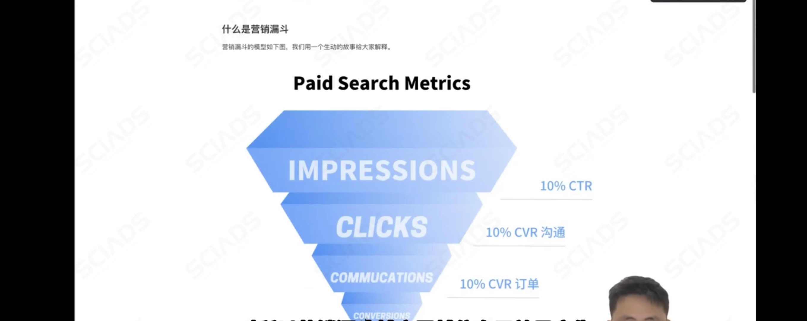
假设你现在是医院的老板，你知道丰胸项目平均客单净利润为2万元人民币。位于上图营销漏斗中的最下层（成交+业绩）。
假设平均每天需要5个成交。并假设搜索的关键词只有“丰胸”，那么每天需要的
展现量
5*10*10*10=5.000
点击量
5*10*10=500
咨询量
5*10=50
点击收益
Y200=Y20,000/100
总结一下，5个成交需要5000展现，500点击，50咨询。单次点击收益为￥200，因此如果点击成本低于200，那么点击成本与收益之间的
差额就是广告带来的净利润了。事实上，“丰胸”这个关键词在大城市的首页竞价，通常都在￥100元左右。因为即使这么高的CPC，照样
是有大钱赚的。
未自动发现明确问题；仍建议结合原图和上下文复核。
本页 OCR 置信度较高，暂无待确认段落。
营销漏斗&效果广告
事实上，电商运营和整容医院的互联网运营是有共通处的。如果能够优化网页，提升用户咨询的转化率；优化话术，提升用户成交的转化
率，就能有效提升点击收益和总收益。
提升管理效率
通过营销漏斗，我们把线上运营业务切分成若干彼此独立的模块，针对业务短板进行优化与改进。
决策取舍
比如加大点击成本（￥100->￥150），可以增加点击量（500->1000）和成交量（5->10），但是单次点击收益从（￥10.000->
￥5.000）。总收益还是50,000=5*10,000=10*5,000。
2e24_YyZKlrEM0X
营销漏斗位置和广告类型
越偏漏斗底层的广告越偏效果（广告）、越偏漏斗上层的广告越偏品牌（广告）
本页未识别到需要单独列出的公式。
未自动发现明确问题；仍建议结合原图和上下文复核。
本页 OCR 置信度较高，暂无待确认段落。
亚马逊运营：站内&站外
对于亚马逊平台来说，站外营销和广告属于营销漏斗的上层，站内广告属于营销漏斗的底层。因此，站内展示的广告更偏效果，站外展示
的广告更偏品牌。
展现的定义
对于点击的定义，大家不会有歧义。对于展现则是有多种定义的。
传统定义
只要被页面加载了，不需要在屏幕中出现的，也会被机器认为是一次展现（虽然人都没有看到！）。我们从业务上可以认为这是无效
展现
可视展现
各个平台有不同的定义，亚马逊广告的定义是50%以上的广告物料在屏幕中被展现1秒以上，被认为是有效展现（vCPM）。
本页 OCR 置信度较高，暂无待确认段落。
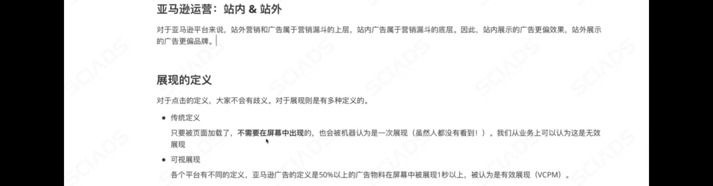
订单的定义
订单的定义表面上看似乎是很明确的，实则不然，特别是在电商领域。因为存在订单归因的问题，也就是把订单和哪一次点击建立关系是
可以不同的。
订单时间
以亚马逊广告为例，如果我（某个访客）今天产生的点击，我5天后再购买，在订单归因上，会归因到5天前的点击。而通常我们的定
义是当天点击当天购买才算是营销漏斗上相关的的。
订单范围
仍以亚马逊广告为例，如果我（某个访客）今天产生的点击产品A（某店铺X），我5天后购买了店铺X的产品B。那么B的订单和销售
额会被归因到5天前对A产品的点击上（至少在计算ACoS时）。这当然也与我们通常认为的归因方式不一样。
本页 OCR 置信度较高，暂无待确认段落。
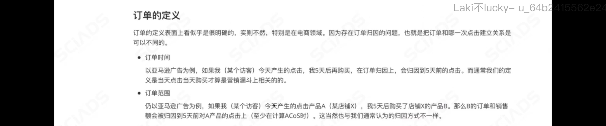
第 4 节
标题来自：sciads课程截图/4/IMG_4553.jpg
ECPM：坑位和排名的算法
广告为什么要计算？这个问题和洗澡为啥要脱衣服一样，是一个很奇怪的问题。之所以会有这个问题，主要是不少卖家朋友没有明确广告
的目标。回顾第2章，我们讨论了广告的分类：品牌广告和效果广告，我们中小卖家主要投放的效果广告。效果广告的目标就是在给定预
算下现实广告订单的最大化。如果认为广告是给关键词冲排名的，或者其它直观感觉的原因，那就会陷入各种逻辑混乱和迷茫中了。
解决问题的关键在于全局思考，只从自身视角和利益出发，就会越来越迷茫。如果立足全局，也站在亚马逊平台的角度思考，就能够豁然
开朗。我们在之后章节中将介绍的拍卖机制，博弈理论都来源于全局的思考方式。
名词解释
CTR:clickthroughrate，点击率
CVR：conversionrate，转化率
ECPM：expectedcostpermille，千次展现收益
未自动发现明确问题；仍建议结合原图和上下文复核。
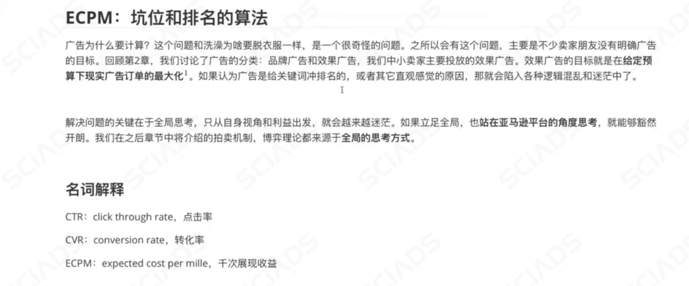
CVR：conversionrate，转化率
ECPM：expectedcostpermille，千次展现收益
什么是ECPM
ECPM是平台为了评估流量的变现能力而设计出来的定量指标，我们以亚马逊的佣金收入来具体的讨论（为了方便，暂时不考虑FBA费用
和广告费）
ECPM=1000*CTR*CVR*Price*Commission
可以这样理解，对于某个搜索词的某个广告位，预估的佣金收入和点击率，转化率，售价，平台佣金率正相关。亚马逊想要提升佣金，就
必须在排名算法上让ECPM高的ASIN抢到坑位。
对于平台来说，某个时间段（比如某个月）内，佣金比率可以大致理解成一个常数（不变量），那么就有（α是正比于）。
ECPMxCTR*CVR*Price
因此，结论非常简单，对于抢坑位的算法来说，亚马逊会优先让CTR和CVR以及价格3者都最高的产品排在流量黄金位（首页首屏）。
未自动发现明确问题；仍建议结合原图和上下文复核。
本页 OCR 置信度较高，暂无待确认段落。
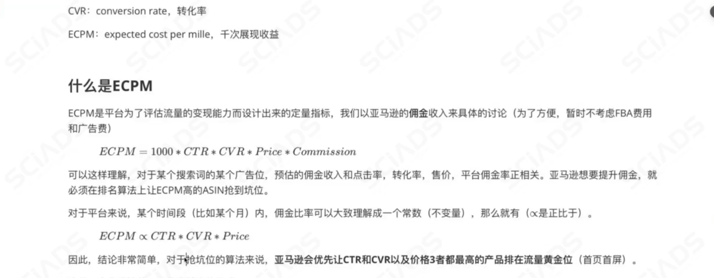
为什公降价可以提升排名
因为降价后虽然Price下降，但是CTR和CVR都会提升啊。举例就清楚了。
请刷
单是
Plan
Price
CVR
ECPM
CTR
身试法
法行为
$20
降价前
10%
10%
200
降价后
$15
15%
15%
因此，降价能有效提升排名就不奇怪了。另外，为什么降价后很快亚马逊平台就能更新ASIN的CTR和CVR呢？这个秘密我们在进阶篇再慢
慢解开。
为什么刷单可以提升排名
因为刷单通常还伴随着刷评，评论能够扭曲产品的真实点击率和转化率。特别是获得bestseller或者Amazon'schoice标签。
参考下表
ECPM
Price
CVR
Plan
CTR
刷单前
10%
10%
$20
刷单后
$20
15%
15%
这是另外一个问题
为一种广告行为（虽
很明显，刷单的效果比降价更厉害（ECPM
刷单是可以实现
然违法），因为可以提升产品的转化率和溢价。同时拥有效果广告的优点，门槛低，见效周期短。所以
什么的，刷单是理论
上ROI最高的广告手段。
未自动发现明确问题；仍建议结合原图和上下文复核。
本页 OCR 置信度较高，暂无待确认段落。
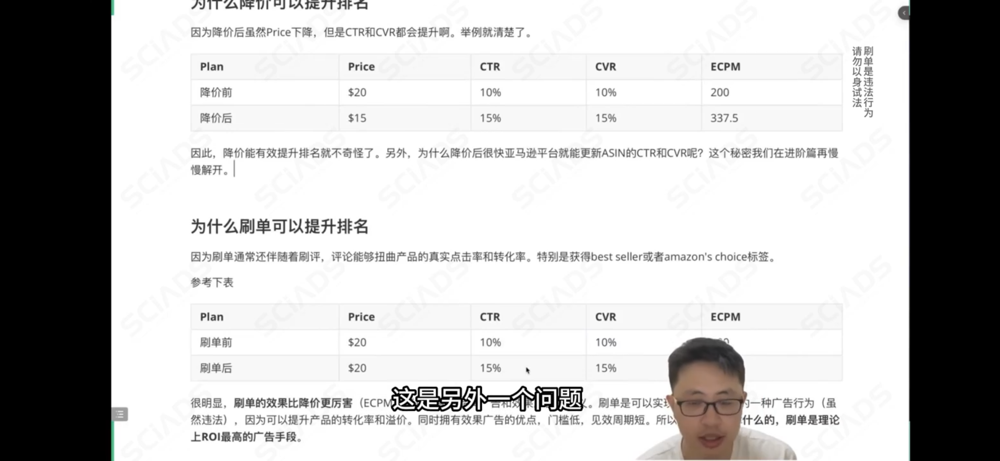
为什么刷单可以提升排名
因为刷单通常还伴随着刷评，评论能够扭曲产品的真实点击率和转化率。特别是获得bestseller或者Amazon'schoice标签。
参考下表
Plan
CTR
ECPM
Price
CVR
刷单前
10%
10%
$20
200
450
刷单后
$20
15%
15%
很明显，刷单的效果比降价更厉害（ECPM更高）。回想品牌广告和效果广告的定义。刷单是可以实现品牌广告效果的一种广告行为（虽
然违法），因为可以提升产品的转化率和溢价。同时拥有效果广告的优点，门槛低，见效周期短。所以，不考虑法律什么的，刷单是理论
上ROI最高的广告手段。
为什么投广告能提升排名
因为投广告同样可以改变平台对于CTR和CVR的预估，需要说明的是投广告的效果和效率远不如刷单，有时甚至会有负作用（通过广告发
现产品竞争力不足，从而放弃产品及时止损的情况也不少）。具体算法咱们在实战篇展开，敬请期待。
课后作业
广告投得好
中黑科技的本质了？
可以结合江湖中的秘术"合并僵尸贴"谈一谈对排名的影响，为什么。
未自动发现明确问题；仍建议结合原图和上下文复核。
本页 OCR 置信度较高，暂无待确认段落。
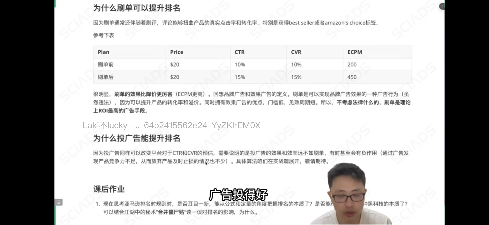
对于平台来说，某个时间段（比如某个月）内，佣金比率可以大致理解成一个常数（不变量），那么就有（α是正比于）。
因此，结论非常简单，对于抢坑位的算法来说，亚马逊会优先让CTR和CVR以及价格3者都最高的产品排在流量黄金位（首页首
这是一个非常简单，又非常精确的公式。
机器学习
为什么机器学习这么重要呢？因为ECPM的计算中涉及到的2个变量CTR和CVR都是随机变量，需要通过机器学习去预估，机器学习算得越
准，那么系统的推荐精确度就会越高，用户体验提升（因为CTR和CVR越高，平台的买家就更容易买到需要的商品）。同时平台也赚到了
562e24_YyZKlrEM0X
更多的佣金。
我们会在进阶篇深入讨论计算CTR的一些细节。眼下，我们只要清楚，机器学习演化到深度学习（AI）的在搜索引擎排名中的主要目的就
是为了把CTR算得更准。
为什么降价可以提升排名
因为降价后虽然Price下降，但是CTR和CVR都会提升啊。举例就清楚了。
Price
Plan
CVR
会给大家一起来看看
降价前
$20
10%
降价后
$15
15%
15%
未自动发现明确问题；仍建议结合原图和上下文复核。
本页 OCR 置信度较高，暂无待确认段落。
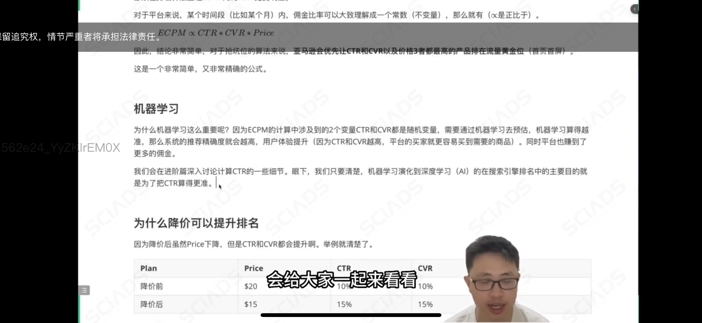
第 5 节
标题来自：sciads课程截图/5/IMG_4565.PNG
搜索广告的排序算法：从GFP到GSP再到VCG
上次说的是自然排名的情况，这次我们来聊聊广告排名的算法。事实上，我们在广告发展历史的时候其实也留了个坑（当时说营销漏斗和
拍卖机制都和互联网广告相关）。
要说广告排序的算法，我们要先从拍卖机制说起。事实上，很多看似简单的问题，往深了看往往会非常复杂，请大家做好准备，咱们一起
来探索排名的秘密。
名词解释
GFP:generalfirstprice，价高者得
GSP：generalsecondprice，会考虑出价和点击率等因素的拍卖机制，可以实现局部纳什均衡（首先被google等采用）
VCG：Vickrey-Clarke-Groves，是发现者的首字母。可以实现全局纳什均衡（首先被facebook等采用）
拍卖机制
上绝大部分时间的
拍卖，这个大家应该都不陌生。电视里古玩和文物的拍卖就是一些大佬举牌，价高者得。在互联网出现之前，
重要的原困晨护卖物不再唯一。在传统的拍
拍卖就是价高者得。为什么互联网诞生后，情况
然竞拍人有多个，
多的广告主。此
时，价高者得的机制就有很大的限制了。
本页未识别到需要单独列出的公式。
本页 OCR 置信度较高，暂无待确认段落。
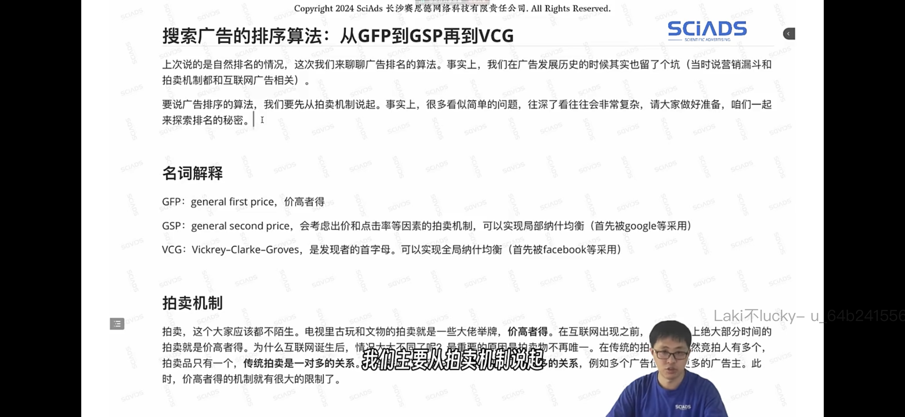
GSP：generalsecondprice，会考虑出价和点击率等因素的拍卖机制，可以实现局部纳什均衡（首先被google等采用）
VCG：Vickrey-Clarke-Groves，是发现者的首字母。可以实现全局纳什均衡（首先被facebook等采用）
拍卖机制
拍卖，这个大家应该都不陌生。电视里古玩和文物的拍卖就是一些大佬举牌，价高者得。在互联网出现之前，人类历史上绝大部分时间的
拍卖就是价高者得。为什么互联网诞生后，情况大大不同了呢？最重要的原因是拍卖物不再唯一。在传统的拍卖中，虽然竞拍人有多个，
拍卖品只有一个，传统拍卖是一对多的关系。在互联网广告诞生后，拍卖变成了多对多的关系，例如多个广告位对应更多的广告主。此
时，价高者得的机制就有很大的限制了。
功利主义1：资本主义的伦理学根基
功利主义（utilitarianism）是伦理学中的一个派别。事实上，伦理学是哲学的一个分支，是法学和政治学的哲学基础。功利主义的古典代
更进一步，功利主义将功利的大小用货币定量的表达，这也就形成了资本主义的伦理学基础。赚钱越多的人，就是越道德的”。
也就是说，在功利主义看来，让全体收益最大化的原则和策略是最道德和正确的。而价高者得的拍卖机制在互联网广告多对多的拍卖中，
就是Greathappinessforthemostgreatnumberofpeople
纳什均衡：囚徒困境的启示
SCADS
本页未识别到需要单独列出的公式。
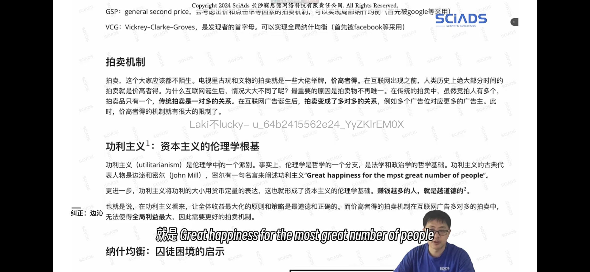
认罪
不认罪
0,5
Laki不ludky-u_64p241认罪24_yzi3rEM3
5,0
不认罪
1,1
假设只考虑2个犯人A和B，A和B的博弈策略中，不论对方如何行动，自已都不认罪才是最优解。因此，假设A和B都是理性人（自私且聪
明），那么最终博弈的结果就是A和B同时不认罪（一共坐2年牢）。这个最终的结果是一个博奔均衡状态，在这个状态下博弈是稳定的，
这个状态就叫做纳什均衡。我们很快就会看到纳什均衡在互联网广告中的决定性作用。
事实上，这里提出了一个很尖锐的问题和挑战，如何设计一种（拍卖）机制，让纳什均衡状态出现在全局最优下，提升所有参与者（全社
会）的利益。
前提
叫做纳什均衡
在此处，纳什均衡成立的前提是决策参与者的决策和好分的决策关奖个解耦）
功效最大化
局功利最大化
SCRDS
本页未识别到需要单独列出的公式。
未自动发现明确问题；仍建议结合原图和上下文复核。
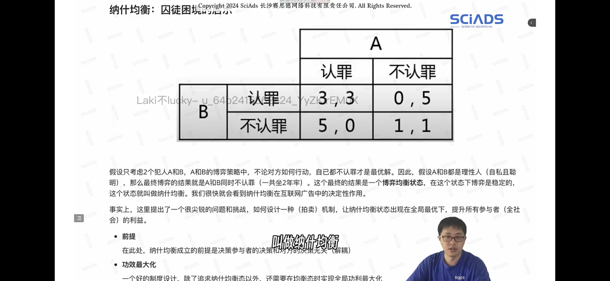
（竞拍人）。将所有竞拍者的出价降序排列，取出排名前3的广告主，根据他们的出价分别放置广告的1，2，3名，C春入DS
收费
广告位置
广告主
最高出价
clicks
(美金)
(rank)
64b2415562e24_YyZ
10*100=1000
10
100
50
8*50=400
20
6*20=120
GFP有一个致命的问题，就是该拍卖机制无法形成纳什均衡。为什么纳什均衡这么重要？我们看一下GFP下产生了什么样的后果。
如下图，以A为例，他可以不断的降价（每秒），并重新查看广告排名，直到不能降低为止，A最终出价为$8.01。假设B也和A一样，最终
降低至$6.01。此时，A可以继续降价至6.02。如此往复，永远没有一个静态状态（纳什均衡态）。这个后果非常严重，
平台的广告收入锐减
GFP鼓励广告主不断降低出价，导致整个售卖的CPC降低，平台广告收入降低
）平台的运营成本提升
平台搜索质量下降
告位。
因为搜索时使用CPC而不是ECPM降序排列广告，因此不会考虑CTR等指标，因此搜索相关度低的
SOADS
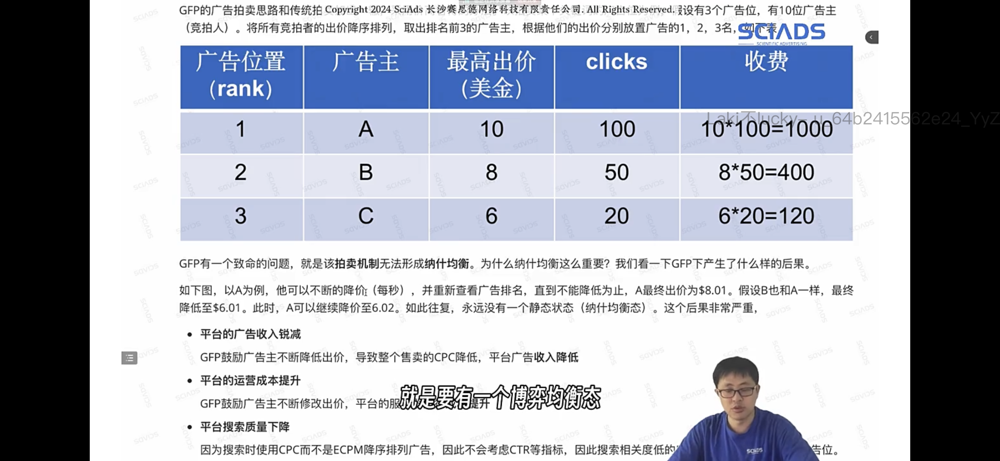
图，以A为例，他口
降低至$6.01。此时，A可以继续降价至6.02。如此往复，永远没有一个静态状态（纳什均衡态）。这个后果非常严重
平台的广告收入锐减
）平台的运营成本提升
GFP鼓励广告主不断修改出价，平台的服务器运行成本提升
平台搜索质量下降
因为搜索时使用CPC而不是ECPM降序排列广告，因此不会考虑CTR等指标，因此搜索相关度低的广告只要出价高也会获得广告位。
这就有可能出现搜索拼多多时，排名第一的是淘宝的情况。
排第一
循环
提升$0.01,
降低$0.01
A他看到自己排第一了之后
SCADS
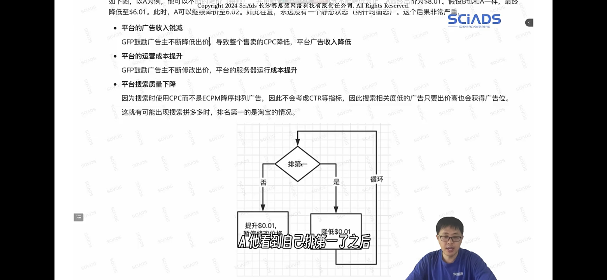
GSP和google的崛起
面对GFP的缺陷，人们急需一个替代性的，能取得博弈纳什均衡态的拍卖方法。GSP也就应运而生了。最早使用GSP的公司是
DoubleClick，google在2008年收购了DoubleClick。GSP主要用在搜索广告，如亚马逊站内广告，直通车，googleadwords等。
GSP的基本排序原则是根据ECPM降序排列。考虑到广告中ECPM的公式如下。
ECPMxCTR*bid
在GSP下,
CPC = min(bid, CTRnegbidne
CTR
这也是为什么在投亚马逊站内广告时，CPC会比bid低。因为大部分的搜索广告仍然使用的GSP的拍卖方式。结果可参考下图，
出价
收费
广告主
广告位置
CPC
clicks
(美金)
(rank)
100
50
50=30
它需要有一个纳什均衡
20
=8
SOLDS
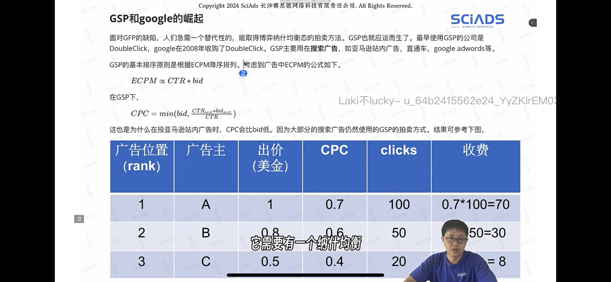
(rank)
（天金）
100
50
20
●平台收入提升
采用ECPM为排序变量（优化目标），理论收入大大提升
平台的运营成本降低
GSP下，能够实现局部纳什均衡，每个广告主的出价和别人无关，只和自己的目标相关。出价的最优策略是说真话（truthteling）3
。我们在后续的篇章（特别是实战篇），会讲清楚truthtelling的具体业务应用。此处，大家明白理论框架就好了。不管如何，广告
主不需要像不停的修改自己的价格（如同GFP规则下）
平台搜索质量提升
采用ECPM为优化目标的另一优势。因为CTR也会影响排序了。
就是最优策略是truthtelling
机器学习的崛起
GSP的一个重要缺点就是CTR预估。因为平台要排序的话，需要了解ECPM，而ECPM中产品的CTR是需
这样业务
倒逼技术，机器学习的崛起也就不可避免了。我们在进阶篇会一起看看CTR预估的古典算法之一：议
SCADS
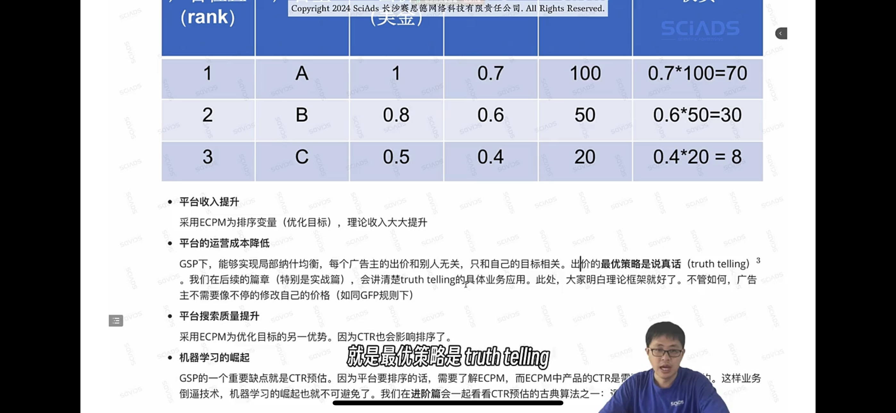
20
平台收入提升
采用ECPM为排序变量（优化目标），理论收入大大提升
平台的运营成本降低
GSP下，能够实现局部纳什均衡，每个广告主的出价和别人无关，只和自己的目标相关。出价的最优策略是说真话（truth telling）3
。我们在后续的篇章（特别是实战篇），会讲清楚truthtelling的具体业务应用。此处，大家明白理论框架就好了。不管如何，广告
主不需要像不停的修改自己的价格（如同GFP规则下）
平台搜索质量提升
采用ECPM为优化目标的另一优势。因为CTR也会影响排序了。
机器学习的崛起
倒逼技术，机器学习的崛起也就不可避免了。我们在进阶篇会一起看看CTR预估的古典算法之一：逻辑回归。
VCG和Facebook
它至一定要提升它的点击率
ook是率先采用VCG的大
VCG能够实现全局纳什均衡，能够实现理论上
使用于信息流广告的
排序。
SCADS
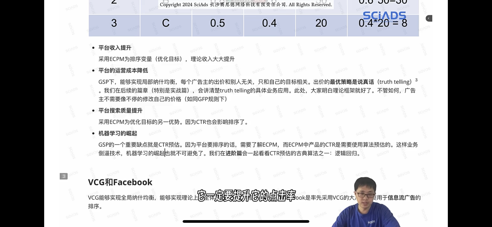
第 15 节
标题来自：sciads课程截图/15/IMG_4147.jpg
SP
SP广告是整个站内的效果广告中最重要的单元，咱们在上一篇中介绍了。主要分为2个方面的原因，首先是流量的量和质，SP做为CPC付
费的原生广告，流量的质量和自然流量无异（特别是首页的搜索广告）；其次SP广告的广告位最为充足，在站内流量的量上最有优势。
考核标准
因为SP广告是效果广告，因此考核标准可参考11章中所述，是一个带约束的优化问题。通过更抽象的理解和定义SP广告的目标，我
们也能认识到SP广告和deal在运营目标上，是一致的。
广告出单量（最大化）
预算上限
预算
所以说它的转化率之类
小组（或产品
线）也可以根据销售额目标制定对应的广告预算上限。然后具体的运营，在团队预算上限下，制定自
未自动发现明确问题；仍建议结合原图和上下文复核。
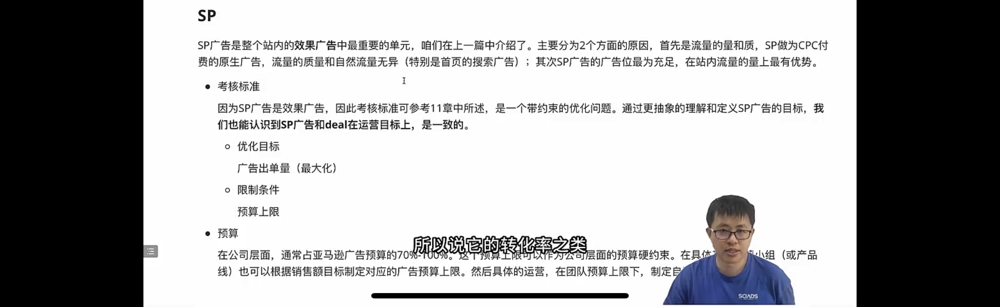
SD
SD广告因为共有2种收费方式，咱们需要分开讨论。
考核标准
vCPM付费
属于品牌广告，部分可参考DSP，稍微不同的是，SD广告包含了站内和站外。根据第3章中营销漏斗的知识，SD广告因为站内流
量在营销漏斗的下层，因此效果广告属性超过DSP。根据我的经验，当选择投放标的为人群且vCPM付费时，会有更多站外流量
（此处，同学们也可以分享自己的经验，因为SD广告的定位，亚马逊也在不断调整，我的经验也只能做为参考）。
CPC付费
属于效果广告，部分可参考SP广告。稍微不同的是（根据13章中对于SD广告的介绍）SD广告对于bid的可控度远远低于
Amazon。因此定位是SP广告的补充。如果SP广告的预算有花不出去的，可以尝试SD广告。在投放时，我们推荐在campaign层
面选择optimize for conversions。同时选择具体的ASIN投放，提升对于人群的可控度。
SD广告近3年变化较大，不论是收费方法，以及bid的调整选项，以上结论都只适用于视频生成的日期（2023年7月）
预算
公司，我们推荐优
在公司层面，通常SD广告的预算控制在0-10%。对于效果广告来说，优先级低于SP广告。对于营销预算
先选择SP广告。
vCPM实际上跟DSP是差不多的
SB
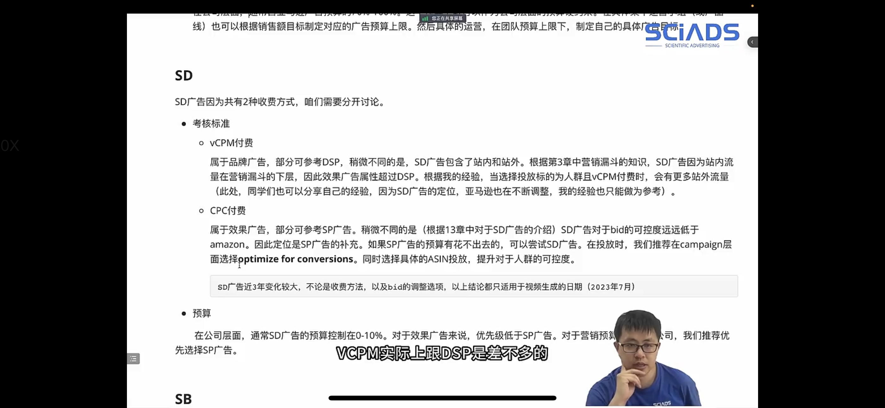
SB
SB广告分为Headline和view，单独谈。同时，由于都是CPC付费的，都可以理解成是效果广告
考核标准
oHeadline
我认为，Headline只适合核心产品线，因为Headline作为黄金搜索流量（特别是移动端）竞价非常高。相对应的Headline广告也
因为其富媒体的展现形式，具有品牌广告的一些特性。因此考核标准可同时参考品牌广告和效果广告的特点。具体的，使用效果
广告的考核方法，但是CPS目标需要明显高于该品线其它的SP广告的CPS目标。
oSBV
SBV和SP广告非常类似，完全可以套用SP广告的考核方法。主要差别除了SBV的富媒体特点带来的品牌特性（高CTR高CVR以
外）。还有SBV的广告位远少于SP。SBV广告从收费和展现形式和效果上来说，是SP的广告的强化版，我们优先推荐SBV广告。
24_YyZKlrEM0X
预算
SB的预算大约占公司花费的0%-20%。
关于广告效果的补充说明
需要说明的是SP广告的广告销量是按照7天归因计算的，其它广告都是14天计算的。并且，关于广告效果，
和SD广告中的
有不同，细节本课就不讨论了）。
们的产品。因
简单举例，对于lookalike定位的remarketing，大家可以这么理解，如果没有对应投放广告，仍然会有50%右
此，如果广告显示有100个订单，实际上50个订单不投广告也会有，广告的真实订单价值应当只有表显
因此，如果有朋友发现自己的DSP或
告的归因技术
中场也是
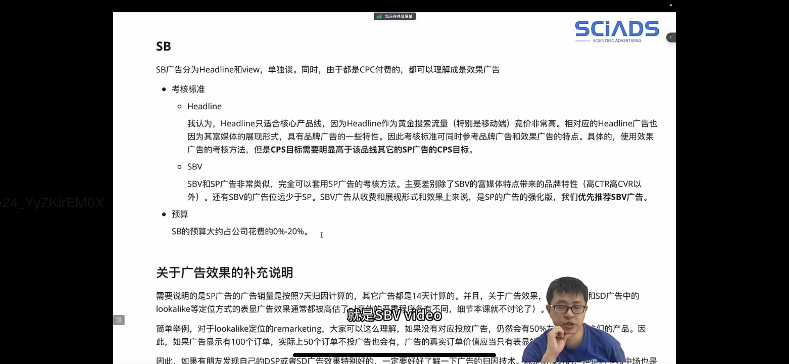
关于广告效果的补充说明
需要说明的是SP广告的广告销量是按照7天归因计算的，其它广告都是14天计算的。并且，关于广告效果，特别是DSP和SD广告中的
lookalike等定位方式的表显广告效果通常都被高估了（高估的严重程序各有不同，细节本课就不讨论了）。
简单举例，对于lookalike定位的remarketing，大家可以这么理解，如果没有对应投放广告，仍然会有50%左右的人买咱们的产品。因
因此，如果有朋友发现自己的DSP或者SD广告效果特别好的，一定要好好了解一下广告的归因技术。球是前锋进的，但是后卫和中场也是
有功劳的。
想详细了解的朋友，可以阅读公众号“计算广告“中的《Facebook的广告效果真的那么好么？》
课后问题
1．你们公司有公司层面的销售额目标，那么有公司层面的广告年度预算方案吗？如果没有，你会如何设计一个预算方案？
5562e24_YyZKlrEM0X
上期问题参考答案
大家现在有啥想
A：理论是实战的基础。同时，咱们课的特色之一就是坚持让大家知其然也知其所以然
同时，
一定要把整
本页未识别到需要单独列出的公式。
本页 OCR 置信度较高，暂无待确认段落。
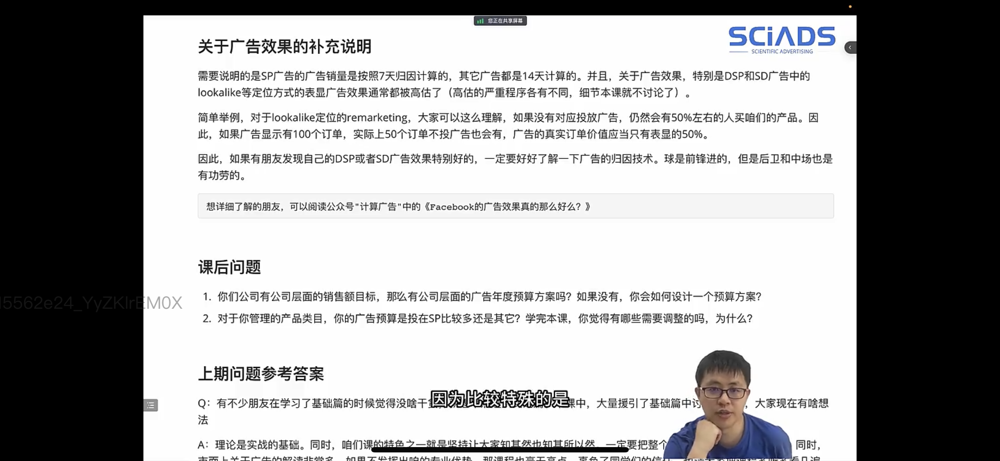
课后问题
上期问题参考答案
Q：有不少朋友在学习了基础篇的时候觉得没啥干货，就想早点进入实战篇。本课中，大量援引了基础篇中讨论的知识，大家现在有啥想
A：理论是实战的基础。同时，咱们课的特色之一就是坚持让大家知其然也知其所以然。一定要把整个结论的前因后果都说清楚。同时，
市面上关于广告的解读非常多，如果不发挥出咱的专业优势，那课程也毫无亮点，辜负了同学们的信任。也请大家把课程多听多看几遍，
尽量理解。关于文本看不清楚的情况，建议在电脑上看，手机上确实不太容易看清楚。
Q：江湖上有传闻，不少卖家投了1-3个月DSP后就再不续费了，请结合今天说学，谈谈为什么？
A：DSP是CPM付费的站外（营销漏斗上层）的广告，属于品牌广告。因此对于有效果广告自标的中小卖家来说，业务需求和广告产品匹
配度比较低。
上上期遗漏的问题参考答案
A：在2023年的当下，如果你是个专业卖家，那么应当选择投手动广告。使用合适的广告工具，能保持和
前提下获得
更好的广告效果，以及广告的可优化性技术在变化自动广告作为2013年左右的产品也需要与时
本页未识别到需要单独列出的公式。
未自动发现明确问题；仍建议结合原图和上下文复核。
本页 OCR 置信度较高，暂无待确认段落。
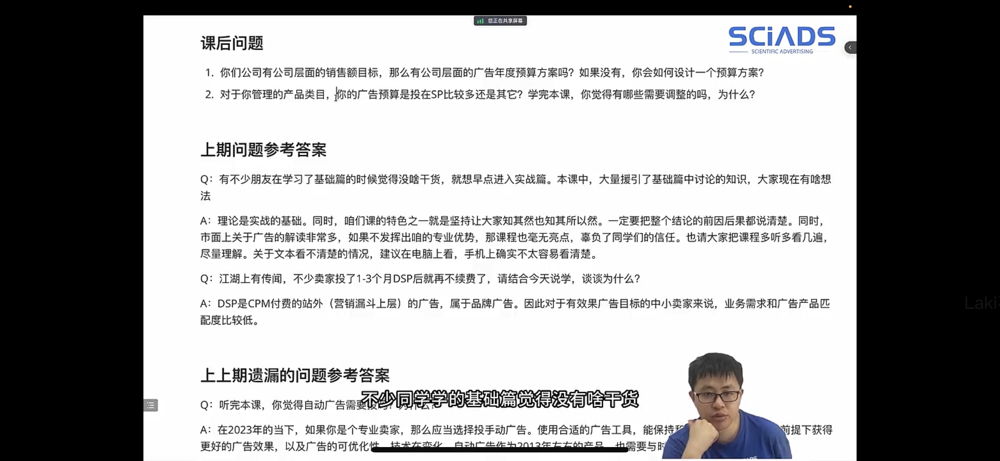
A：理论是实战的基础。同时，咱们课的特色之一就是坚持让大家知其然也知其所以然。一定要把整个结论的前因后果都说清楚。同时，
市面上关于广告的解读非常多，如果不发挥出咱的专业优势，那课程也毫无亮点，辜负了同学们的信任。也请大家把课程多听多看几遍，
尽量理解。关于文本看不清楚的情况，建议在电脑上看，手机上确实不太容易看清楚。
Q：江湖上有传闻，不少卖家投了1-3个月DSP后就再不续费了，请结合今天说学，谈谈为什么？
A：DSP是CPM付费的站外（营销漏斗上层）的广告，属于品牌广告。因此对于有效果广告目标的中小卖家来说，业务需求和广告产品匹
配度比较低。
上上期遗漏的问题参考答案
Q：听完本课，你觉得自动广告需要投吗？为什么？
A：在2023年的当下，果你是个专业卖家，那么应当选择投手动广告。使用合适的广告工具，能保持和自动广告效率相似的前提下获得
更好的广告效果，以及广告的可优化性。技术在变化，自动广告作为2013年左右的产品，也需要与时俱进啦。
Q：为什么自动广告表现好的词拿出来投精准表现有些会表现比较差？
A：首先，要明确定义，什么叫做表现差。如果理解成CPS较高。那么本问题就很好回答了。自动广告的bid通常较低，而手动广告的bid
较高。因此，CPS结果差别较大。
如果你是个专业卖家
本页未识别到需要单独列出的公式。
未自动发现明确问题；仍建议结合原图和上下文复核。
本页 OCR 置信度较高，暂无待确认段落。
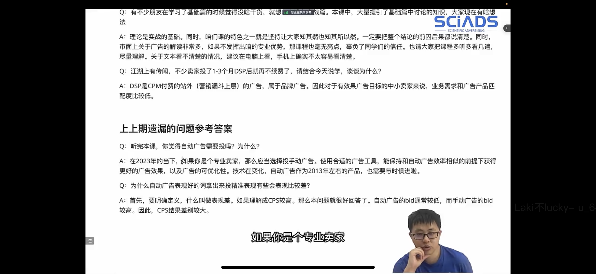
第 16 节
标题来自：sciads课程截图/16/IMG_4154.PNG
广告投放的核心问题（1）：怎么找词&应该投多少个词
这是一个非常宏观的大问题，既然是大问题，我们不妨把问题拆成若干小问题（具体业务场景），一一分析和处理。
另一方面，我们也需要解释一下关键词数量和广告效果之间是什么关系，为什么？
名词解释
广告标的物：也就是可以给予bid的对象，比如keywords，ASIN
关键词数量和广告效果的关系
在运营上，我们为每个产品设定了广告预算和CPS目标。但是这个问题目标只能被deal接受，不能被SP广告接受。
deal中，只需要填写折扣和参与deal的产品数量。在财务上，等价于cPs目标和预算上限。
词的转化率不同，
我们需要通过为广告标的物出价（作为媒介），来间接表达出广告的CPS目标。由于我们的产品A，对应不同
因此理论最优解应当是计算出每个搜索词的转化率并且单独出价。因此理论最优方案应该是
9a2究尽所有的搜索词，作为广告关键词，用exa小问题的意思就是说，
计算出所有搜索词对应的EcvR，对应不同的bid
此时，我们知道了，关键词数量越多，如未能
本页未识别到需要单独列出的公式。
未自动发现明确问题；仍建议结合原图和上下文复核。
本页 OCR 置信度较高，暂无待确认段落。
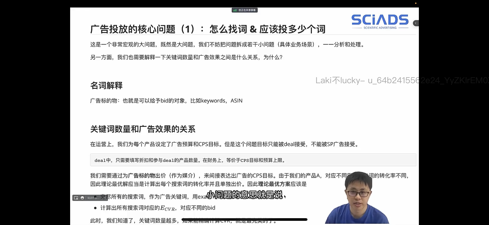
关键词数量和广告效果的关系
在运营上，我们为每个产品设定了广告预算和CPS目标。但是这个问题目标只能被deal接受，不能被SP广告接受。
deal中，只需要填写折扣和参与deal的产品数量。在财务上，等价于cPs目标和预算上限。
我们需要通过为广告标的物出价（作为媒介），来间接表达出广告的CPS目标。由于我们的产品A，对应不同用户搜索词的转化率不同，
因此理论最优解应当是计算出每个搜索词的转化率并且单独出价。因此理论最优方案应该是
穷尽所有的搜索词，作为广告关键词，用exactmatch
计算出所有搜索词对应的EcvR，对应不同的bid
此时，我们知道了，关键词数量越多，如果能精确计算CVR，就是最完美的了。
aki不lucky-u.64b2415562e24.YyZKlrEM0X
理想很丰满，现实很骨感，在第7章（为什么要有匹配模式），我们说过广泛匹配的出现，本质上就是因为我们无法穷尽所有的搜索词。
因此，我们在现实中也只能找到有限数量的关键词，也需要使用广泛匹配；不只如此，关键词数量越多，流量就会分配在更多的关键词
上，使得具体某个关键词的转化率预估难度变大
根据大数定律，关键词的流量越多，CVR才能算得越准
总结一下：
我们只有能力找到部分的关键词
结论大大约是这样子的
说点什么
关键词也不是越多越好
未自动发现明确问题；仍建议结合原图和上下文复核。
本页 OCR 置信度较高，暂无待确认段落。
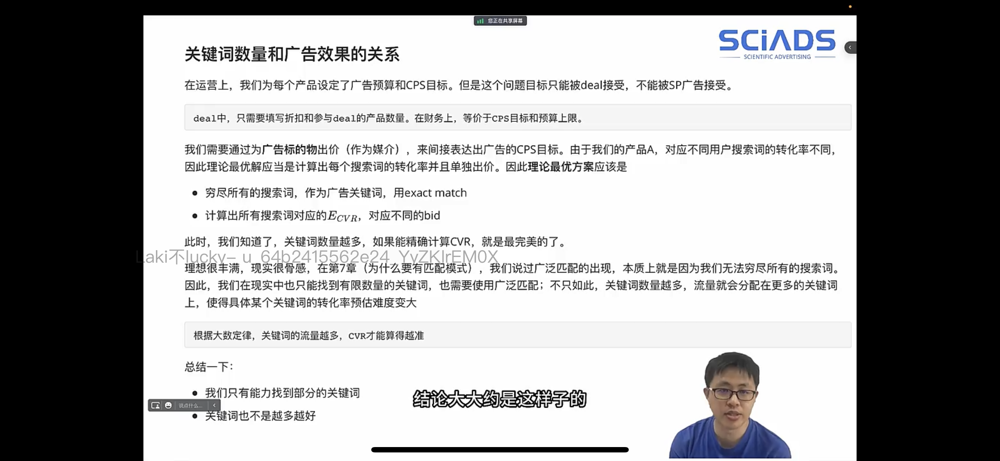
我们只有能力找到部分的关键词
关键词也不是越多越好
新品冷启动
结合上一小节的讨论，我们通常建议新品的广告不少于30个关键词，不必多于200个词。如果做的类目较单一，可以自建数据库，或者
excel，保存一些通用的关键词和否定关键词。这样效率和效果都是最优的。
优化
优化阶段，根据广告数据新增搜索词做为关键词，删除一些表现不佳的词（或者作为否定关键词）。
如何找否定关键词
否定关键词是人工能力比较重要的，至少目前来看，运营的工作经验还是不可替代的。
我们在这里主要讨论新品广告的否定关键词，特别以词组匹配为主（精准匹配更容易使用数据驱动，由软
我之前卖过一款15寸
会退货）。但是不
的双肩包，新品中大于15的数字，如16h石-18必须歪家因为双肩包需要放卑脑客户如果买了咱们的
需要否定13、14等关键词因为包足就相对来说你的边际收益就很低了
例如用户搜14inchschoolbag，13inchlaptopbackpack，咱们的产品都是适配的。
本页未识别到需要单独列出的公式。
未自动发现明确问题；仍建议结合原图和上下文复核。
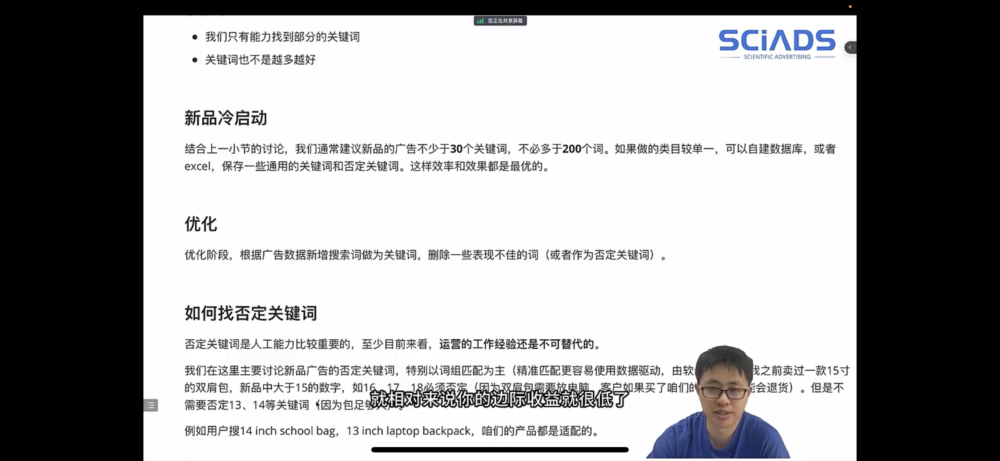
机器学习学习时代
找到离原点最远的若干个关键词，最后推荐给大家。
数据选词
相关性
我们先把就是根据你输入的Asin
本页未识别到需要单独列出的公式。
未自动发现明确问题；仍建议结合原图和上下文复核。
本页 OCR 置信度较高，暂无待确认段落。
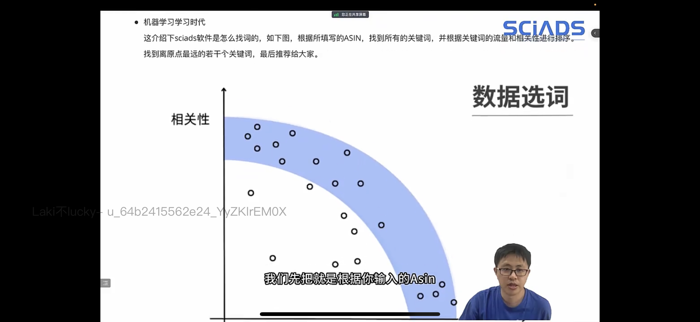
流量
课后问题
上期问题参考答案
每年春节制定下一
在每个市场，根据重度程度分配给不同品线，其中日本市场比较小（所有品线都在一起管理）；另一家公司全
下一个月的月度预
年的年度营销预算，部分营销预算作为亚马逊广告预算，产品根据总预算限制和重要程度制定年度预算。每个
算。
实际上就是你的广告一般投多少词啊
Q：对于你管理的产品类目，你的广告预算是投在SP比较多还是其它？学完本课，你觉得有哪些需要调整
牌策略的，
A：如果公司规模较小，对于重点关键优先拍视频搞SBV广告，然后是SP广告。如果公司规模较大，
本页未识别到需要单独列出的公式。
未自动发现明确问题；仍建议结合原图和上下文复核。
本页 OCR 置信度较高，暂无待确认段落。
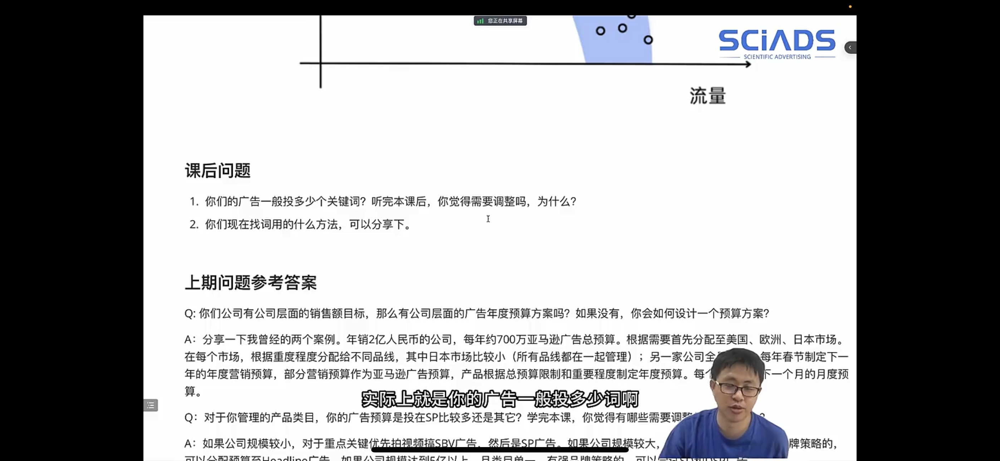
课后问题
上期问题参考答案
A：分享一下我曾经的两个案例。年销2亿人民币的公司，每年约700万亚马逊广告总预算。根据需要首先分配至美国、欧洲、日本市场。
在每个市场，根据重度程度分配给不同品线，其中日本市场比较小（所有品线都在一起管理）；另一家公司全是精品，每年春节制定下一
算。
Q：对于你管理的产品类目，你的广告预算是投在SP比较多还是其它？学完本课，你觉得有哪些需要调整的吗，为什么？
有强品牌策略的，
A：如果公司规模较小，对于重点关键优先拍视频搞SBV广告，然后是SP广告。如果公司规模较大，且产品
可以分配预算至Headline广告。如果公司规模达到5亿以上，且类目单一，有强品牌策略的，可以尝试S
我到那工作了之后
本页未识别到需要单独列出的公式。
未自动发现明确问题；仍建议结合原图和上下文复核。
本页 OCR 置信度较高，暂无待确认段落。
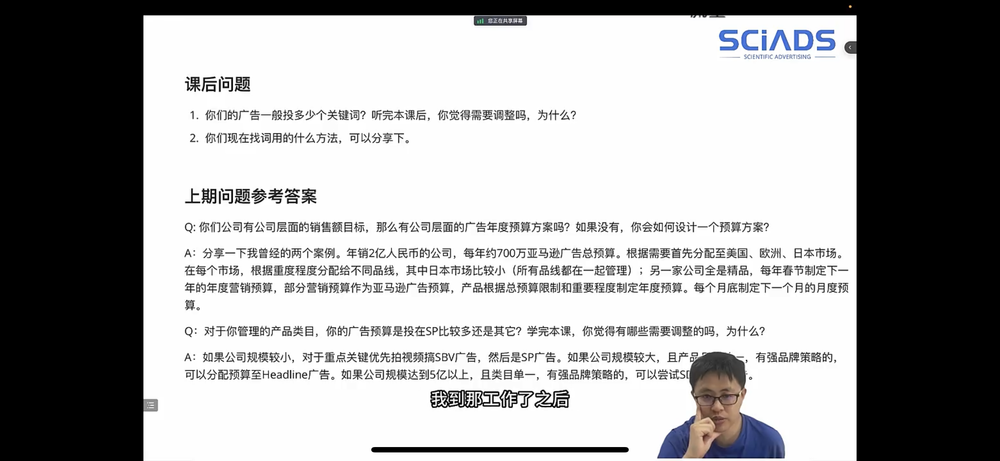
第 17 节
标题来自：sciads课程截图/17/IMG_4160.PNG
广告投放的核心问题（2）：广告结构应该如何设置
广告结构，也是需要重点学习，并且一定要广告投放者自行设置的。
业务背景
以公司为例，我们来讲一讲规模以上公司的广告结构的完全体是啥样子。小公司的话，请大家结合14章《亚马逊广告产品解读：搞清楚
到底要不要投SP，SD，SB，DSP广告》以及15章《各种广告形式如何整合管理：如何分配预算和目标》对广告形式和预算分配进行裁剪
即可。
J公司的产品都属于3C，售价在$100以上。以售价分别为$200和$500的产品E200和E500为例。
营销计划
在整体的营销当中，分为品牌广告和效果广告（参考第2章《广告的目的和分类：品牌广告还是效果广告》），分别针对给出预算和执行
团队和对应合作方。
其中效果广告主要集中在站内，以亚马逊广告SP为主，SBV为辅。品牌广告主要包括SD、DSP和站外KOL以及线下。咱们讨论的重点是站
内的效果广告。SB类型中的Headline的广告因为竞争非常激烈，在这里以品牌广告理解。
DSP
为什么说会有一定的个性化的地方在
由于DSP广告的设置相
因为DSP的不能被优化，且后台和sell
较简单（因为不是效果广告），且大多数出价和具体的匹配人群都是由Amazon算法决定的。
SOADS
本页未识别到需要单独列出的公式。
本页 OCR 置信度较高，暂无待确认段落。
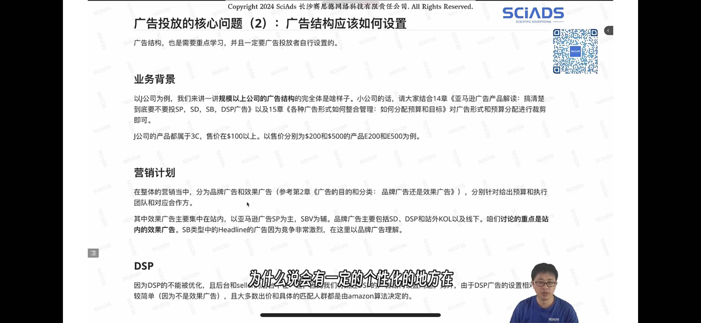
DSP
因为DSP的不能被优化，且后台和seller的后台不在一起，因此我们将跳过DSP的广告结构设置问题。另外，由于DSP广告的设置相对也比
较简单（因为不是效果广告），且大多数出价和具体的匹配人群都是由Amazon算法决定的。
关于自动广告
关于ASIN类型（PT）广告
rEMOX
背景
2024年我们发现平台又悄悄的改了商品推广广告（sponsoredproduct，以下简称SP）的ASIN（ProductTargeting）类型广告（以下简
称PT）。现在PT广告是可以匹配关键词的。
同时，又因为PT广告在结构上是SP广告的一个广告组，在PT的广告组中无法否定关键词（只能否定ASIN）。因此，想要对流量进行精准
切分，以使PT广告只能匹配ASIN就无法在当前广告结构中完成了。
解决方案
PT广告单独生成一个广告活动（campaign），该广告活动中只有一个PT广告组。在广告活动层面词组否定（negativephrase）产品相
关的核心关键词（例如蓝牙音箱产品，词组否定speaker、bluetooth）。未来再通过广告优化不断找到新的非ASIN搜索词，添加作为词
组否定关键词，这样就能保证PT广告只能匹配ASIN
然后接下来说一关于自动广告啊
关于Portfolio的使用
本页未识别到需要单独列出的公式。
未自动发现明确问题；仍建议结合原图和上下文复核。
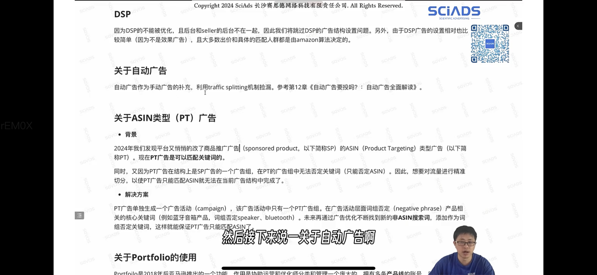
同时，又因为PT广告在结构上是SP广告的一个广告组，在PT的广告组中无法否定关键词（只能否定ASIN）。因此，想要对流重选行精焦NG
切分，以使PT广告只能匹配ASIN就无法在当前广告结构中完成了。
解决方案
PT广告单独生成一个广告活动（campaign），该广告活动中只有一个PT广告组。在广告活动层面词组否定（negativephrase）产品相
关的核心关键词（例如蓝牙音箱产品，词组否定speaker、bluetooth）。未来再通过广告优化不断找到新的非ASIN搜索词，添加作为词
组否定关键词，这样就能保证PT广告只能匹配ASIN了。
关于Portfolio的使用
Portfoilo是2018年后亚马逊推出的一个功能，作用是协助运营和优化师分类和管理一个庞大的，拥有多条产品线的账号。所谓产品线，
咱们以A公司为例，A公司销售移动充电设备、蓝牙音箱、数据线。那么因为这些产品分别属于不同的产品类别，且在管理上由不同的运
营团队操盘，在公司内部一般称为不同的产品线。
为了将公司内部上产品线的概念和广告后台关联，以增强管理效率，就设计出了Portfolio产品，在campaign之上。通常一个Portfolio命
名对应一个产品线。咱们以A公司的几条产品线为例，给出参考portfolio命名
portable_speaker
广告后台
portable_line
这个问题我们以某家做3C的公司
本页未识别到需要单独列出的公式。
未自动发现明确问题；仍建议结合原图和上下文复核。
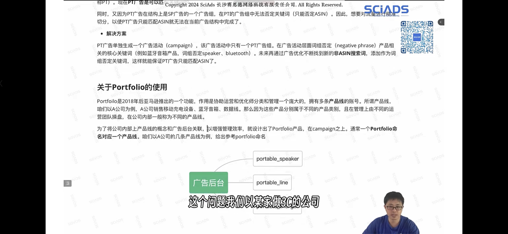
关于campaign的命名
在B站的免费课里已经为大家提供了例子。我们针对E200和E500用实例稍加说明。
campaignname（完整）
patrick_portable-power-station_E20o_sP_KT
patrick_portable-power-station_E500_SP_PT
patrick_portable-power-station_E500_SB_KT
对应的格式是
优化师姓名产品通称_SKu名_campaign类型_匹配方式，其中优化师姓名和campaign类型是选填的（默认类型为SP，不写_SP也不影响阅读）
code language
campaignname（精简）
portable-power-station_E200_KT
portable-power-station_E50o_AUTo
请大家记住命名的原则，命名的原则需要：
方便未来读和改
所谓读就是查找，在campaign和adgroup上明确写
。而改就是优化，我们优化时需要读取广
SP广告默认是SP
历史数据，而好的名字因为能提升检索效率，自然
跨部门沟通
这里特别针对有广告部门的公司，以我曾经的工作经验为例，因为品线非常多，而且上新品速度比较快，所以如果camp
本页未识别到需要单独列出的公式。
未自动发现明确问题；仍建议结合原图和上下文复核。
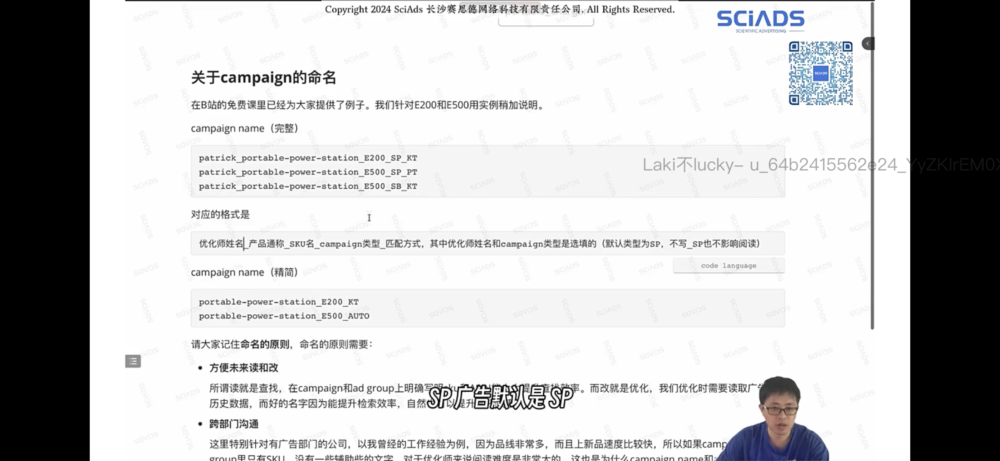
portable-power-station_E200_KT
portable-power-station_E500_AUTo
请大家记住命名的原则，命名的原则需要：
方便未来读和改
所谓读就是查找，在campaign和adgroup上明确写明sku和ASIN能大大提升查找效率。而改就是优化，我们优化时需要读取广告的
历史数据，而好的名字因为能提升检索效率，自然也可以提升优化效率
跨部门沟通
这里特别针对有广告部门的公司，以我曾经的工作经验为例，因为品线非常多，而且上新品速度比较快，所以如果campaign和ad
group里只有SKU，没有一些辅助些的文字，对于优化师来说阅读难度是非常大的。这也是为什么campaignname和adgroupname
需要写明产品的通称。
关于adgroup的命名
adgroupname
B09HGYTDTY_portable-power-station_7-12_KT_broad
（命名方法适用于SP和SBV）
B09HGYTDTY_portable-power-station_7-12_KT_exact
（SD广告也可以使用该命名，SD广告推荐使用ASIN投放，参考14章中SD的描述）
B09HGYTDTY_portable-power-station_7-12_PT
YyZKIrEMOx
显示adgroup创建时间
Adioup的命名不同于 Campdign
因为adgroup不同于campaign，官
名称中有ASIN
因为单次优化的最大单位就是adgroup，因此显示ASIN可以增加优化时的检索效率（比如在excel搜索时，可以根本不通过
campaign，直接通过adgroupname进行检索。
本页未识别到需要单独列出的公式。
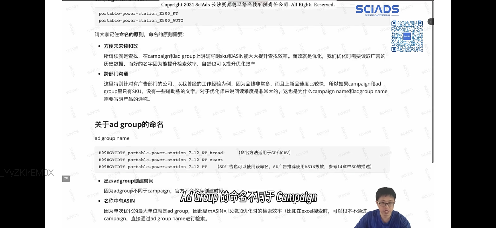
广告结构样例
以产品E200为例，如下图，包含捡漏自动广告（以下简称AUTO），关键词广告（以下简称KT），ASIN广告（PT）。
portable-power-station_E200_AUTO
adgroup1
B09HGYTDTY_portable-power-station_5-27_KT_broad
portable-power-station_E200_KT
B09HGYTDTY_portable-power-station_5-27_KT_exact
广告后台
portable-power-station_E200_PT
B09HGYTDTY_portable-power-station_5-27_pt
portable-power-station_E200_SBV
B09HGYTDTY_portable-power-station_5-27_KT_broad
一种匹配模式对应一个广告组
是的，我们的广告当中默认需要有一个broad匹配的广告组（为什么不需要phrasematch，可以参考第7章《为什么会有匹配模式：
匹配模式的比较与选择》）。exact匹配也有自己的广告组。那为什么不能混投呢？因为分成不同组的目的是为了对流量进行精细切
割，确保能对不同的搜索词出不同的价，这个功能只能由exact匹配完成。为了让相同词的不同匹配模式彼此不会竞争，就需要将
broad匹配分到一个广告组里，把exact匹配分
组中精准否定exact匹配中出现的关键订
这个产品自动广告是捡漏的
什么时候用exact匹配的广告组
本页未识别到需要单独列出的公式。
未自动发现明确问题；仍建议结合原图和上下文复核。
本页 OCR 置信度较高，暂无待确认段落。
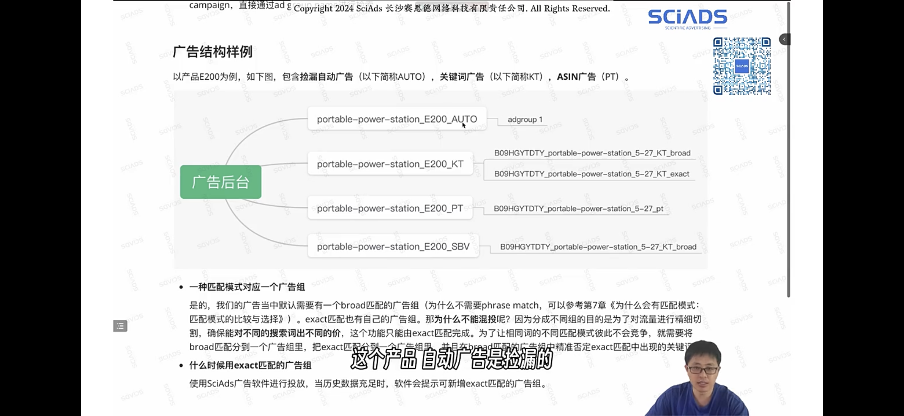
否定关键词
一般来说某个ASIN的广告以SP为主（流量最多）。SP的KT广告所生成的否定关键词，可以同时被用在PT、SBV、AUTO类型的广告，
SP广告时，方案中有可能包含否定关键词，只需要将excel中的否定关键词和对应的匹配模式复制，并人工手动添加到广告后台即
可。I
该PT广告（因为PT广告组中是无法新增关键词的）；同时，我们也无法精准的给不同关键词出价，进而无法控制CPS；最后，还会使
整个的广告管理变得混乱。总之，不管是效果还是效率上都会打折。
让KT广告匹配关键词，PT广告匹配ASIN，这样明确了关键词和搜索词之间的逻辑关系，方便后续的维护和优化。
课后问题
否定词有共用性
上期问题参考答案
Q：你们的广告一般投多少个关键词？听完本课后，你觉得需要调整吗，为什么？
价的目标
咱们举
本页未识别到需要单独列出的公式。
未自动发现明确问题；仍建议结合原图和上下文复核。
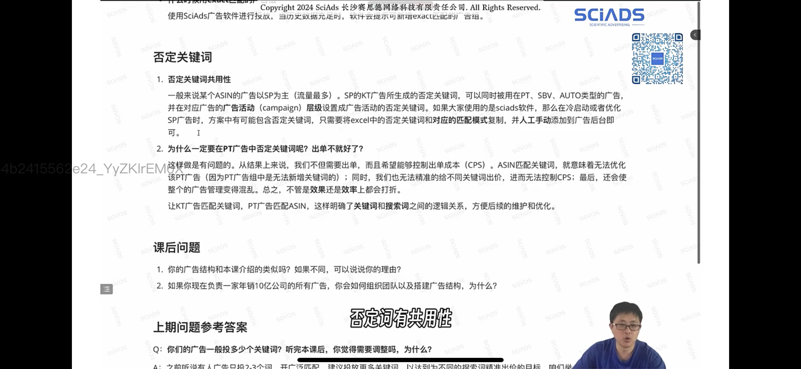
严重者将承担法律责任。
上期问题参考答案
Q：你们的广告一般投多少个关键词？听完本课后，你觉得需要调整吗，为什么？
A：之前听说有人广告只投2-3个词，开广泛匹配。建议投放更多养键词、|以达到为不同的搜索词精准出价的目极e咱们举个例子K假设目MOX
标CPS为24，当前只有1个关键词为bluetoothspeaker，我们可以看到，在转化较高的词上面，只能出低价。这样就浪费了一些优质流
量。
关键词
转化率
搜索词
CPC
CPS
bluetoothspeaker
bluetoothspeaker
24
5%
10%
bluetoothspeaker
waterproofbluetoothspeaker
12
假设有2个关键词，那么问题就可以得到解决了。每个词都可以按CPS出价。
品三三三
关键词
转化率
搜索词
CPC
CPS
bluetoothspeaker
bluetoothspeaker
5%
24
10%
24
waterproofbluetoothspeaker
waterproofbluetoothspeaker
Q：你们现在找词用的什么方法，可以分享下
中分享的关键词组合（keywords
A：事实上，百度和google的优化师培训中也会教授妃
它的出价是不一样的
conbination）。根据技术的发展，现在更推荐大家使
ASIN反查，然后人工筛选。如果想省时
么可以选择更专业的广告第三方工具。
未自动发现明确问题；仍建议结合原图和上下文复核。
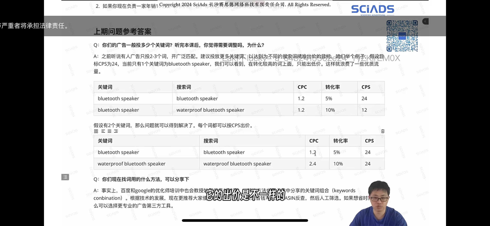
第 18 节
标题来自：sciads课程截图/18/IMG_4189.jpg
匹配模式的优劣
匹配模式本身是没有优劣的，匹配模式只有合适与否的差别。
最佳实践
YyZKIrEMOX
在新品期
匹配模式的推荐也是数据驱动的。当数据不充足时，默认可以只选用广泛匹配。
成熟期
区分，让不同广告组之间能匹配的搜索流量之间没有交集（互不相关）。具体的，对于某个ASIN的SP广告，在整个账号中（一般情况
下）应当只有一个关键词的广告活动。该广告计划包含broadmatch和exactmatah对应的2个广告组。exactmatch广告组中的所有
关键词都应当作为negativeexact的关键词放入broadmatch对应的广告组中。
本页未识别到需要单独列出的公式。
未自动发现明确问题；仍建议结合原图和上下文复核。
本页 OCR 置信度较高，暂无待确认段落。
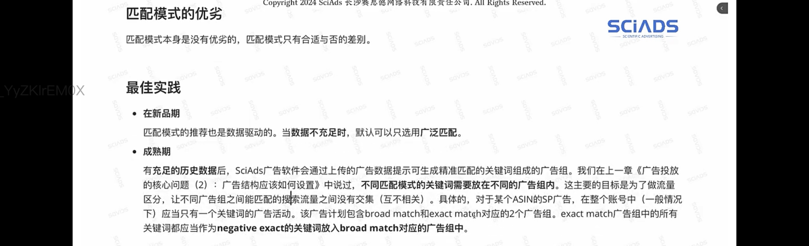
exactmatch的细节回顾
在第7章中，我们一起聊了exactmatch的细节，如下图，事实上Amazon的exactmatch和google是类似的，比如以bluetoothspeaker
foroutdoor作为关键词，至少可以匹配如下3个搜索词。也就是搜索引擎会无视介词和名词的单复数。
品三三三
搜索词
说明
关键词
匹配模式
bluetoothspeakerforoutdoor
bluetoothspeakerforoutdoor
exact
bluetoothspeakerforoutdoor
bluetoothspeakersforoutdoor
匹配复数
exact
bluetoothspeakeroutdoor
无视介词
bluetoothspeakerforoutdoor
exact
本页未识别到需要单独列出的公式。
未自动发现明确问题；仍建议结合原图和上下文复核。
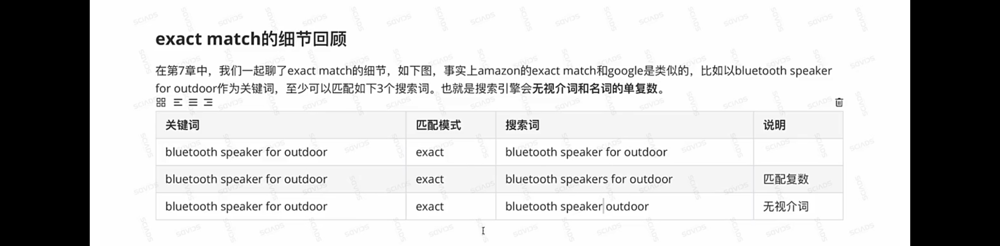
EMOX
negativeexactmatch的细节
不同于exactmatch，negativeexactmatch中关键词只包含了单复数。
关键词
说明
匹配模式
搜索词
包含介词
bluetoothspeakerforoutdoor
negativeexact
bluetoothspeakerforoutdoor
bluetoothspeakersforoutdoor
匹配复数
bluetoothspeakerforoutdoor
negativeexact
不包含介词
bluetoothspeakeroutdoor
bluetoothspeakeroutdoor
negativeexact
因为negativeexactmatch无法适配介词，因此，在添加否定关键词时，就需要特意的添加包含介词和不包含介词的版本。
本页未识别到需要单独列出的公式。
未自动发现明确问题；仍建议结合原图和上下文复核。
本页 OCR 置信度较高，暂无待确认段落。
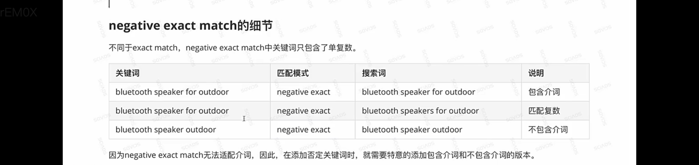
exactmatch的广告组需要添加否定词吗？
有些情况下还真需要添加。要卖的产品是袋子的封口机，关键是VacuumSealerwithbags，而vacuumsealerbags是真空袋。
根据我们前面所学，设置当下如下表，这样就能保证不会被VacuumSealerbags搜索到了。
说明
关键词
匹配模式
搜索词
VacuumSealerwithbags
VacuumSealerwithbags
exactmatch
VacuumSealerwithbags
VacuumSealerbags
匹配真空袋
exactmatch
VacuumSealerbags
VacuumSealerbags
negativeexactmatch
否定真空袋
本页未识别到需要单独列出的公式。
未自动发现明确问题；仍建议结合原图和上下文复核。
本页 OCR 置信度较高，暂无待确认段落。
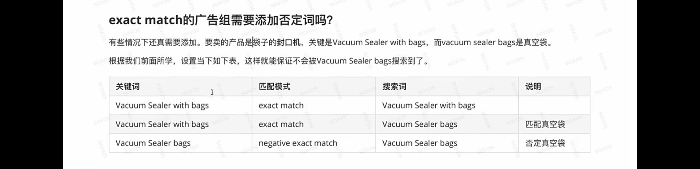
匹配模式和排名有关系吗
没有。事实上，这个问题是想问，同样的关键词用不同的匹配模式匹配同样的搜索词，是不是exactmatch的权重更高？
要解答这个问题，首先要明白匹配模式的作用本质是一个中介，将用户的搜索和我们的产品关联起来。也就是匹配模式在原则上在搜索匹
配的第一步，让被广告产品进入到广告产品的排序序列当中。接下来第2步的作用是将计算ECPM并根据ECPM进行排序。我们明白
ECPMαCTR*bid
CTR=f(a,u,c)
其中，a（ads）代表listing，u（user）代表用户，c（context）代表搜索词，可以看到ECPM只和用户的搜索词和关键词的bid有关，和
匹配模式无关。
未自动发现明确问题；仍建议结合原图和上下文复核。
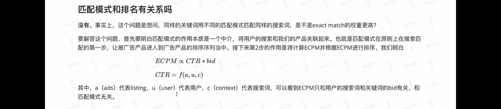
关于SBV
SBV的broadmatch和SP广告有一点不一样。可以在keywords前面添加+，比如portablebluetoothspeaker在SBV中可以写成+portable
障。因此，在SBV中只需要使用广泛匹配即可。
（给单词添加+）的方案毫无优势，故不推荐。
Manualtargetingmatchtypes
meaningofthekeywordandthecontextoftheadvertisedproducts.Thekeyworditselfmaynotbecontainedinthecustomer
shoppingqueriesforyourad.Addabroadmatchmodifierbyaddingaplussymbol"+beforethekeyword.Forexample,ifyou
usethekeyword"+kidsshoes"withabroadmatchmodifier,thentheadwill matchonlythesearchesthatcontaintheword
.Phrasematch:InSponsoredProductscampaigns,thesearchtermmustcontaintheexactphraseorsequenceofwords.1
restrictivethanbroadmatchandwillgenerally
entsforyourad.Phrasematchalsoinclude
都有语义拓展啊enfoayersestosmateradnsear
pluralformofthekeyword.InSponsoredBran
thatincludethemeaningoftheirkeyword.The
beimplied，andcustomersearchescanbe2
"poleforcurtainsforbedroom,"aphrasematchoccurs.
Exactmatch:InSponsoredProductscampaians.thesearchtermmustexactlymatchthekevwordorsequence
SOAOS
adtoshow,andwillalsomatchclosevariationsoftheexactterm.Exactmatchisthemostrestrictivematch
本页未识别到需要单独列出的公式。
未自动发现明确问题；仍建议结合原图和上下文复核。
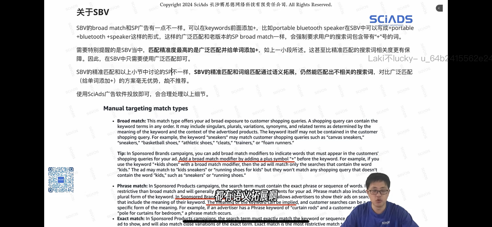
课后问题
上期问题参考答案
Q：你的广告结构和本课介绍的类似吗？如果不同，可以说说你的理由？
可以控制广告花费（因为campaign可以设置预算）。这样做有2个逻辑上的错误。首先，在业务上预算是分配给某个ASIN面否是关键词
YyZKIrEMIOX
的；其次，控制花费的最好方式不是通过预算上限，而是通过bid的设置（我们在免费课中讲过广告不要超预算的道理）。作为补充，运
营朋友应当明白的是，推排名的核心在于为平台的流量找产品，运营只能推广有为自家的产品找到有比较优势的搜索词流量，而不是想当
Q：如果你现在负责一家年销10亿公司的所有广告，你会如何组织团队以及搭建广告结构，为什么？
公司的特点
A：用上一课所讲述的方式，以我的经验，不管有多少产品，原则上只需要不超过2个人就可以完成广告的投放工作。当
了提高生
就是喜欢开会（原因懂的自然懂），因此作为部门的领导，我一定会尽量的多招人，扩充团队。关于扩充团队的主要目
其实在免费课程里面给大家讲过
产力，主要是为了提升我在公司内的地位和
谜续努力，成为大领导叽
SIADE
本页未识别到需要单独列出的公式。
未自动发现明确问题；仍建议结合原图和上下文复核。
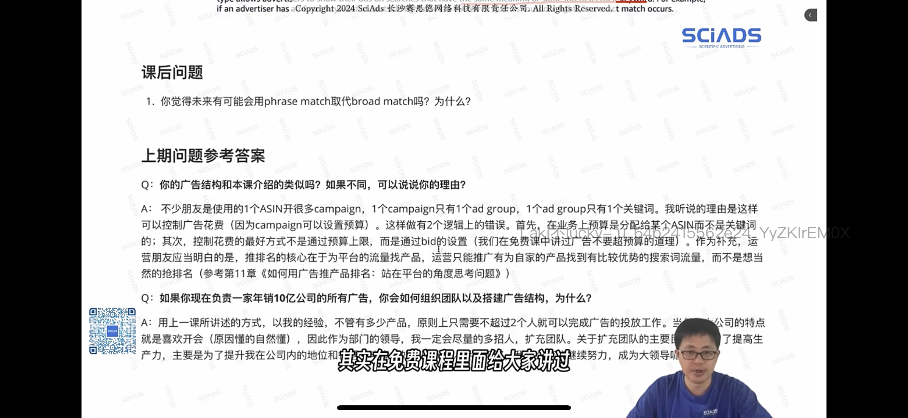
第 19 节
标题来自：sciads课程截图/19/IMG_4251.jpg
都是未知的，设置广告硬上限可以防正意外情况发生
限个人学习，严禁任何形式的录制、传播和账号分享。一经发现，将依法保留追究权，情节严重者将承担法律责任。
后记
本章相比2023年第一次书写进行了非常大范围的删改。把几乎所有的优化推理的部分都移除了（相信能坚持看完的朋友连1%都没有），
而更多的补充了实战的注意事项。作为一门更偏商业实战应用的课程，相信这样的修改对大家更有帮助。
课后问题
u64b2415562e24-YyZKlrEM0
15
上期问题参考答案
Q：你觉得未来有可能会用phrasematch取代broadmatch吗？为什么？
A:如果broadmatch未来匹配更多的语义扩展流量，并且语义扩展的相关度不太高的话，是有可能使用phrasematch萃的。当然，
效果。目
SP广告完全可以借鉴SB广告的broadmatch策略，也就是在单词前添加"+"，这样就可以获得和以前的broadmatch完
前来看、可以绘单词添加+似平是平衡后的是优解
起观察亚马逊未来在广告上的改英吧
本页未识别到需要单独列出的公式。
未自动发现明确问题；仍建议结合原图和上下文复核。
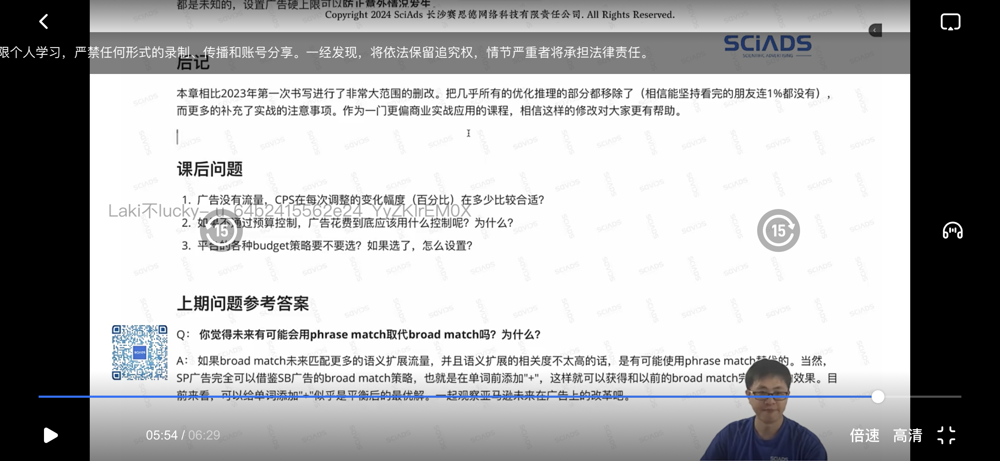
广告投放的核心问题（4）：广告预算怎么设置
本章的内容会和下一章《bid如何设置》相互关联，可以联系起来多看几遍，加深理解。
最佳实践
如果只想了解实操结论，参考本节即可。为了提升阅读友好度。通常，如果广告预算为$100/天，那么预算可以设置成$300/天。
也就是实际预算是为目标预算的3倍即可。
在节日期间（如PrimeDay，黑五），广告预算一般不超过目标预算的2倍。因此此时的预算通常较高，避免极端情况发生。
这样做的原因在于，一般情况下（非节日），在广告投放中消除广告预算的限制。而广告花费的控制，交给CPS这个唯一的抓手。因为在
非节日期间，这是相当可控的。「
注意事项
如下图，在广告后台的账户层级应当做如下的设置。此处通常不为人注意，如果某天广告花费达到预算的2倍，那么一定是下图中误选了
可超预算100%！
本页未识别到需要单独列出的公式。
未自动发现明确问题；仍建议结合原图和上下文复核。
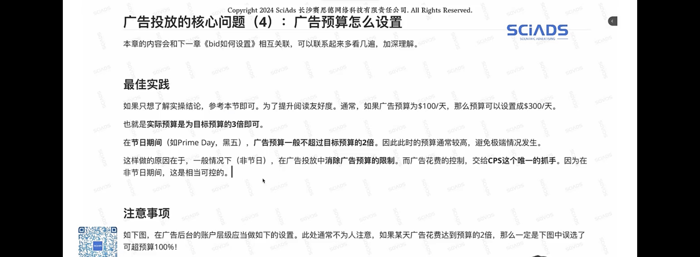
说明
结合第5章我们已经讨论过的GSP拍卖机制的一个重要属性：truthtelling，显然广告投放应当如同促销（deal）一样，提供给平台方真实
的CPS目标。事实上，广告花费应当是由CPS决定的，我们在下一章中将见到CPS目标和花费之间的经验公式。
在实践中，广告设置预算限制，更多的是符合传统的商业合同规范，我们在第6章讲广告后台结构的时候已经介绍过，广告活动
（campaign）就是体现一个广告合同。对于广告投手（运营），简单的说，忘掉预算限制，把cPS作为广告唯一的自变量就好了。
再次强调，广告投放是没有什么玄学的，和促销（deal）都属于（直接）效果广告。最大的区别在于支付方式，促销是CPS付费的，而SP
销。软件完成了选词和出价等广告细节的工作（这些工作类似笔者作为广告投手的工作）。因此，完全可以把大家熟悉的促销的投放原则
应用在SP广告投放中。事实上在投放促销（deal）时，也是没有预算限制的，给定参与促销（deal）的产品数量以及折扣（CPS）就可以
投放了。因此，只需要类比也可以很好的理解本课的结论。
事实上，从实战出发，广告预算的限制真正起作用的是在节日期间（PrimeDay，黑五等），因为平台的流量大小，竞争对手的广告策略
都是未知的，设置广告硬上限可以防止意外情况发生。
本页未识别到需要单独列出的公式。
本页 OCR 置信度较高，暂无待确认段落。
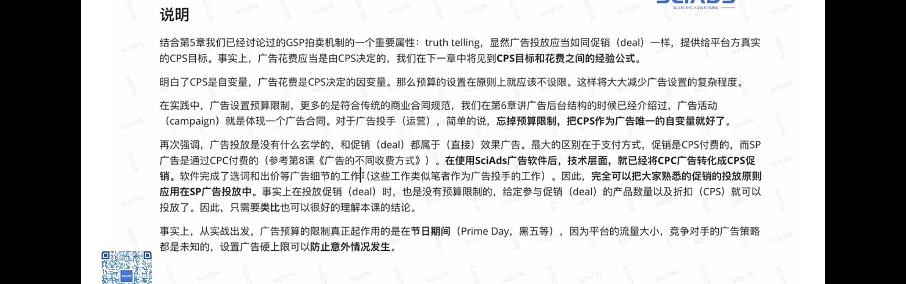
广告预算为$100/天，那么预算可以设置成$300/天
最佳实践
加深理解。
也就是实际预算是为目标预算的
如果只想了解实操结论，参考本节即可。为了提升阅读友好度。通常，女
本页未识别到需要单独列出的公式。
未自动发现明确问题；仍建议结合原图和上下文复核。
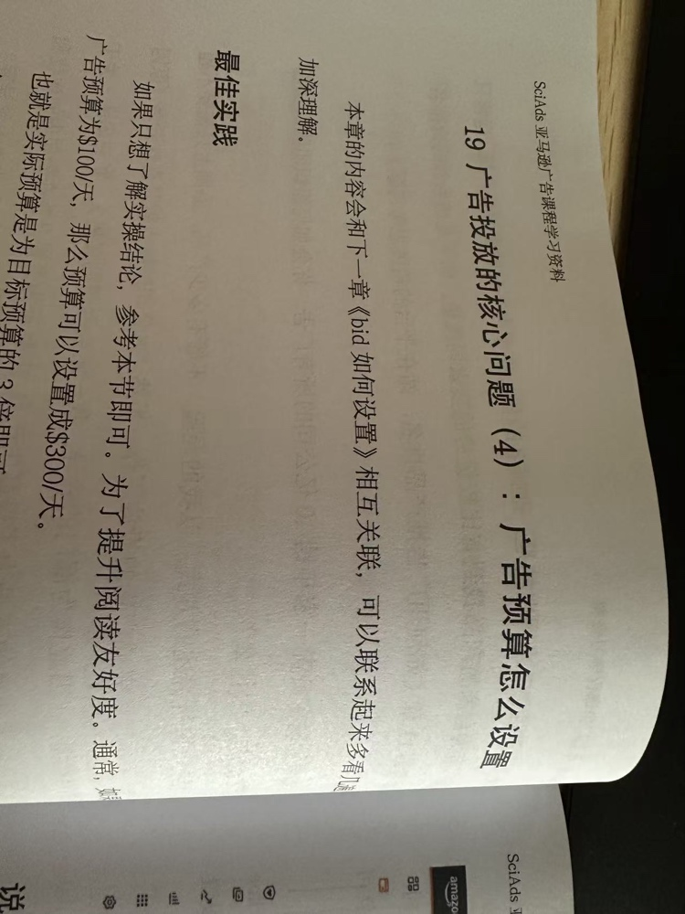
问题解决
意的
变成1个
及我
是未
der是
下，budget应当开一个较高的值（以确保绝对不会超预算），这样限制条件就只
因为
剩下CPSminorder<CPSsku这一项了.
最小
下释
这种情况下如果CPSmin-order<CPSku，广告推广效率和力度无法得到
保证，这时候，通过降低CPSmin.order降低推广强度，控制推广成本、注意
etsku
此时由于我们降低了CPSmin-order中min_order的目标值，广告花费通常不会太
提升
这一项了。
u时，
和流量
最佳实践
本不可
get上
本页未识别到需要单独列出的公式。
未自动发现明确问题；仍建议结合原图和上下文复核。
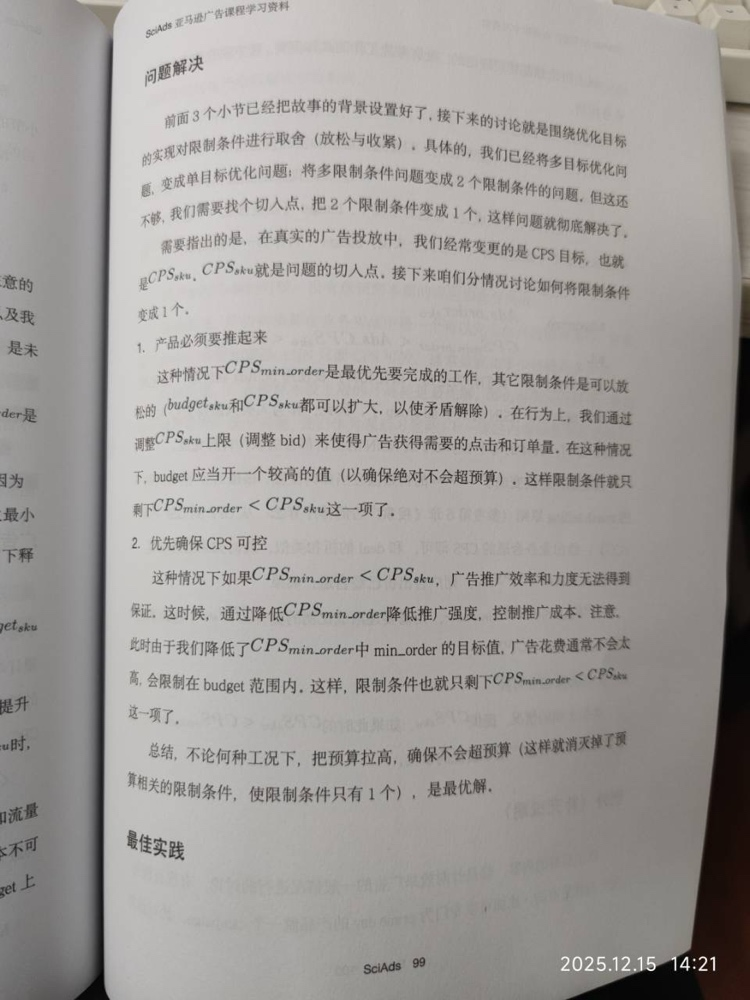
设置，以及背后的原因与取舍。
本章的内容会和下一章相互关联，可以联系起来多看几遍。
广告目标
要超预算？》）
目标转化为限制条件
关于多目标优化问题的解决套路，未来我可能会分享一些优化问题的知识，眼下
如果不能理解的话，只需要按着这个方法来做就好了，这是在学界和工程上已经得到验
方法论
广告目标（标准形式）
参考第10章中关于广告目标的描述，我将最终结论附上
Ads_ordersku
Maximize
Ads_spendingsku<budget sku
s.t.
Ads_ordersku<stocksku
Ads.CPSsku<CPSsku
本页 OCR 置信度较高，暂无待确认段落。
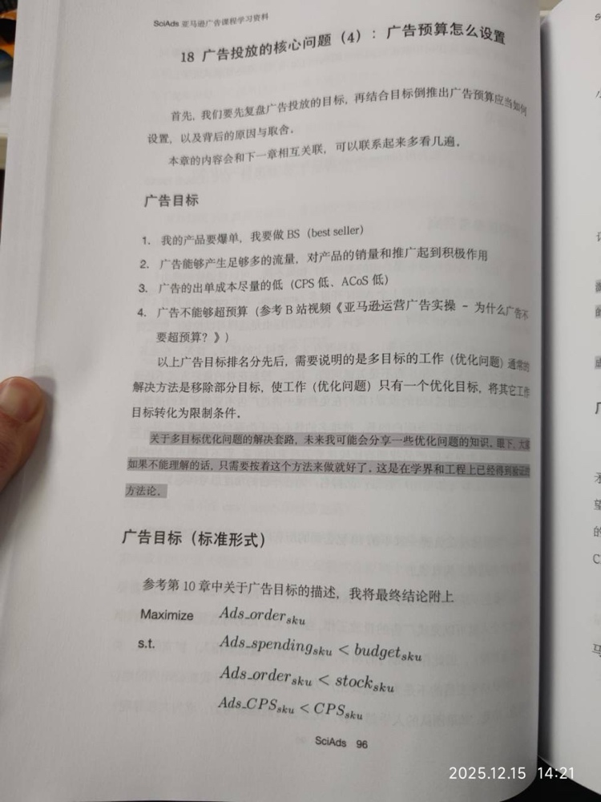
小节的目标转化）。
Adsordersku
Maximize
Ads_spendingsku<budget seu
s.t.
Ads-CPSku<CPSaku
Ads-.orderaku>Min-Ads-orderaku
成了对于限制条件的放松与收紧。
广告优化限制条件中的矛盾
先给出第一个最底层的矛盾，也就是CPSsku和Min_Adsorderaku之间的
矛盾，从业务出发，我们当然希望CPS（ACoS）越低越好。但是我们同时又希
望订单不少于某个阔值，考虑到亚马逊当前的竞争愈发激烈，进而使得可获得好
CPC（CPCviable）成正比（如下式）
CPCviable αCPCviable
CPSviable=
CVR
Maximize
Ads_ordersku
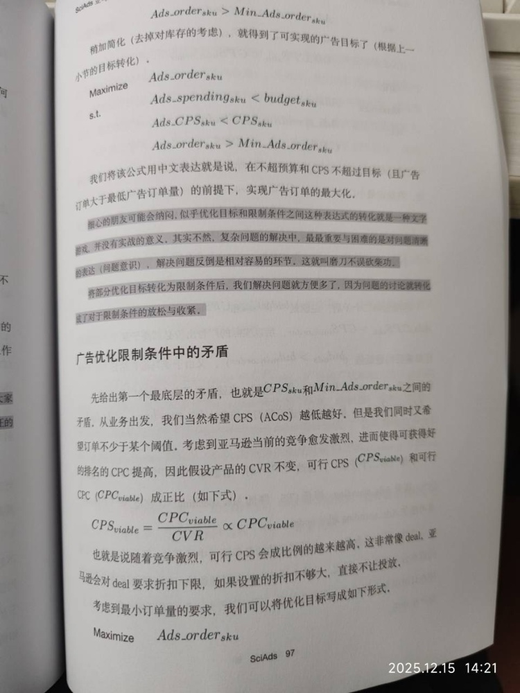
SoAds至马进广告课程学习资料
下一章（《bid怎么设置》）分解。
后记
本页未识别到需要单独列出的公式。
未自动发现明确问题；仍建议结合原图和上下文复核。
业务应用
以通过下式理解实战中的情况
Ads-ordersku
Maximize
CPSmin-order<Ads.CPSsku<CPSaku
s.t.
VCG》）给出业务合适的 CPS 即可，和deal的折扣类似。此时如果已经满足
CPSminorder<CPSsku，则广告出价已经合适.如果
CPSsku<CPSmin-order，则需要逐渐成比例的提升CPSsku，直到满足
CPSmin.order<CPSsku.
类似上面的情况，提供CPSsku，如果此时的CPSsku<CPSminordr，
么就不得不接受推广效率较低的事实.
例外（补充说明）
本页未识别到需要单独列出的公式。
未自动发现明确问题；仍建议结合原图和上下文复核。
第 20 节
标题来自：sciads课程截图/20/IMG_4244.jpg
20｜广告投放的核心问题（5）：bid如何设置
这一课比较轻松一些，因为bid的设置原则非常简单啊！是这样吗？
bid设置的原则
复习一下GSP
假设我们打广告的产品为A，A的下一名为B，那么
CTRA
也就是说bid是CPC的上限。以上公式是介绍平台如何计算CPC。
CPC的公式
CPC=CPS*CVR
以上CPC是说明我们作为广告投手（需求方），如何计算CPC。
总结
以关键词为例，根据CPS和CVR，我们可以计算出每个词的CPC。bid作为CPC的上限，也可以因此得出。其中CPS由运营填写，CVR
由软件或人工预，因此CPC就是已知的了，逻辑闭环完成。
本页 OCR 置信度较高，暂无待确认段落。
bid设置的原则
复习一下GSP
假设我们打广告的产品为A，A的下一名为B，那么
CTRA
也就是说bid是CPC的上限。以上公式是介绍平台如何计算CPC。
CPC的公式
CPC=CPS*CVR
以上CPC是说明我们作为广告投手（需求方），如何计算CPC。
总结
以关键词为例，根据CPS和CVR，我们可以计算出每个词的CPC。bid作为CPC的上限，也可以因此得出。其中CPS由运营填写，CVR
由软件或人工预估，因此CPC就是已知的了，逻辑闭环完成。
本页 OCR 置信度较高，暂无待确认段落。
bid和预算的关系：经验公式
SCUENTIFICADVERTISING
上一节课的第2题中，我们说到广告花费不是通过预算来管理的，而是CPS！
CPS和广告花费的关系是个非常复杂的事情，我们很难建立函数关系。但是我们可以根据工作经验总结一个解作为业务的
管这个叫经验公式。
假定广告花费都在预算范围内，广告CPS和广告花费的变化关系如下。
举个例子，之前的广告花费spendold=$100，CPSold=$10。CPSnew=$8，那么新的广告花费是多少呢？根据经验公式，
spendnew =100*()4~ 41
也就是说CPS目标下降至80%，广告花费降低至约40%。为了方便大家使用，我们做了一个CPS变化和广告花费的对应表格。表格以CPS
为$10，Spend为$100为基础。
Spend
CPS
24
41
66
100
10
和一些经验了
11
207
12
13
本页未识别到需要单独列出的公式。
未自动发现明确问题；仍建议结合原图和上下文复核。
本页 OCR 置信度较高，暂无待确认段落。
12
ZU/
13
286
至于广告花费是CPS变化的4次方的理由如下，当降低CPS时，对应的bid和CPC是等比例变化的，对应的流量变化根据经身
欠方
的变化。比如说CPS从$10变成$8，那么CPC下降至80%，但是流量下降80%的3次方。汇总一下，花费就是80%的4次方
bid设置选项
campaign中有3种bid选项，我到底应该选哪个呢？
答案是选仅降低。
为什么不选降低和提升？
因为bid决定着CPC的上限，而CPC和CPS也就是咱们的广告目标直接相关。因此，bid的上限只能抓在我们手里。事实上，这个问题
背后的本质是博弈。亚马逊的广告团队的主要KPI是提升平台的广告花费，卖家的主要KPI是投入产出比（节省花费）。因此，在工作
目标上，会有根本性的矛盾。卖家将提升bid的权力交给亚马逊广告团队，是非常不理性的。这里说不理性，不是说绝对的bid是多少
的问题，而是提升bid这个行为只能是卖家自己根据CPS目标的变化，自己操作。
为什么仅降低比固定竞价更好？
因为平台能够根据用户的信息计算出CTR和CVR，因此理论上来说平台是可以千人千面的比广告优化师更好的投好广告的。因此，把
降低bid的活交给平台，能够实现三赢（一些我们的产品没有竞争力的流量让给其它卖家，这样我们省广告费，平
金，买者
提升购物体验）
未自动发现明确问题；仍建议结合原图和上下文复核。
答案是选仅降低。
SCENTIFICADVERTISING
为什么不选降低和提升？
因为bid决定着CPC的上限，而CPC和CPS也就是咱们的广告目标直接相关。因此，bid的上限只能抓在我们手里。事多
背后的本质是博弈。亚马逊的广告团队的主要KPI是提升平台的广告花费，卖家的主要KPI是投入产出比（节省花费）
二作
目标上，会有根本性的矛盾。卖家将提升bid的权力交给亚马逊广告团队，是非常不理性的。这里说不理性，不是说绝对的bid是多少
的问题，而是提升bid这个行为只能是卖家自己根据CPS目标的变化，自己操作。
为什么仅降低比固定竞价更好？
提升购物体验）。
成。
事实上，卖家和亚马逊的关系是矛盾统一的，既有合作，也有博弈与竞争。卖家应当充分的利用机会合作，同时避免竞争中吃亏。
人工新增词的bid设置
未自动发现明确问题；仍建议结合原图和上下文复核。
事实上，卖家和亚马逊的关系是矛盾统一的，既有合作，也有博弈与竞争。卖家应当充分的利用机会合作，同时避见竞争
人工新增词的bid设置
是，参考软件生成的所有关键词的平均bid，作为新关键词的bid。
后记
本章的正文确实比较短，因为bid计算的核心工作已经被软件完成了。咱们课程的目标，就是教会大家认识工具，使用工具，拥有更好的
运营管理和广告规划能力。具体实操的事情，都应该让机器完成，我们人只需要给机器发指令，指挥机器干活就可以了。
lakiTlucky-J164b2415562e24_YyZKlrEM0X
另外，我把一些重要的知识放在了课后问题里，希望大家先自己好好思考，等下次课再给大家详细分解。需要说明的是，事实上自前学到
本页未识别到需要单独列出的公式。
未自动发现明确问题；仍建议结合原图和上下文复核。
Q：广告没有流量，CPS在每次调整的变化幅度（百分比）在多少比较合适？
A：步长越长，收敛速度越快，但可能在过程中产生极端情况，比如bid提升（或降低）100%，导致广告花费突然大量提：
以至于超预算（或没有流量）；步长越短，收敛速度越慢，但是过程中的结果是相对平稳可控的，比如bid提升（或降低）
因此，步长的设置没有对错，只有好坏。如果赶时间的，就只能面对广告的不确定性（应对极端情况）；如果想消除广告尚
性，花的时间会稍微少一些。
在实践中，我们通常推荐将步长设置在30%以内，常用的步长为10%或20%。
Q：如果不通过预算控制，广告花费到底应该用什么控制呢？为什么？
A：在本篇正文中已做了解答，参考"bid和预算的关系"vs1
Q：平台的各种budget策略要不要选？如果选了，怎么设置？
A：不要选，不管是一般的效果广告为目标的广告投放，还是节日或ToS为目标的广告投放，都不需要这些选项。
效果广告
咱们已经讨论了，最优解是将预算上限设置得高一些，将对于广告花费和成交成本的调整全部放在CPS的变化上。事实上，这种操作
和deal也非常相似，只不过deal会提前选定参与deal的商品数量（类似于预算）。
节日&ToS
如果不通过预算怎么控制
这种情况下，预算上限是在公司管理
因此用固定预算即可，
SCADS
本页未识别到需要单独列出的公式。
未自动发现明确问题；仍建议结合原图和上下文复核。
本页 OCR 置信度较高，暂无待确认段落。
第 21 节
标题来自：sciads课程截图/21/IMG_4264.PNG
广告位竞价
从原理上说，不同广告位的转化率会有差别，因此根据广告位的不同设置竞价是有必要的。
率影响是一致的。这样的设置，也就和16课《广告结构如何设置》相呼应了。
竞价规则
关于campaign中竞价模式的选择，已经在20章《bid如何设置》中详细说明。结论为选择仅降低。
预算规则
结论有更多的感受，加深理解。
本页未识别到需要单独列出的公式。
未自动发现明确问题；仍建议结合原图和上下文复核。
本页 OCR 置信度较高，暂无待确认段落。
上期问题参考答案
A：请大家回忆，课程将CPC付费的SP广告和CPS付费的促销（deal）进行过多次类比，并认为其本质是一样的。那么促销（deal）没有
流量的原因是什么呢？显然是折扣给的不够。因此，如果要扩大广告的点击量和订单量，就只能提升CPS（bid）。我们在20课的问答中
分享的CPS变化步长仍然有效。通常每步在30%以内，例如当前的CPS为$10，那么提升CPS后一般不超过$13。
P.S.以上讨论，都是假设运营的基本面不变的情况下，当然我们可以提升产品的review和优化listing，这就不是广告的讨论范畴了。
Q：我现在的广告组里有60多个关键词，但是有10几个词几乎没有流量和曝光，我该怎么办？
A：方案同上，如果这10几个词的出价是合理的（所谓合理，就是说根据CPS目标和关键词的CVR给出），那么只能接纳这个结果。
如果因为一些原因这些词的出价低于正确出价，那么调整好再看结果即可。
Laki
这是因为，几乎所有广告平台关于关键词广告的拍卖机制都是GSP（参考第5章），而GSP拍卖机制要求广告主（竞拍人）使用truth
telling的方式告知平台对产品广告订单的价格（CPS）。因此，给定产品的CPS目标，对于不同词的具体的广告表现，只需接受即可。
Q：你说的打法我不太认可，我们公司做爆品的经验就是要抢排名，用ToS的打法
A：运营的艺术在于用尽量少的资源消耗，实现业务目标的最大化。现在产品已经打爆，说明业务目标是完成了的（选品出色，产品具有
爆品潜质），那么我们接下来就把讨论的重心放在如何减少资源消耗。
要把广告和Deal当做是类似的东西
VR。我们再次
我们知道，产品要爆单，就与
（可以参考第11章《如何用广告推产品排名：站在平台的角度思考问题》，第4章《ECPM：坑位和排名的算法》）
ECPMαCTHestumated
本页 OCR 置信度较高，暂无待确认段落。
telling的方式告知平台对产品广告订单的价格（CPS）。因此，给定产品的CPS目标，对于不同词的具体的广告表现，只需接受即可。
Q：你说的打法我不太认可，我们公司做爆品的经验就是要抢排名，用ToS的打法
A：运营的艺术在于用尽量少的资源消耗，实现业务目标的最大化。现在产品已经打爆，说明业务目标是完成了的（选品出色，产品具有
爆品潜质），那么我们接下来就把讨论的重心放在如何减少资源消耗。
我们知道，产品要爆单，就一定要在搜索的排名上靠前，而产品的排名和ECPM直接相关。ECPM正比于CTR和CVR。我们再次将公式写下
（可以参考第11章《如何用广告推产品排名：站在平台的角度思考问题》，第4章《ECPM：坑位和排名的算法》）
ECPMαCTRestinated*CVRestimated*price
使用robustapproximation，以CVRestimated为例（可以参考34课《数据解读&应用（统计学概念讲解2）》），
CV Restimated =EcvR -*VarcVR
>0
其中，EcVR是由listing本身决定的（包括产品、文案、图片、售价等），VarcVR和流量有关，也就是广告能够影响的了。我们知道，
对于某个关键词的转化率来说，抽样量越大，VarcVR越小，进而CVRestimated就越大，排名就越高。那么什么是抽样量呢？对于CVR来
说就是点击量（参考第3章《营销漏斗：认识与区分流量》）。
显然ToS的打法增加了CPC，进而在给定广告花费下，点击量会更少。因此ToS打法一定不是最优解。
根据第5章，我们知道亚马逊的关键词广告的拍卖机制为GSP。而GSP拍卖机制要求广告投手提交产品的真实CPS给平台，并由广告投手预
估各个关键词在不同广告位置（甚至不同时间段）的转化率，进而为自己的广告标的物给出竞价。简而言之，真正正确的处理方
程中一再强调的，以CPS为抓手进行效果广告投放。
既然ToS打法是错的，最后一个问题，那么之前暴单是谁的功劳呢？换句话说，假如用CPS为抓手投广告有100万利润，现在用
80
万利润。那么操作的运营应当为损失的20方机会成本拿到多少提成呢？
应该如何选
这一篇内容比较简单，咱们重在讨论背后的原因。
本篇讨论所使用的广告结构是，某个链接（产品）的关键词（KT）和ASIN（PT）广告分别有一个广告活动（campaign）（参考17课《广
告结构应该如何设置》。
广告位竞价
从原理上说，不同广告位的转化率会有差别，因此根据广告位的不同设置竞价是有必要的。
率影响是一致的。这样的设置，也就和16课《广告结构如何设置》相呼应了。
竞价规则
关于campaign中竞价模式的选择，已经在20章《bid如何设置》中详细说明。结论为选择仅降低。
预算规则
参考19章《预算如何设置》，不推荐使用任何的颈
本页未识别到需要单独列出的公式。
未自动发现明确问题；仍建议结合原图和上下文复核。
本页 OCR 置信度较高，暂无待确认段落。
第 22 节
标题来自：sciads课程截图/22/IMG_4276.PNG
ASIN广告浅析
什么是ASIN广告
告。
有哪些ASIN广告
现在是2023年9月18日，抛开DSP不谈（原因请参见32章），那么SP、SD、SBV都是有ASIN广告类型的。
我们只推荐SP的ASIN广告（SBV不推荐的原因见本文最后一节）。目前软件生成的ExCeI只支持SP广告。
为什么要投ASIN广告
只要保证CPS可控，流量的渠道越多越好（这样做，可以降低流量的边际成本，进而在同等广告销量下，降低CPS）。
和keywords广告关系
以SP中的keywords和ASIN广告来讲，根据我们的实战经验，在绝大多数情况下keywords广告的流量为主，ASIN广告
作为keywords广告的补充。
展现位置
如下图，分别是SP和SBV在详情页的广告样式。SP和SBV也能出现在搜索页。
SimilarbrandsonAmazon
SBV
Sponsered
可以降低每一个渠道的流量压力
E3DD
本页未识别到需要单独列出的公式。
现广告的CPS目标。
其它ASIN广告投放的细节&说明
注意事项
CPS目标是针对ASIN（产品）的，因此即使是不同的广告类型（keywords、ASIN）都共享同一个CPS目标。更往细了
说，原则上每一个keyword或ASIN也共享同一个CPS目标。
投哪种形式：sp、sd、sbv
我们推荐大家投放sp的asin广告。sbv的ASIN类型（相比关键词类型）没有优势（下一节详述）。
至于sd的广告，我们在之前的课程中也谈到了，由于可以在站外展现（营销漏斗上层），有CPM付费（品牌广告特
性），强制修改bid至400%（可控度低）。各种原因使得目前sd广告更合适品牌广告需求。
要不要添加ASIN扩展（sp广告）
不推荐，课程中咱们多次强调广告的可控度是非常重要的考虑因素（而且几乎是不能妥协的，事实上广告优化的本质就
asin="ASIN名称"这样的形式出现（如果是扩展，则为asin-expanded="ASIN名称"）。
由于大家使用软件生成ASIN的广告组（没有通过亚马逊后台，事实上，通过批量操作的界面优化广告，是可以#一替代
传统的广告后台的）。我们也通过后台生成Sp的ASIN广告的截图给大家说明。如下图，默认是会勾选已扩展
议取消已扩展的勾选。
基本上都是共享同一个CPS目标的
商品投放
本页未识别到需要单独列出的公式。
我们推荐大家投放sp的asin广告。sbv的ASIN类型（相比关键词类型）没有优势（下一节详还）。
至于sd的广告，我们在之前的课程中也谈到了，由于可以在站外展现（营销漏斗上层），有CPM付费（品牌广告特
性），强制修改bid至400%（可控度低）。各种原因使得目前sd广告更合适品牌广告需求。
要不要添加ASIN扩展（sp广告）
不推荐，课程中咱们多次强调广告的可控度是非常重要的考虑因素4而且几乎是不能妥协的，事实上正告优化的本质就
asin="ASIN名称"这样的形式出现（如果是扩展，则为asin-expanded="ASIN名称"）。
由于大家使用软件生成ASIN的广告组（没有通过亚马逊后台，事实上，通过批量操作的界面优化广告，是可以基本替代
传统的广告后台的）。我们也通过后台生成sp的ASIN广告的截图给大家说明。如下图，默认是会勾选已扩展的。我们建
议取消已扩展的勾选。
商品投放
品类
单件商品
上传
优选广告商品搜索
输入列表
竞价
建议竞价
在ASIN类型的方案当中
筛选条件
本页未识别到需要单独列出的公式。
延迟
从2024年开始，我们发现亚马逊SP的ASIN（PT）广告在开启后，通常要1-2个自然日才会有展现（impresSion）。因
此，大家在开通ASIN（PT）广告后，如果发现关键词（KT）和自动广告有流量，但是ASIN（PT）没有流量，不需要感
到意外。通常不是设置的错误，只需要等待1-2天即可。
同为ASIN（作为广告标的物）广告，SP和SBV的搜索词完全不一样。SP中的ASIN广告（PT）的搜索词既包含关键词也
包含ASIN。但是SBV的ASIN广告（PT）对应的搜索词只有关键词（而没有ASIN）因此，SBV的ASIN广告（PT）从效
果上来说和关键词（KT）是没有区别的。
ZKIrEMOX
另一方面，SBV的关键词广告（KT）中的广泛匹配可以为单词添加"+"前缀，比SP的关键词广告（KT）有着更优秀的搜
索相关度。因此，SBV的ASIN广告（PT）相比关键词广告（KT）毫无竞争力（因为都只能匹配搜索关键词，但是搜索
后记
这一篇内容比较有限，主要是keywords相关课程已经把广告的核心逻辑梳理得比较清晰了，重复的东西不心
没有SBV的ASIN广告功能
课后问题
本页未识别到需要单独列出的公式。
未自动发现明确问题；仍建议结合原图和上下文复核。
本页 OCR 置信度较高，暂无待确认段落。
ASIN广告的投放技巧
以下广告投放中用到的技术，都是sdads自研的。原则逻辑可以参考15课（怎么找词）和26课（点击率预估）
寻找标的物
ASINVD
出价
计算出所有的ASIN标的物的转化率，然后结合CPS目标给出对应的bid。最终使得ASIN广告如同keywords广告一样，实
现广告的CPS目标。
64b2415562e24YyZKlrEM0X
LakiZlucl
其它ASIN广告投放的细节&说明
注意事项
CPS目标是针对ASIN（产品）的，因此即使是不同的广告类型（keywords、ASIN）都共享同一个CPS目标。
说，原则上每一个keyword或ASIN也共享同一个CPS目标。
?投哪种形式：S、s实际上跟怎么找词和怎么算转化率
下节详述）
我们推荐大家投放sp的asin广告。sbv的AS
本页未识别到需要单独列出的公式。
未自动发现明确问题；仍建议结合原图和上下文复核。
第 23 节
标题来自：sciads课程截图/23/IMG_4335.PNG
否定关键词有哪些
词组否定（negativephrase）
效果如下表，需要强调的是，通常词组否定关键词都是由单个单词组成的，这样的管理成本最低且效果最好。词组否定能保证搜索词
中不得出现对应的单词。
Laki不搜索词Ky-u_64b2415562e24说明yZKlrEM0X
关键词
匹配模式
negative phrase
gasgenerator
否定包含gas的搜索词
gas
negative phrase
gas
portablegasgenerator
fuel portable generator
fuel
negative phrase
否定包含fuel的搜索词
精准否定（negativeexact）
精准否定已在17章《用什么匹配模式》详细讨论（特别注意，精准否定是不包含介词匹配的，因此带有介词和不带有的形式都要否
定），整理如下表
说明
关键词
匹配模式
搜索词
negative exact
gasgenerator
gasgenerator
generators gas
无法否定generatorforgas
generatorgas
negativeexact
generatorforgas
generatorforgas
negative exact
fuelgenerator
可以否定复数
negative
但不能包含介词
哪里可以添加否定关键词
本页未识别到需要单独列出的公式。
未自动发现明确问题；仍建议结合原图和上下文复核。
本页 OCR 置信度较高，暂无待确认段落。
关键词
二凯快式
gasgenerator
negativeexact
gasgenerator
无法否定generatorforgas
negativeexact
generatorgas
generatorsgas
generatorforgas
generatorforgas
negativeexact
可以否定复数ki不lucky-u_64b2415562e24_YyZKlrE
fuelgenerator
fuel generators
negativeexact
哪里可以添加否定关键词
广告活动（campaign)
在ASIN（PT）类型的广告中，否定关键词以词组否定的匹配方式放入广告活动层级。因为自2024年初，亚马逊的ASIN（PT）类型广
告可以匹配关键词。又因为ASIN（PT）类型的广告组是无法添加否定关键词的。这也体现在了17课《广告结构应该如何设置》中。
广告组(adgroup)
对于关键词广告，我们建议将否定词添加至对应广告组，提升管理效率。除此以外，为了对广泛匹配广告组和精准匹配广告组做流量
知悉这个需求即可。
推荐。
但是至少我们没有看到
为什么要添加否定关键词1：屏蔽不相关流量
否定关键词本质上是为了排除关键词能
量呢？因为匹配模式
本页未识别到需要单独列出的公式。
未自动发现明确问题；仍建议结合原图和上下文复核。
推荐。
为什么要添加否定关键词1：屏蔽不相关流量
否定关键词本质上是为了排除关键词能匹配到不相关流量。那为什么关键词能匹配不相关流量呢？因为匹配模式，特别是广泛匹配。
我们重点看看generator这个词的搜索结果（因为generator是流量大词）
：//www.Amazon.com/s?k=generator&crid=229xOM8JXPVD&sprefix=gene%2Caps%2C815&ref=nb_sb_noss_2
AceupEnergy1,ooowGas-PoweredGenerator,PortableGeneratorCampingUltralight,EPA&CARBCompliant
★★★★53
ACEUP
$14999
FREE delivery Fri, Aug 11
PulsarG1200SG1,200wCarryingHandleGas-PoweredPortableGenerator,1200w,Black/Gray
★★★1,346
Save6%
vpki不lucky-U_64b2415562e24_YyZKlrEM0X
$16999
Lowest price in30 days
FREE delivery Fri, Aug 11
Small Business
MARBERO88WhPortablePowerStation24ooomAhCampingSolarGenerator(SolarPanelNotIncluded)LithiumBattery
Power110V/8OWAC,DC,USBQC3.0,LEDFlashlightforCPAPHomeCampingEmergencyBackup
★★★★☆3.344
他们普遍是一些什么样的搜索词
FREE delivery FriAug 11
Or fastest delivery Tue,Aug 8
More Buying Choices
本页未识别到需要单独列出的公式。
未自动发现明确问题；仍建议结合原图和上下文复核。
但是generator又是一个流量大
词，也不应该否定掉。
组否定关键词来完成的。
为什么要添加否定关键词2：流量切分，单独出价
除了屏蔽不相关流量的作用以外，否定关键词还可以对需要获得的流量进行不同匹配模式的出价。这里主要就是针对某些流量大词，需要
同时存在精准匹配和广泛匹配的出价。
态下，同样的关键词广泛匹配的转化率是高于精准匹配的转化率的。
CV Rbroad_match >= CV Rezact _match
价。s0
还记得第17章《广告结构应该如何设置》中，我们提到了，通常新品先使用广泛匹配（broadmatch）的广告组，数据累积后再开精准匹
配（exactmatch）的广告组，背景原因也是如此，截图如下：
什么时候用exact广告组
我们可以看到，E500是没有exact匹配的广告组的。通常在广告数据量足够多之后，我们就有了为流量大的搜索词（流量大词）精准
出价的需求，这只能通过exact匹配才能完成。
人工主要是搞定词组否定啊
记(broad
流量切分使用的道具是精准否定（
组中的所有关键词都在厂
match）广告组中精准否定（negativeexact）即可。
件投放的标的物能匹配的
最后，需要在ASIN（PT）类型广告中添加不
本页未识别到需要单独列出的公式。
未自动发现明确问题；仍建议结合原图和上下文复核。
.精准否定（negativeexact）对
小结下，因为不同匹配模式，
定。
怎么找否定词
新广告（没有历史数据）
此时，主要工作是找寻词组否定（negativephrase）关键词，这一部分的工作主要由人工完成（理论上机器可以辅助，从实战上来
说人工完成的难度并不太大，特别是对某个类目经验丰富的团队和运营）。比如在做Jackery的这款移动充电站（portablepower
station）时，我（作为优化师）会将gas，fuel，quiet等关键词添加为词组否定。
根据我们团队的经验，新广告添加词组否定关键词这一步，目前还是人类做得最好，而且在可见的一段时间内，机器也不太容易超过
人。
老广告（有历史数据）
记得对于同一ASIN所在的广告计划（campaign）中，所有在精准匹配广告组中出现的关键词都需要在广泛匹配广告组中精准否定，
使得流量得到切分。
更多案例
主要工作是词组否定啊
以下案例，主要分享如何在新品期（没有历史数据下）人工找否定关键词。
蓝牙耳塞
本页未识别到需要单独列出的公式。
未自动发现明确问题；仍建议结合原图和上下文复核。
本页 OCR 置信度较高，暂无待确认段落。
为什么要添加否定关键词2：流量切分，单独出价
同时存在精准匹配和广泛匹配的出价。1
态下，同样的关键词广泛匹配的转化率是高于精准匹配的转化率的。
CV Roroad_match>= CV Rexact _match
又因为是流量大词，精准匹配所对应的流量较大，因此当然有动机（CVR不同）且有需要（流量较大）单独为流量大词的精准匹配单独出
价。
还记得第17章《广告结构应该如何设置》中，我们提到了，通常新品先使用广泛匹配（broadmatch）的广告组，数据累积后再开精准匹
配（exactmatch）的广告组，背景原因也是如此，截图如下：
什么时候用exact广告组
我们可以看到，E500是没有exact匹配的广告组的。通常在广告数据量足够多之后，我们就有了为流量大的搜索词（流量大词）精准
出价的需求，这只能通过exact匹配才能完成。
流量切分使用的道具是精准否定（negativeexact)s，具体的，将精准匹配（exactmatch）广告组中的所有关键词都在广泛匹配（broad
match）广告组中精准否定（negativeexact）即可。
最后，需要在ASIN（PT）类型广告中添加否定关键词的原因也是类似的。我们需要对广告投放的标的物能匹配的搜索词（ASIN）提升可
控度。并对不同广告结构之间能匹配的搜索词做尽可能的隔离。使得不同广告结构之间的优化调整，彼此互不影响（解耦）
小结下，因为不同匹配模式下的相同关键词但是不同广告组之间键词，应当使用精准否定（neg
kact）对
中精准否
流量进行切分，单独控制出价。这也是为什么在17章中，我们提出，一个广告组只投一种匹配模式，并且将在广泛匹配的
定。sCIA
未自动发现明确问题；仍建议结合原图和上下文复核。
课后问题
上期问题参考答案
Q：根据你的说法，似乎你们投放的ASIN标的物都是竞品。为什么你们不添加一些互补品作为广告标的物？
补品的效果通常是没有投竞品的效果好的。
在某些较特别的情况下，如果有投放互补品的需求（比如你是做打印机配件的，以打印机作为ASIN广告标的物），可以人工手动完成，也
可以购买广告代投服务。软件解决大部分的问题，一些极度细致的处理和特殊情况（和产品也有关系），需要特别处理的。还是需要人掌
握方法和规律，手动完成（辅助机器）。人工新增的ASIN的bid，可以参考软件方案的bid的平均数（类似人工新增关键词的bid设置）。
互补品的投放，在广告结构中由自动广告来完成。
Q：我用工具生成的ASIN广告方案中，ASIN的数量似乎不是很多啊。不是说会找到尽可能多的相关竞品吗？
s软件生成
A：首先，请确保在生成方案时填写了所有搜索词（共3个）。填写尽可能多的相关搜索词能提升软件的查找效果；其次，
的方案中对于ASIN标的物的查找和您的ASIN本身的竞争力，所在的类目等多个因素相关。因此不排除有效竞品ASIN数量
艮的客观
情况。
本页未识别到需要单独列出的公式。
未自动发现明确问题；仍建议结合原图和上下文复核。
第 24 节
标题来自：sciads课程截图/24/IMG_4326.jpg
这是一个被问得最多的问题，所以单独拿一章给大家讲讲。在沟通过程中，有学员反馈课程大量零散的知识点，为什么不直接教怎么做？
原因是这样的，工作有很多种，不同种类的工作方法和学习方式也有不同。比如拧螺丝这样的工作，只要教怎么做，一般不出一个下午就
更长，作为老师，最应该传授的是工作的原则，而习得工作能力，就需要个人的实践了。
广告投放作为一门手艺，最好的学习方法就是师徒制（这也是自古有之的，大名鼎鼎的米开朗基罗也是从学徒开始的），由师傅手把手教
手艺（有广告陪跑的服务完成）。咱们的课程，重点是把操作的原则和理论给大家分析明白。让大家在宏观上，对这个行业有个了解。
事实上，对于电商运营来说，广告只是众多工作中的一部分，因此本能的不那么重视，或者只当一个副业能力去学习是可以理解的。但是
事实上，广告也是一个专门的手艺和岗位（比如百度、google、facebook等，在招聘网站上都有大量对应的岗位需求），这个客观事实
也是不能忽视的。
总结，要做好广告，没想得那么简单。想要学好，也只能学习知识点，并且大量实践，做到对知识的融会贯通。
本页未识别到需要单独列出的公式。
未自动发现明确问题；仍建议结合原图和上下文复核。
广告为什么要优化？
广告优化的原因（动机）来自广告投放（方案）需要和业务需求以及市场环境不断再匹配和适应。
的。因此传统的品牌广告的优化主要是业务需求驱动，而效果广告的优化既来自业务需求的变化，也来自数据驱动。具体的，CPS变化是
业务驱动，广告数据积累是数据驱动。
以SP广告为例，既然是效果广告，我们又知道拍卖机制为GSP（参考第5章），那么作为广告投手，只需要根据truthtelling的原则如实提
供CPS目标给广告平台即可。对于关键词广告，重要的问题只有2个：
如何找词
本文其它小节详述，主要是数据驱动的。
如何出价
我们知道，bidkeywordαCPStisting*CVRkeyword。那么关键词的出价显然和产品（listing）的CPS以及该关键词的cVR正相关。
其中CPS是由运营根据业务需求自定义的。而CVR是通过数据驱动计算的。因此，不论是CPS变动，还是数据有足够的累积后，都
Laki
TIc
广告为什么可以优化?
因为在线的以效果广告为目标的广告，是可以通过数据驱动进行广告优化的。理论上，有效数据越多，优化的上限越高。背后的数学原理
就是咱们34课中的统计课，其中核心就是大数定律。原则上，只要独立同分布的数据足够充足，我们总是能通过平均点击率和平均转化率
去逼近（预估）理论（期望）点击率和理论（期望）转化率。
因此，这里的核心就是独立同分步的数据的积累要充足。那么多少数据才算充足呢？这没有一个定数（也就是没有客观标准），根据我们
的工作经验，对于某个ASIN来说，如果预算不低于$50/天，一般一个月的数据积累是足够的。
广告优化些什么
有了前面的背景说明，广告优化的具体对象就很清晰了：
新增关键词
通过不断的拓展关键词，可以提升广告的优化上限，尽量做到为不同的词出不同的价。一般来说，新增关键词主要就是拓展长尾词，
24_YyZKlrEMOX
并为长尾词给出一个更有竞争力的出价（以保证不遗漏有效流量）。
否定关键词
如上一章所述，不论是词组否定（negativephrase）还是精准否定（negativeexact），都能够有效屏蔽掉不
同。提升广
告ROI
出价（bid）调整
第一、新增关键词拓词
如上一小节所述，根据数据驱动，我们能更好的计算产品在各个词的转化率，进而为每个关键词给出
综上，广告优化通过对词，否定词和出价的调整，使得流量的精度得以提升，广告ROI提升。
本页未识别到需要单独列出的公式。
未自动发现明确问题；仍建议结合原图和上下文复核。
本页 OCR 置信度较高，暂无待确认段落。
如上一小节所述，根据数
更合理的出价（bid）
综上，广告优化通过对词，否定词和出价的调整，使得流量的精度得以提升，广告ROI提升。
广告如何优化
根据以上讨论，我们已经明确了广告优化的原因分别是CPS变化，广告历史数据驱动。考虑bidkeywordαCPStisting*CVRkeyuord。
CPS变化
根据以上公式，单纯的CPS变化只需要等比例的对应修改该产品（listing）下的所有广告标的物（关键词、ASIN等）的竞价（bid）即
可。具体操作方法如下图（进入广告组中，全选所有关键词或ASIN）。自动广告也需要根据CPS变化进行竞价（bid）调整。单纯的
保存
86行已选定：
ak19下lucky-u_64b2415562e2%
MK
提高竞价 ($)
提高竞价 (%)
建议竞价
有效
关键词
将竞价设置为($)
平日
降低竞价 ($)
总计：
应用全部
降低竞价(%)
出预算
$1.35
第一、如果是只是单纯的CPS变化的话
应用
未自动发现明确问题；仍建议结合原图和上下文复核。
（周期）不低于14天（2周）。在广告效果较稳定后，推荐30天优化一次即可。以上的点击量和优化间隔需要同时满足时，才推荐使
CVR变化（人工微调）
。重点关键词1
人工可以对重点关键词中广告表现和CPS目标差距较大的进行调整；
也可以对广告位中和CPS目标差距较大的进行调整。
。否定词
4_YyZKIrEMOX
人工检查搜索词报告，对于不相关的词进行否定。否定词方面，上一章又更详细的说明。
总之，人工微调的关键是抓重点。人工微调是很个性化的，对广告投手的数据分析能力，以及广告知识的掌握都有要求。
一些特殊情况
给大家重点说过了
广告优化根据目的不同，分为2种情况。咱们一
广告设置有误
未自动发现明确问题；仍建议结合原图和上下文复核。
一些特殊情况
广告优化根据背景不同，分为2种情况。咱们一一讨论。
广告设置有误
。背景
广告超预算或花不出去钱，这属于广告目标有瑕疵，需要及时调整。
迅速做调整，通常间隔为1天以内
等比例调整广告组所有关键词竞价。对于超预算的情况，建议预算上限设置得高些（参考第19章《广告预算怎么设置》）
特殊事件
○背景
节日、促销活动，销售计划变化
迅速做调整，通常间隔为1天以内1
一天以内
根据目标调整预算或等比列调整广告组所有关键词竞价
本页未识别到需要单独列出的公式。
未自动发现明确问题；仍建议结合原图和上下文复核。
效果稳定的广告还需要持续优化吗？
需要，广告需要不断优化。为什么广告需要不断优化呢？因为竞争环境在不断的变化（价格，折扣，对手操作，淡旺季等），使用最新的
数据对广告方案进行调整，与时俱进总是对的。
名词解释
Q：为什么新品广告的否定关键词（词组否定）查找，人比机器更容易做好？
A：参考15寸的背包的例子，我们人类是知道不需要否定11，12，13，14等尺寸，但是需要否定16，17，18等尺寸的。因为大包可以装
小电脑，但是小包装不了大电脑（一定会退货）。而这种常识性的东西（人类认为很容易的）却是机器学习中最难的部分。或者说，机器
擅长的部分正好和人类擅长的不重叠。这样，正好取长补短。
Q：对于本课案例中的移动充电站，我是不是可以直接不投generator这个关键词，这样更省事？
言。我们说
A：不投generator，意味着放弃了一个重要的流量渠道。这是错的，在广告优化中能定量表达的东西，尽量不要月
generator这个词表现不好，用定量的语言就是说这个词的CVR比较低。那么，在CPS不变的情况下，这个词的bid1
可以了。原则
上，没有不好的词，只有不合适的就是为什么新品广告否定词查找
未自动发现明确问题；仍建议结合原图和上下文复核。
第 26 节
标题来自：sciads课程截图/26/IMG_4347.PNG
分时调价的迷思：到底要不要用分时调价
分时调价这个问题本来应该放在实战篇的，放在进阶篇是因为要彻底谈清楚，还需要一些他山之石。
分时调价的由来
我2014年的时候在百度的代理公司工作，当时百度就提供分时广告的展现功能。如下图，可以按时间选择不同时间段是否投放广告，以
及如果投放出价的按比例修改。
工具中心
搜索推广
推广管理
推广报告
推广
便捷管理
计划
设置
账户
返田
设备
时段
地域
推广时投
自理义
另存力模板
应用到其他计划
已换放
推荐
未投放
显期一
市场空闻（检索量）
建议时段
竞争力
星期二
星期三22:00-23:00
150
星期三
星期日11:00-12:00
140
星期四
星期四08:00-09:00
119
星五
星期六
星期日21:00-22:00
117
星期日
星期二18:00-19:00
116
161718192021222324
其实2014年的时候
注：下表中每行是一个出价系数相网的達续时投，修改出价系数可能会带来部分时换的合并与拆分，但您不会丢失任何数据。
本页未识别到需要单独列出的公式。
未自动发现明确问题；仍建议结合原图和上下文复核。
注：下表中每行是一个出价系数相同的莲续时投，修改出价系数可能会带来部分时院的合并与拆分，但您不会丢失任何数据。
无独有偶，google以有类似的服务，如下图：
Remarketing
Campaign
Interactions
Targeting
Device
Location
Ad
64b2415562e24_YyZKlrEM0X
scheduling
(call
method
listsfor
type
adjustments)
search ads
(Search
Network)
Search
Network
Campaign
Display
Network
Campaign
Shopping
Campaign
Display
Video
Campaign
YouTube
Campaign
我们再看这有个叫adscheduling
也就是说，在10年前，百度和google等搜索引擎广告就已经在广告后台（campaign层级）提供分时展现和分时调价的功能
本页未识别到需要单独列出的公式。
未自动发现明确问题；仍建议结合原图和上下文复核。
ampaigi
Shopping
Campaign
Display
Video
Campaign
YouTube
Campaign
也就是说，在10年前，百度和google等搜索引擎广告就已经在广告后台（campaign层级）提供分时展现和分时调价的功能。
为什么要分时调价？
其实分时调价，以及分时展现的本质是转化率在不同的时间段不相同。根据如下公式
CPC=CPS*CVR
我们知道如果不同时间段的CVR不同，那么对应的CPC和bid就应当不同。所以，分时调价的动能来自CVR变动。需要强调的是，CVR在此
处不是说的后台看到的CVR，而是CVR的期望（请大家参考加餐《统计学概念讲解2》）。为了能够预估出CVR的期望，通常需要平台能够
提供按小时的点击量和订单量，并且数据累积必须足够（这样才能满足大数定律），通常需要较长时间的数据积累。
小结，分时调价是在时间的维度上对关键词进行bid调整。分时调价的前提是平台能够稳定的提供按小时的点击和订单数据。
分时调价这个事情呢
CVR计算的奥秘
我们知道转化率可以通过如下公式计算，
order
CVR
未自动发现明确问题；仍建议结合原图和上下文复核。
万时啊价时动能木日
那公对应时
处不是说的后台看到的CVR，而是CVR的期望（请大家参考加餐《统计学概念讲解2》）。为了能够预估出CVR的期望，
提供按小时的点击量和订单量，并且数据累积必须足够（这样才能满足大数定律），通常需要较长时间的数据积累。
小结，分时调价是在时间的维度上对关键词进行bid调整。分时调价的前提是平台能够稳定的提供按小时的点击和订单数据。
CVR计算的奥秘
我们知道转化率可以通过如下公式计算，
order
CVR=
click
但是，魔鬼在细节中，大家可能不会想到order和click的定义可是有很多名堂存在的。
Click
首先click的定义并不一定是真实的点击量，请大家回忆咱们在第9章《广告反作弊的前世今生：我多换几个IP，点点对手的广告》中讲
过的广告反作弊，根据反作弊的力度不同，最严格的click定义就是当天的独立访客（uniguevisitor，UV）并且排除一些流量黑名单。最
松的click定义就几乎不太使用反作弊。总之，click的多少是比较灵活的。
会员专享
开及工具
智能工具箱
Q查找命令、搜索模板
总展示展示量无效展示无效展示率
状态
总点击量
无效点击
点击量
无效的点击率
ENABLED
1575913200
2559
44
1521212721
ENABLED
2491
45
38
ENABLED
19604
2335
17269
45
49
22381
ENABLED
2526
19855
45
41
41
17023
ENABLED
20498
3475
47
ENABLED
4887
3639
1248
19
18
32
30
ENABLED
3002
1858215580
首先我们在第九章的时候学过一个
TL.ED
46
38
2425021086
3164
49
2816322990
5173
53
4570
10620536
43
45
3818
21277
32
36
未自动发现明确问题；仍建议结合原图和上下文复核。
45
49
22381
ENABLED
19855
2526
45
ENABLED
20498
17023
3475
47
ENABLED
3639
19
4887
1248
3002
32
ENABLED
15580
18582
3584
38
ABLED
20916
17332
46
3007
BLED
19051
16044
41
2427
20728
18301
46
2425021086
3164
49
2816322990
5173
53
4570
20536
06
45
3818
21277
37
3016
15047
00
3036
315
3406
4741
34
030
36
Order
order的计算名堂就更多了，以搜索引l擎广告为例，通常的定义是点击后当即下单的就算一个order。但是电商的广告订单定义就很多
了，以亚马逊为例，默认的SP广告有7天归因（也就是7天内有人点了广告，今天买了你家产品的也算广告订单），而SB和SD和DSP都有
14天归因。除此之外，根据亚马逊后台的默认定义，order不只包括打广告的sku，而是包括这个店铺内的所有sku，都算订单。这也是为
小结，我们在这里以最粗暴的方式讲解了CVR计算过程中的一些坑。大家在工作中要特别留意，特别是面对不同平台的广告投放时。这也
是为什么像百度和google等搜索引擎广告，更容易提供分时调价功能。1
分时调价面对的挑战
按小时提供的定义明确的点击和订单数据
理论上是可以自定义订单的。笔者在和某上市公司合作时，就采用了自定义订单的方式核算广告效果。
数据稀薄（不充足）
广告的点击对应着广告花费、平均到
CGHV1V
14天归因。除此之外，根据亚马逊后台的默认定义，order不只包括打广告的sku，而是包括这个店铺内的所有sku，都算江单
什么Anker的广告通常ACoS比对手低（因为Anker的店铺太大了，跨品类互购，以及3C类目不同sku的购买是很容易的）
小结，我们在这里以最粗暴的方式讲解了CVR计算过程中的一些坑。大家在工作中要特别留意，特别是面对不同平台的广告投放时。这也
是为什么像百度和google等搜索引擎广告，更容易提供分时调价功能。
分时调价面对的挑战
●按小时提供的定义明确的点击和订单数据
首先是按小时提供，其次是定义明确。最理想的状态是允许广告需求方自定义订单（的定义）。如果大家使用的是亚马逊的API，在
理论上是可以自定义订单的。笔者在和某上市公司合作时，就采用了自定义订单的方式核算广告效果。
数据稀薄（不充足）
广告的点击对应着广告花费，平均到每天的点击是比较有限的。如果平均到每个小时的点击就更有限了，因此更难以满足大数定律对
于数据的要求。
亚马逊能分时调价吗？
好消息
咱们在上一章《为什么是人辅助机器投广告》中介绍了从去年开始，亚马逊就提供了Amazonmarketingstream功能，如下团队
对接，理论上可以拿到按小时汇总的广告点击和广告订单数据。因此，至少在理论上亚马逊广告有了分时调价的可能。
这个很难解决好
坏消息
。首先，能够使用Amazonmarketingstream的卖家数据有限，并且对于广告流量的累积也有要求
。其次，亚马逊的广告订单的定义在归因上容易产生一些不稳定
首先是按小时提供，其次是定义明确。最理想的状态是允许广告需求方自定义订单（的定义）。如果大家使用的是
理论上是可以自定义订单的。笔者在和某上市公司合作时，就采用了自定义订单的方式核算广告效果。
数据稀薄（不充足）
广告的点击对应着广告花费，平均到每天的点击是比较有限的。如果平均到每个小时的点击就更有限了，因此更难以满足大数定律对
于数据的要求。
亚马逊能分时调价吗？
好消息
咱们在上一章《为什么是人辅助机器投广告》中介绍了从去年开始，亚马逊就提供了Amazonmarketingstream功能，如果有IT团队
坏消息
。其次，亚马逊的广告订单的定义在归因上容易产生一些不稳定
期待
。亚马逊可以像google和百度一样，提供后台（campaign层级）的广告分时调价功能
我们在上一章的时候其实讲过有
总结
最优解，还是亚马逊能够提供按小时的汇总的session数据，并提供官方的分时调价功能。这里特别需要注意的是时区，
，涵盖了好几个时区。
本页未识别到需要单独列出的公式。
未自动发现明确问题；仍建议结合原图和上下文复核。
亚马逊能分时调价吗？
好消息
咱们在上一章《为什么是人辅助机器投广告》中介绍了从去年开始，亚马逊就提供了Amazonmarketingstream功能，如果有IT团队
对接，理论上可以拿到按小时汇总的广告点击和广告订单数据。因此，至少在理论上亚马逊广告有了分时调价的可能。
坏消息
。首先，能够使用Amazonmarketingstream的卖家数据有限，并且对于广告流量的累积也有要求
。其次，亚马逊的广告订单的定义在归因上容易产生一些不稳定
期待
。亚马逊可以像google和百度一样，提供后台（campaign层级）的广告分时调价功能
总结
最优解，还是亚马逊能够提供按小时的汇总的session数据，并提供官方的分时调价功能。这里特别需要注意的是时区，因为美国国土广
裹，涵盖了好几个时区。
在当下，如果一定要使用分时调价，理论上需要借助Amazonmarketingstrea@的广告数据这个使用门相对是非常高的6对于使用_YyZKlrEMOX
者的运营、广告、IT都有较高要求）。
好像百度是2013年好像就有这个功能了
本页未识别到需要单独列出的公式。
未自动发现明确问题；仍建议结合原图和上下文复核。
本页 OCR 置信度较高，暂无待确认段落。
第 27 节
标题来自：sciads课程截图/27/IMG_4360.PNG
卖家手里的是产品。
咱们引用11章的结论，接下来的讨论限定在充分竞争的市场中（非蓝海），平台的每一次搜索都对应着成百上千个相关的ASIN账台需M
要通过ECPM对这些相关的ASIN进行排序。在原则上，只有点击和转化最好的产品因为坑产更高，能排在首页。坑产定量的说，就是
ECPM。作为卖家要提升ECPM的唯一方法就是提升CTR和CVR。
注意，这里说的CTR和CVR，是指的平台的模型中对产品的CTR和CVR的预估。并不是亚马逊店铺后台的CTR和CVR，具体请参考第11章。
以CTR为例，对于某个具体的搜索词，根据robustapproximation原则，CTRestimatea可以认为是CTR的期望和方差的加权
CTRestimated =ECTR-*VarCTR
>0
需要说明的是，这里的EcTR是排除掉了广告位影响的，期望点击率。因为是期望，那就只和listing本身的竞争力相关，根据题设价格不
变，纯白帽原则下，根据大数定律，随着运营的展开，CTR会收敛于ECTR。这就是为什么选品为王的理论本质，因为长期来看，产品对
于某些词的竞争力，是由产品本身决定的。
的，开发出针对不同用户需求的产品，就能够在用户的不同搜索词（表达用户需求）中都有对应的点击和转化较好的产品和同行竞争。而
不是用相对没有竞争力的产品强推排名。
比如用户搜索outdoorbluetoothspeaker，而我们的产品没有便携性和防水能力优势不大，主要卖点是音质。那么无论怎么运营，都很难在这个词
上获得好的排名和表现。最好的办法是先开发一款户外蓝牙音箱适配用户需求，再运营满足用户需求。
随着运营的展开
运营推广
限的站外deal）。
未自动发现明确问题；仍建议结合原图和上下文复核。
运营推广
我们接下来的讨论中不涉及物流和库存的各种复杂问题，单纯说如何推产品。并且假设推广资源有限（只有站内deal+站内广告，以及有
限的站外deal）。
根据以上题设，和我们在第2章《品牌广告还是效果广告》中的说明，当前运营能够使用的所有推广手段，都是效果广告。也就是提升资
金周转率，降低单次周转利润率。从财务的视角看，运营推广的根本任务在于对资金周转率和周次周转利润率的平衡。
dea1和站内的cPc付费的广告，本质都是效果广告。从财务的角度，都是等价的。
（listing），以及每个listing的营销预算如何分配给各个不同推广渠道。这就需要有一个统一的度量衡来评估各个渠道的效果。CPS就是
这个度量衡。不论是以上哪个渠道，谁的CPS更低能出单，我们就优先把预算分到哪个渠道（deal也好，站内广告也罢）。
最后，就是实操了，根据CPS我们进行deal和广告的投放。1
CPSVS排名
排名是目的吗？
在这里，有朋友会提出质疑。因为根据CPS来投放，除非把CPS提高到非常高的位置，否则根本就抢不到排名。事实上，这是本末倒置，
从财务（宏观）的角度来说，打广告是为了增加资金周转，具体到运营（微观）的角度来说，打广告是为了提升亚马逊对于li的
ECPM预估。在价格不变的情况下，也就是提升亚马逊对于咱们listing的CTRestimated和CVRestimated。我们已经知道，在
的情
的正
况下运营能够改变的是方差Varestiamte不涉及物流和库存等复杂问题啊的订单。而预算是有限的，
确打法就是在给定预算限制下尽量的多出单。只有这样，平台才会把更多已出单流量分配给listing。因为也只有这样，亚
(ECPM）才能最大化。
反之，贸然的把一些不出单（CTR和CVR没有比较优势）
的位直会有如下问题：
未自动发现明确问题；仍建议结合原图和上下文复核。
本页 OCR 置信度较高，暂无待确认段落。
CPSVS排名
排名是目的吗？
在这里，有朋友会提出质疑。因为根据CPS来投放，除非把CPS提高到非常高的位置，否则根本就抢不到排名。事实上，这是本未倒置，
从财务（宏观）的角度来说，打广告是为了增加资金周转，具体到运营（微观）的角度来说，打广告是为了提升亚马逊对于listing的
ECPM预估。在价格不变的情况下，也就是提升亚马逊对于咱们listing的CTRestimated和CVRestimated。我们已经知道，在产品确定的情
况下运营能够改变的是方差Varestiamted，而改变CTR就需要有效的点击，改变CVR就需要有效的订单。而预算是有限的，因此广告的正
(ECPM）才能最大化。
反之，贸然的把一些不出单（CTR和CVR没有比较优势）的词强行推在广告搜索靠前的位置会有如下问题：
CTRF-名
如公式所述，因为产品在相关度（CTR）上不占有优势，因此强行推排名会导致CPC陡增。
如上所述，强推会降低亚马逊的坑产，并且从长期看CTRestimated会收敛于EcTR（也就是只和产品相关）。如果产品对某个搜索词
没有适配性，是无论如何也不可能用正常手段推起来的。
至于排
小结，广告的目的就是以较少的花费，为listing出更多自然单。为了达到这个目的，就需要在有限的广告预算下出更多的
名，从来就不是目的。
CPS和排名之间的关系啊
为什么江湖中都流行抢排名？
因为排名是最符合直觉，最容易理解的。就像人类不会飞行时，认为飞行一定是需要有鸟类的翅膀。直到人类了解
有了燃油发动机，人类才能制作飞机实现真正的飞行。但是空气动力学和燃油发动机和飞行并没有直觉上的联系
未自动发现明确问题；仍建议结合原图和上下文复核。
如上所述，强推会降低亚马逊的坑产，并且从长期看CTRestimated会收敛于EcTR（也就是只和产品相关）。如果产品ii同S
没有适配性，是无论如何也不可能用正常手段推起来的。
名，从来就不是目的。
因为排名是最符合直觉，最容易理解的。就像人类不会飞行时，认为飞行一定是需要有鸟类的翅膀。直到人类了解和掌握了空气动力学，
有了燃油发动机，人类才能制作飞机实现真正的飞行。但是空气动力学和燃油发动机和飞行并没有直觉上的联系。
并且，抢排名有个非常致命的逻辑漏洞，就是成本。无论是什么打法，都一定要在给定花费下实现ROI的最大化。不可以只看到好处，而
选择性的忽略成本与代价。
我们学习的自的就是希望能突破直觉和一般工作经验的限制，用更加理性，更加全面的态度和视角去认识业务问题。
小结
键词排名中目标只有一个，就是在给定预算范围内尽量多产生广告订单。
产品各有特色，针对的用户人群和需求也不太相同。
能够能够非常精确把握的目标
未自动发现明确问题；仍建议结合原图和上下文复核。
第 29 节
标题来自：sciads课程截图/29/IMG_4378.jpg
上期问题参考答案
Q：广告有权重吗？
A：影响广告排名的因素至少有100个（也这是为什么说∈R，y>=100），而x作为向量拥有的这100个向量元素是什么，以及对应
的权重w（weight）都是未知的。总之影响排名的因素众多，从算法实现的角度来说，并没有一个叫权重的实数变量单独的影响模型。从
应用的角度看，也没有充足的证据证明到底哪个参数对于广告排名的影响最重要。最后，我们在上一课学到的是w是在线运算，快速更新
的，是一个变量。因此，以静态的眼光研究向量w中某个向量元素w的值，也没有多少意义。
Q：同一个SKU使用同一个关键词（相同出价和匹配模式）在不同campaign和adgroup下表现不一样。那么是因为老campaign或者老
adgroup有权重吗？为什么？
A:根据我们学习的模型，campaign和adgroup就算作为模型输入x的一部分，对应的模型参数w中的权重值一定很小。根据我们的工作经
验，主观认为小到可以忽略不计。因此，如果老campaign（或adgroup）和新campaign（或adgroup）有不同，也很可能是因为
我们知道，亚马逊的广告效果有7天的归因，因此新开的广告会相对低估广告的表现，有时條低估会达到20%甚至更多5因此6包以24_YyZKlrEMM0X
等待新的广告效果稳定即可。
有老的campaign比新的campaign表现的好的，我们的工作中也有新campaign比老campaign表现的好。特别是在时间较短的范围
内，业务表现有随机性是完全正常的（参考大数定律）。
本页未识别到需要单独列出的公式。
未自动发现明确问题；仍建议结合原图和上下文复核。
本页 OCR 置信度较高，暂无待确认段落。
Q：烧某个大词，是提升产品流量和排名的最好方法吗？为什么？
A:我们已经知道了排名主要受ECPM影响，ECPM的自变量是CTR、CVR、Price。那么假设Price不变，CTR和CVR正相关变化。因此我们
只需要通过研究CTR的自变量就可以得知排名的变化情况了。
可以从2个角度来切入这个问题。
我们已经知道CTR受到超过100个影响因子的影响，其中权重最高的因子和烧某个大词的流量相关性不大。因此，从平台的算法公式
才有可能获得更多的评论、历史销量也才能冲上来。
产品有竞争力的词，那最终也不过是浪费的广告费。
问题背景：以下故事来自真实聊天。我和某卖家朋发沟通。他自前的产品在小类自排第2，上架约1年，评分4.4星。竞争对手产品作为
上架约2年半，评分3.9星（具体评论数此处不表，大家只需知道这个小类目流量很大，头部竞争就是刺刀见红）。他了解到BSR的近
的转化率约为3.5%，而他的转化率有4.7%。并且，明确的信息是我朋友的产品的产品力相比竞争对手BS的产品是有优势的。
未自动发现明确问题；仍建议结合原图和上下文复核。
本页 OCR 置信度较高，暂无待确认段落。
我们已经知道CTR受到超过100个影响因子的影响，其中权重最高的因子和烧某个大词的流量相关性不大。因此，
来看，烧词的办法不是最优解。那么CTR的自变量中和广告相关最大的就是销量。只有在给定广告预算下尽量的多出单SC告单)ADVERTISING
才有可能获得更多的评论、历史销量也才能冲上来。
量推给ECPM最高的产品，近似的可以认为平台的算法会把流量推给最有竞争力（CTR和CVR最高）的产品。如果所谓的大词并不是该
产品有竞争力的词，那最终也不过是浪费的广告费。
问题背景：以下故事来自真实聊天。我和某卖家朋发沟通。他自前的产品在小类自排第2，上架约1年，评分4.4星。竞争对手产品作为BS
上架约2年半，评分3.9星（具体评论数此处不表，大家只需知道这个小类自流量很大，头部竞争就是刺刀见红）。他了解到BSR的近半年
的转化率约为3.5%，而他的转化率有4.7%。并且，明确的信息是我朋友的产品的产品力相比竞争对手BS的产品是有优势的。
Q：为什么我的这位朋友的产品还不是BS（参考ECPM计算公式）？
A：因为ECPM的自变量是CTR、CVR、Price。还是老规矩，假设price不变，CTR和CVR正相关。因此，我们将注意力集中在CTR的自变量
的研究上。我们知道，CTR的自变量是向量c∈R"，y>100。其中，权重最大的变量包含评论数、库存、上架时间、历史销量。显然，
竞争对手的BS产品在这3项数据上都有比较优势。在当前的Amazon的算法参数w下，竞争对手的BS产品仍然会获得更多的流量和更好的
排名。
Q：是否再经历一段时间后（比如半年），我的这位朋友的产品能成为BS（假设运营端没有变化，比如价格和其它影响）？为什么？
A：有较大可能经历半年后，朋友能成为BS。因为影响CTR的评论数、库存、上架时间历史销量等因子都会更接近竞争对手BS产品。而
产品本身的评论星级、详情页停留时间的优势就能转化为排名和流量上的胜势。
未自动发现明确问题；仍建议结合原图和上下文复核。
本页 OCR 置信度较高，暂无待确认段落。
问题背景：以下故事来自真实聊天。我和某卖家朋友沟通。他目前的产品在小类目排第2，上架约1年，评分4.4星。
的转化率约为3.5%，而他的转化率有4.7%。并且，明确的信息是我朋友的产品的产品力相比竞争对手BS的产品是有优势的。
Q：为什么我的这位朋友的产品还不是BS（参考ECPM计算公式）？
A：因为ECPM的自变量是CTR、CVR、Brice还是老规矩_假设priCe不变2CTR和CyR正相关2此，我们将注意力集中在CTR的自变量
的研究上。我们知道，CTR的自变量是向量c∈R"，y>100。其中，权重最大的变量包含评论数、库存、上架时间、历史销量。显然，
竞争对手的BS产品在这3项数据上都有比较优势。在当前的Amazon的算法参数w下，竞争对手的BS产品仍然会获得更多的流量和更好的
排名。
Q：是否再经历一段时间后（比如半年），我的这位朋友的产品能成为BS（假设运营端没有变化，比如价格和其它影响）？为什么？
A：有较大可能经历半年后，朋友能成为BS。因为影响CTR的评论数、库存、上架时间、历史销量等因子都会更接近竞争对手BS产品。而
产品本身的评论星级、详情页停留时间的优势就能转化为排名和流量上的胜势。
Q：老的广告结构有权重吗？（这里指的是已经有大量数据积累的campaign和adgroup结构是否有权重）
A：课程中已经回答过，基本可以忽略不计。更为具体的原因，我们会在课程加餐中讲搜索引擎的工作流程时再详谈。
Q：listing优化对于排名有什么影响，为什么？（提示：listing优化，包括文案、图片、视频、Q&A等的优化）
A：listing优化，能改善产品详情页的停留时间、提升产品历史销量和历史点击等间接影响点击率。并通过文案和视觉直接影响点击率。
其中，间接影响的作用是让平台的算法觉得isting的CTR高。直接影响的作用是客观的提升CTR期望。
Q：开广告对listing排名有什么影响？
A：通过广告可以获得流量，包括但不限于展现、点击、订单、页面停留、评论等数据。简而言之，广告和自然流量类似，都可以作为
listing的CTR中的输入向量x
的原料。通过广告获得的订单和评论越多，对于第第题和第五题其实是大为有利的。
Q：断货为什么对产品的排名有很糟糕的影响？为什么不同断货时间越长影响越大？
我们在上一课中说过，产品的库存是CTR的自变量c的重要影响因子（强信号）。如果我是亚马逊的工程师，我进行特征工程的办
未自动发现明确问题；仍建议结合原图和上下文复核。
Q：为什么我的这位朋友的产品还不是BS（参考ECPM计算公式）？
A：因为ECPM的自变量是CTR、CVR、Price。还是老规矩，假设price不变，CTR和CVR正相关。因此，我们将注意力朱在
竞争对手的BS产品在这3项数据上都有比较优势。在当前的Amazon的算法参数w下，竞争对手的BS产品仍然会获得更多的流量和更好的
排名。
A：有较大可能经历半年后，朋友能成为BS。因为影响CTR的评论数、库存、上架时间、历史销量等因子都会更接近竞争对手BS产品。而
产品本身的评论星级、详情页停留时间的优势就能转化为排名和流量上的胜势。
A：课程中已经回答过，基本可以忽略不计。更为具体的原因，我们会在课程加餐中讲搜索引擎的工作流程时再详谈。
Q：listing优化对于排名有什么影响，为什么？（提示：listing优化，包括文案、图片、视频、Q&A等的优化）
其中，间接影响的作用是让平台的算法觉得listing的CTR高。直接影响的作用是客观的提升CTR期望。
Q：开广告对listing排名有什么影响？
A：通过广告可以获得流量，包括但不限于展现、点击、订单、页面停留、评论等数据。简而言之，广告和自然流量类似，都可以作为
listing的CTR中的输入向量x
的原料。通过广告获得的订单和评论越多，对于CTR自然是有益的，因此对ECPM和排名流量也是大为有利的。
Q：断货为什么对产品的排名有很糟糕的影响？为什么不同断货时间越长影响越大？
我们在上一课中说过，产品的库存是CTR的自变量c的重要影响因子（强信号）。如果我是亚马逊的工程师，我进行特征工程的办法大约
是这样。首先用one-hot方法判断是否存在过库存为0的情况（存在为1，不存在为0）。然后如果存在库存为0的情况，再根据库存为
时间用one-hot方法分为4类，轻微（<3天），中度（<7天），重度（<15天），超重度（>=15天）。这样就通过一个10维的向量描
断货的情况，并将该向量融入模型的自变量2中。
未自动发现明确问题；仍建议结合原图和上下文复核。
本页 OCR 置信度较高，暂无待确认段落。
的研究上。我们知道，CTR的自变量是向量∈R，y>100。其中，权重最大的变量包含评论数、库存、上架时
特量显
竞争对手的BS产品在这3项数据上都有比较优势。在当前的Amazon的算法参数w下，竞争对手的BS产品仍然会获得更多
排名。
Q：是否再经历一段时间后（比如半年），我的这位朋友的产品能成为BS（假设运营端没有变化，比如价格和其它影响）？为什么？
A：有较大可能经历半年后，朋友能成为BS。因为影响CTR的评论数、库存、上架时间、历史销量等因子都会更接近竞争对手BS产品。而
产品本身的评论星级C详情页停留时间的优势就能转化为排名和流量上的胜势KIrEMOX
Q：老的广告结构有权重吗？（这里指的是已经有大量数据积累的campaign和adgroup结构是否有权重）
A：课程中已经回答过，基本可以忽略不计。更为具体的原因，我们会在课程加餐中讲搜索引擎的工作流程时再详谈。
Q：listing优化对于排名有什么影响，为什么？（提示：listing优化，包括文案、图片、视频、Q&A等的优化）
A：listing优化，能改善产品详情页的停留时间、提升产品历史销量和历史点击等间接影响点击率。并通过文案和视觉直接影响点击率。
其中，间接影响的作用是让平台的算法觉得listing的CTR高。直接影响的作用是客观的提升CTR期望。
Q：开广告对listing排名有什么影响？
A：通过广告可以获得流量，包括但不限于展现、点击、订单、页面停留、评论等数据。简而言之，广告和自然流量类似，都可以作为
listing的CTR中的输入向量x
的原料。通过广告获得的订单和评论越多，对于CTR自然是有神益的，因此对ECPM和排名流量也是大为有利的。
Q：断货为什么对产品的排名有很糟糕的影响？为什么断货时间越长影响越大？
我们在上一课中说过，产品的库存是CTR的自变量c的重要影响因子（强信号）。如果我是亚马逊的工程师，我进行特征工程的办法大约
时间用one-hot方法分为4类，轻微（<3天），中度（<7天），重度（<15天），超重度（>=15天）。这样就通过一个10维的向量描述出
未自动发现明确问题；仍建议结合原图和上下文复核。
第 30 节
标题来自：sciads课程截图/30/IMG_4384.PNG
广告打法分产品类目吗
首先，从抽象的（宏观的）角度看，如果是效果广告，那么优化目标都是一样的。也就是在给定预算下，实现广告订单的最大化。
不论在广告结构还是广告关键词的出价上，都可以直接沿用我们在实战课中说的广告结构以及出价方法。那么有没有例外呢？当然是有
的，虽然本课的篇幅不长，但是作为进阶内容，会为实战中的一些例外情况打补丁（做补充说明）。
多变体的情况
在前面的课程中，我们已经介绍了一个campaign对应一个（子）ASIN，那么如果我是有多个变体的情况，我到底选哪个子ASIN进行。
以下图为例，永远都选择最主流（流量多、转化高），最便宜的（流量多，转化高）。
AnkerSoundcore2PortableBluetoothSpeakerwith12w
StereoSound,Bluetooth5,Bassup,IPx7Waterproof,24
HourPlaytime,WirelessStereoPairing,SpeakerforHome,
Outdoors,Travel
Visit theAnkerStore
110,067ratings|1000+answeredquestions
for"anker soundcore2"
Amazon's Choice
ANKER
$3999
广告的那个结构当中的一些特例
Apply$8couponShopitems>
Coupon:
Terms
Geta$50GiftCard:Pay$0.00$39.99uponapprovalforAmazonVisa
CotOr.btaCk
本页未识别到需要单独列出的公式。
未自动发现明确问题；仍建议结合原图和上下文复核。
$25.99
$25.99
ConnectorType
USBTypeC
Brand
Anker
Battery Capacity
10000MilliampHours
Color
Black
FastCharging,PortableCharger
SpecialFeature
总之，多变体的广告投放，也需要保持一个ASIN对应一个campaign，我们的工作经验是只选一个子ASIN进行投放。筛选的原则是
流量
款式需要主流，以获得更多流量
转化
通常主要款式的价格相比其它款式更便宜，以增加转化和ECPM
那么除了主流款式，其它款式的产品怎么推呢？非常简单，就是“沾光”。因为主打款式有很多流量，那么点进来的买家有可能会选你的其
它变体。事实上，在采购层面也是对不同产品做了区分的。主打产品的采购量是一定大于其它产品的（参考28原则）。
多变体&多尺寸
415562e24_YyZKlrEM0X
这里咱们特指鞋类和服装类2个大类目。这2个类目不但因颜色和花形不同，变体超级多，同时也因为尺寸不同有超级多的子ASIN、这种
广告如何处理呢？
接多
了一个数量级。
VisittheAUTOMETStore
本页未识别到需要单独列出的公式。
未自动发现明确问题；仍建议结合原图和上下文复核。
多变体&多尺寸
这里咱们特指鞋类和服装类2个大类目。这2个类目不但因颜色和花形不同，变体超级多，同时也因为尺寸不同有超级多的子ASIN。这种
广告如何处理呢？
如下图，服装和鞋的SKU（ASIN）多，主要体现在即使是同一个款式，除了不同颜色以外，还有不同尺码。这样SKU（ASIN）数量直接多
了一个数量级。
VisittheAUTOMETStore
AUToMETPufferVestWomenSleeveless
WinterCroppedOuterwearWarmPuffer
LightweightStand-upCollarDownwith
Pockets
880ratings
#1BestSeller
inWomen'sOuterwearVests
Price:$34.99-$39.99
FreeReturnsonsomesizesandcolors
Fit:Asexpected
Color:Black
最复杂情况就是多变体加多尺寸的
Size:
Select
本页未识别到需要单独列出的公式。
未自动发现明确问题；仍建议结合原图和上下文复核。
本页 OCR 置信度较高，暂无待确认段落。
Small
yester
Medium
sure
X-Large
Vash
实战中，需要根据用户搜索词情况分别讨论。
●用户搜索词集中在尺寸
寸为购买的决定因素。定量的来说，不同尺寸拥有不同的CTR和CVR。因此，对于相同尺寸不同款式的产品可以当作一个子ASIN来进行广
告投放（可认为款式对CTR和CVR影响很小）。
u_64b2415562e24_YyZKIr对同个父ASIN下，先选出最主流尺寸的子ASIN们。1
根据需求，当有推广非主销尺寸产品的需求时，就可以单独为其开campaign进行投放。因为非主销尺寸的CTR和CVR会与主销尺寸
不同，需要单独管理理。
用户搜索词集中在颜色或款式
这种情况下，用户在乎的是颜色或款我们前面说过要做那介搜索词调研的影响购买）。定量：
些款
式的产品拥有更高的CTR和CVR的期望。因此应当作为主推款。而其它款式能满足某些细分人群需求，因此可作为对主推款：
放在
一个父ASIN内进行管理。
在广告上，可以将相同颜色或款式的不同
未自动发现明确问题；仍建议结合原图和上下文复核。
本页 OCR 置信度较高，暂无待确认段落。
和转化情况类似，就可以如此操作
根据需求，当有推广非主销尺寸产品的需求时，就可以单独为其开campaign进行投放。因为非主销尺寸的CTR和CVR会与主销尺寸
不同，需要单独管理理。
用户搜索词集中在颜色或款式
这种情况下，用户在乎的是颜色或款式（购买的决定因素），具体尺寸用户会在选好款式后再挑选（不影响购买）。定量的来说，某些款
式的产品拥有更高的CTR和CVR的期望。因此应当作为主推款。而其它款式能满足某些细分人群需求，因此可作为对主推款的补充，放在
一个父ASIN内进行管理。
在广告上，可以将相同颜色或款式的不同尺寸的产品当作同一个子ASIN推广，也就是在1个campaign中放入多个ASIN（尺寸不同）。
对于同一个父ASIN下，先选出最主流的子ASIN们。这一步和普通的产品没有区别
第2步是解决鞋和服装等多SKU的打法的关键，如果不同尺寸的产品售价和转化情况类似（通常是这样的），就可以如此操作
以上图的ASIN为例，当尺寸是large时，售价为$39.99，因此应当单独放入一个campaign管理。而该颜色（黑色）的其它的尺寸的ASIN
价格都是$34.99，可以当做同一个ASIN理解，放入同一个campaign管理。
P.S.除了价格不一样，对于服装类目，有些特别大或者特别小的尺码转化率也是非常高的。因为受众人群非常精确。这种情况也要为这些
转化特别高的产品单独开campaign处理
Visith同一个款式下它的售价都一样
AUTOMETPufferVestWomenSleeveless
Winter Cropped OuterwearWarmPuffer
未自动发现明确问题；仍建议结合原图和上下文复核。
第 31 节
标题来自：sciads课程截图/31/IMG_4418.PNG
广告打法分新品期吗
这个问题似乎无需回答，大部分人会异口同声的回答，当然分新品期。那么，我们刨根问底的想想，为什么分新品期呢？以及广告的打法
和目的是不是和产品的生命周期相关呢？
以下讨论限定纯白帽玩法。限定效果广告的讨论（不讨论运营基本面、如价格、listing优化等）。假设产品没有季节性影响（方便讨
论）。
产品生命周期
如下图，对于一款成功销售的产品，通常会经历4个生命周期。在不同周期内广告的目标是不太一样的。
用户
营收
是不是和产品的生命周期有关系呢
本页未识别到需要单独列出的公式。
未自动发现明确问题；仍建议结合原图和上下文复核。
本页 OCR 置信度较高，暂无待确认段落。
启动阶段
也就是新品期。在这个阶段，广告投放的主要目的有2个：
通过广告在短期内快速的把流量撑起来，然后测试产品的转化率和预期是否相差不大，如果转化率比预期低很多。那么应当及时止
损。
测产品主要用于深耕某个类目的卖家。有同学可能会提出，前期产品还没有足够的review，运营基本面还不清晰，转化率还没有太多参考价值。从
理论上来说，这种担忧是对的，不过对于深耕某个类目多年的卖家和运营，他们只需要一点点的数据就能够作出判断了。毕竟这个类目，在手上成功
和失败的产品多了，会有一种专家的直觉判断。
新品期冲流量的效果会强于任何阶段。因为对于新品期的产品，平台会通过trafficSplitting等手段，给予流量扶持。而在新品期表现
良好的产品，也更容易获得更多流量扶持。在这个阶段，为了获得更多的流量，CPS目标通常都会制订的比较高。甚至会亏钱买流量
（比如产品的毛利为$5，CPS为$5以上）。我在2016年下半年开始，就已经发现不少类目的广告在新品期不得不在广告上亏钱买流量
（2016年以前的红利时期，几乎没有老板能接受亏钱买广告，很多老板甚至要审批运营的广告需求）。
成长阶段
GA4X
于一个相对
成熟的公司的运营管理者，通过CPS来统一站
悲常有必要的
这个时候CPS也一定要昆较高一些
在成长阶段，产品在上升期，CPS目标仍然会比较高（相比成熟期）。
成熟阶段
本页未识别到需要单独列出的公式。
未自动发现明确问题；仍建议结合原图和上下文复核。
如下图，对于一款成功销售的产品，通常会经历4个生命周期。在不同周期内广告的目标是不太一样的。
用户
营收
时间
启动阶段
成长阶段
成熟阶段
衰落阶段
运营/转化
回流/转型
留存/稳定
痛点/体验
（初创型企业产品）
（成长型企业产品）
（成熟型企业产品）
（衰落型企业产品）
启动阶段
也就是新品期。在这个阶段，广告投放的主要目的有2个：
成长阶段是流量涨的最快的一个阶段
通过广告在短期内快速的把流量撑起来，然后测试产品的转化率和预期是否相差不大，如果转化率比预期低很多
当及时止
损。
本页未识别到需要单独列出的公式。
未自动发现明确问题；仍建议结合原图和上下文复核。
本页 OCR 置信度较高，暂无待确认段落。
成长阶段
如果产品顺利的通过启动阶段，说明产品本身没有问题（当然，也有一些产品销售后隔2-3个月才能回评）。那么接下来的任务就是推
产品。不管是站内还是站外的流量统统都用CPS度量效果。哪个平台的CPS能较低的出单，哪个平台就分配更多的预算。对于一个相对
成熟的公司的运营管理者，通过CPS来统一站内广告、站内deal、站外deal是非常有必要的。
在成长阶段，产品在上升期，CPS目标仍然会比较高（相比成熟期）。
成熟阶段
成熟阶段的产品是否要开广告呢？事实上也有很多的争论。我的经验是分情况看。因为广告在战略层面是一种平衡的艺术，从财务视角
因为类目中不断会有新的产品杀入，那么开启广告做流量上的防御是成熟阶段的常规操作。需要注意的是，因为产品已经成熟，并且
对于广告流量的需求较少，因此CPS目标相比前2个阶段会低不少。
有可能因为各种原因，导致库存过多（有长期仓储费的压力）。因此在某个时间段内对销量有需求，进而开启广告的。此时CPS目标
通常会较高。
衰落阶段
通常不需要开启广告。除非有类似成熟阶段的库存问题。aki不lucky- U_64b2415562e24_YyZKIrEM0X
小定量表达。并不会有什么复杂和歧义。
本页未识别到需要单独列出的公式。
未自动发现明确问题；仍建议结合原图和上下文复核。
本页 OCR 置信度较高，暂无待确认段落。
降价VS广告
这个话题是和群友沟通中谈到的。原则上是一个运营问题。需要运营自己去测试，当然如果对某个类目比较老道的运营，可能会有经验。
我们在此处能够提供的是一种思维方法，供大家参考。
不论是降价和广告，从财务的角度来说都是等价的。具体的，是以牺牲单品利润率为代价，换取产品的销量。既然从定性的角度是等
价的东西，那么就只需要尝试用定量的角度比较各自的投入产出比即可：还是要用到CPS。
广告CPS
方案
降价
销量
广告订单占比
总和CPS
降价
$3
$0
0%
$3
100
广告
100
50%
$0
$8
$4
$2.4
降价+广告
100
20%
$2
$4
如上表，达成同样的100销量的目标，降价$3不开广告的总和CPS就是$3，而开广告不降价的总和CPS为$4。显然，在本例中只降价
的方案优于只开广告。但是，是否有降价和广告的组合能达成更优解呢？这只能实践才能知道。本例中，确实是少量降价+少量广告
的组合胜出了。
一种办法，而
促销的方法非常多。如何选择与组合这些方案涉及到的决策，更像是艺术。但通常来说，不局限于使用某一个
低）。因此，
是将目标拆解到各个渠道中通常都会更优。背后的原因在于，任意渠道的边际效用通常都是递减的（也就是R
将目标销量拆解到不同的促销办法中，让各个渠道的边际效应相应都较高。就可以得到一个整体ROI较高组合
边际效用（marginalutility），对
orders/ads
本页未识别到需要单独列出的公式。
未自动发现明确问题；仍建议结合原图和上下文复核。
不论是降价和广告，从财务的角度来说都是等价的。具体的，是以牺牲单品利润率为代价，换取产品的销量。既然从定性的角度是等
价的东西，那么就只需要尝试用定量的角度比较各自的投入产出比即可：还是要用到CPS。
方案
降价
广告CPS
销量
广告订单占比
总和CPS
降价
$3
$0
0%
E$
100
广告
50%
$4
$0
$8
100
$2.4
降价+广告
$2
$4
20%
100
的方案优于只开广告。但是，是否有降价和广告的组合能达成更优解呢？这只能实践才能知道。本例中，确实是少量降价+少量广告
的组合胜出了。
促销的方法非常多。如何选择与组合这些方案涉及到的决策，更像是艺术。但通常来说，不局限于使用某一个渠道和某一种办法，而
5562e24_YyZKlrEM0X
是将目标拆解到各个渠道中通常都会更优。背后的原因在于，任意渠道的边际效用通常都是递减的（也就是ROI越来越低）。因此，
将目标销量拆解到不同的促销办法中，让各个渠道的边际效应相应都较高。就可以得到一个整体ROI较高组合方案了。
边际效用（marginalutility），对应的是单位投入产出比。在例子中，可以认为是边际效用=orders/ads_spendin
这个我们在这里也是无法直接给大家
本页未识别到需要单独列出的公式。
未自动发现明确问题；仍建议结合原图和上下文复核。
本页 OCR 置信度较高，暂无待确认段落。
第 32 节
标题来自：sciads课程截图/32/IMG_4426.PNG
什么是DSP广告：广告行业的DSP和亚马逊的DSP
工作中有不少卖家咨询DSP的事情。咱们这次就把问题刨根问底的说清楚。
需要说明的是，广告行业的DSP和亚马逊广告系统中的DSP在定义上是有一些不同的。
名词解释
大0表示法：在计算机领域，人们通常用大O表示法表达一个算法的复杂度，比如O(n)。常见的算法复杂度有线性复杂度O（n)，对数复杂
排序和数据库检索中常使用的归并排序，都是线性对数复杂度。
RTB:实时出价（realtimebidding）。就是通过程序化的方式进行对广告流量进行出价。
adexchange:可以认为是在线广告拍卖所。只不过拍卖的参与者都是程序。简称adx
广告需求方：也叫广告主，也就是需要采购广告流量的人或组织（比如卖家）
广告提供方：提供广告流量并收取流量费用的人或组织（比如知名KOL也算广告提供方）
历史背景
第二个问题就是因为我
互联网广告的出现
在2000年之后，互联网蓬勃发展。互联网上的信息越来越丰富，当年的新潮年轻人中不少有了自己的博客，门户网
扑）等也火了起来。最早的门户网站的广告售卖还是使用CPT的方式（类似传统广告），比较著名的就是搜狐和
本页未识别到需要单独列出的公式。
未自动发现明确问题；仍建议结合原图和上下文复核。
本页 OCR 置信度较高，暂无待确认段落。
历史背景
互联网广告的出现
在2000年之后，互联网蓬勃发展。互联网上的信息越来越丰富，当年的新潮年轻人中不少有了自己的博客，门户网页和论坛（天涯、猫
告主）通常也是预算充足的大公司。
搜索广告的崛起
随着google、百度等搜索巨头出现，CPC形式的广告售卖成为了可能。伴随着CPC的付费方法，广告的售卖内容也从网站的黄金流量位扩
展到了长尾流量位。
当年google和百度除了搜索流量外，还有网络联盟的流量。googleadsense和百度网盟。
同时，广告主也愈发多元，除了预算充足的大公司，也包含了大量预算有限的小企业。这样的客观发展过程使得广告主的数量相比互联网
初期多了成百上千倍。
事实上，google和百度等互联网巨头几乎都是广告公司。再具体些，几乎都是做效果广告的公司。相比传统公司，确实也通过技术创新实现了农村包围
城市。即，主要服务的客户都是小公司，但是通过服务大量的小公司，最终实现了对传统广告公司的逆袭。
小结
敬信息
随着搜索广告的出现，广告需求方（广告主）和广告提供方（网站拥有者、博客博主）数量大量增加。如何将广告需求和
上的整合，成为当时广告行业面对的挑战。
未自动发现明确问题；仍建议结合原图和上下文复核。
DSP
什么是DSP
供给方的交互（如果听起来比较蒙，切往下看）
为什么需要DSP
在前面业务背景的介绍中，我们已经谈到广告的需求方（广告主）数量众多，我们假设需求方的数量为n，假设市场中有m个广告提
供方，并且所有广告提供方都被广告主需要。那么总共有m*n次沟通的需求。如下图（n=m=3），则一共需要建立n*m=9次连
接。我们可以想像当市场中有超过10万个广告主，以及10万个广告供给方时，这个沟通成本是不可接受的（10万*10万=100
亿）。
需求方 1
供给方 1
需求方 2
供给方 2
主要是收集并汇总广告需求方的需求
供给方 3
本页未识别到需要单独列出的公式。
未自动发现明确问题；仍建议结合原图和上下文复核。
本页 OCR 置信度较高，暂无待确认段落。
需求
供给方 2
供给方 3
需求方 3
有了DSP之后，需求方就会统一使用DSP作为代理与供给方进行交互。如下图
需求方1
供给方1
需求方2
供给方2
需求方3
供给方3
这样，连接的复杂度就由m*n变为了m+n。此时，假设有10万个广告主和10万个广告供给方，那么需要的总连接数就只有20万个
（远远小于100亿）。
这也就是DSP技术出来的原因。
那么总共就只需要20万个连接就够了
DSP怎么赚钱
中间商赚差价啊。有了DSP，供给方和需求方就互相不认识了。你懂的。
本页未识别到需要单独列出的公式。
未自动发现明确问题；仍建议结合原图和上下文复核。
本页 OCR 置信度较高，暂无待确认段落。
SSP
什么是SSP
SSP（supply sideplatform）是一个柜对于DSP的概念。以SSP作为广告供给方的代理，提升信息沟通的效率。
为什么需要SSP
在上一小节中，我们提供的是一个理想状态下的交互情况。现实中，不可能有某一个DSP能够垄断的链接所有需求方（有反垄断
法）。
如下图，我们再次看到了连接线之间的交叉（这说明可以优化效率，因为交互次数>m+n）。
需求方1
供给方1
需求方2
供给方2
需求方3
供给方
需求方4
供给方4
OSP
它是一个supplysideplatform
供给方5
本页未识别到需要单独列出的公式。
未自动发现明确问题；仍建议结合原图和上下文复核。
需求方4
供给方4
需求方5
供给方5
需求方6
有了SSP，再加上adexchange，交互效率可以再上一层楼，如下图，交互次数为m+n。
需求方1
供给方1
DSP1
SSP1
需求方2
供给方2
需求方3
供给方3
ad exchange
需求方4
供给方4
DSP
需求方5
供给方5
求方6
SSP怎么赚钱
和DSP一样
本页未识别到需要单独列出的公式。
未自动发现明确问题；仍建议结合原图和上下文复核。
和DSP一样
经发现，将依法保留追究权，情
亚马逊的DSP
前面的内容都是开胃菜，正餐现在开始。
不是DSP的DSP
事实上，亚马逊的DSP根本不是传统意义上的DSP（demandsideplatform）。他是一个整合了SSP，adx，DSP的一个综合解决方案。
那为什么叫DSP呢？因为站在卖家的角度，亚马逊提供的广告服务对于卖家（作为广告需求方）是一个DSP。
技术说明
事实上，从完成难度来说，我个人认为亚马逊的DSP广告是亚马逊的广告产品中最复杂的一个。因为需要打通站外和站内的流量。在adX
中需要为各个广告供给方的广告位做好特征工程（广告位、人群等），然后将做好特征工程的广告位打包，以人群（user）、类目
(category）、兴趣（hobby）等分类方法提供给卖家（广告需求方）.投放广告。
Laki7luCky- u_64b2415562e24_YyZKlrEM0X
并且，广告的交易和出价都是由亚马逊自行由RTB技术完成（这也是为什么DSP不为卖家提供出价的设置）。
亚马逊怎么赚钱
因为亚马逊在DSP广告产品中整合了传统定义的DSP、SSD、adX。因此亚马逊一共赚2种钱：
亚马逊整合了供给方的流量（也就是站外流量），做为中间商（批发商），肯定是可以赚差价的。
+精
亚马逊对站外的流量做了特征工程，并且自研了adX进行在线的程序化交易（RTB），这中间涉及到的机器学习与
准广告投放提供了便利。自然也能为亚马逊带来广告收益。
本页未识别到需要单独列出的公式。
事实上，亚马逊的DSP根本不是传统意义上的DSP（demandsideplatform）。他是一个整合了SSP，adx，DSP的一个综合解决方案
技术说明
事实上，从完成难度来说，我个人认为亚马逊的DSP广告是亚马逊的广告产品中最复杂的一个。因为需要打通站外和站内的流量。在adX
中需要为各个广告供给方的广告位做好特征工程（广告位、人群等），然后将做好特征工程的广告位打包，以人群（user）、类目
（category）、兴趣（hobby）等分类方法提供给卖家（广告需求方）投放广告。
并且，广告的交易和出价都是由亚马逊自行由RTB技术完成（这也是为什么DSP不为卖家提供出价的设置）。
亚马逊怎么赚钱
因为亚马逊在DSP广告产品中整合了传统定义的DSP、SSP、adX。因此亚马逊一共赚2种钱：
u_64b2415562e24_YyZKlrEM0X
T.流量
亚马逊整合了供给方的流量（也就是站外流量），做为中间商（批发商），肯定是可以赚差价的。
亚马逊对站外的流量做了特征工程，并且自研了adX进行在线的程序化交易（RTB），这中间涉及到的机器学习与计算也为广告主精
准广告投放提供了便利。自然也能为亚马逊带来广告收益。
亚马逊为什么能做出DSP产品
因为亚马逊作为全球知名的电商平台，也是需要对外采购流量的。事实上，在2017年以前入场的卖家不少都享受了流量红利。那么什么
A等硬件
是流量红利呢？简单的说，就是免费（白）的流量。亚马逊作为上市公司，在很长一段时间财务上都是亏损的，抛开
成本投放，有不少的钱就花在了买流量上。从本质上说，当年美国的股民在补贴国内的卖家。我了解的情况，在2017年
不少卖
家连sp广告都没有开过，照样卖得很好?所以说呢亚鸟逊一共赚两种钱
如下图，亚马逊在google上采购流量
本页未识别到需要单独列出的公式。
未自动发现明确问题；仍建议结合原图和上下文复核。
因为亚马逊作为全球知名的电商平台，也是需要对外采购流量的。事实上，在2017年以前入场的卖家不少都享受了流量红利那么什么
SM
是流量红利呢？简单的说，就是免费（白）的流量。亚马逊作为上市公司，在很长一段时间财务上都是亏损的，
反权声明）
成本投放，有不少的钱就花在了买流量上。从本质上说，当年美国的股民在补贴国内的卖家。我了解的情况，在2
家连sp广告都没有开过，照样卖得很好。
如下图，亚马逊在google上采购流量
portable charger
Sponsored
Amazon.com
https://www.Amazon.com)shop>deals：
PowerBankPortableBatteryCharger-OrderTodayAtAmazon
WeOffer anExtensiveSelectionOf CellPhoneAccessoriesAtAmazon.OrderToday!Enjoy
GreatDealsandDiscountsOnanArrayOfProductsFromVariousBrands.
★★★★RatingforAmazon.com:4.5-2,693reviews-Returnpolicy:Mostitems30+days
AmazonPrimeBenefits·Accessories·Cases&Holsters·CellPhones·CellPhoneDeals
亚马逊除了在google等大平台采购流量以外，也会直接对接流量提供方，经过多年的资源整合，就完成了自己的SSP部分。再和自己的
DSP和adX结合，终于有了目前的DSP广告产品。
目标广告主
这个大家知道就好了
这个在咱们的课里已经说明过了，DSP是按CPMI
本页未识别到需要单独列出的公式。
未自动发现明确问题；仍建议结合原图和上下文复核。
| 章节 | 截图 | 问题 |
|---|---|---|
| 4 | sciads课程截图/4/IMG_4553.jpg | 低置信行：1 |
| 5 | sciads课程截图/5/IMG_4567.PNG | 低置信行：SCADS |
| 5 | sciads课程截图/5/IMG_4568.PNG | 低置信行：·前提 |
| 5 | sciads课程截图/5/IMG_4568.PNG | 低置信行：SCRDS |
| 5 | sciads课程截图/5/IMG_4569.PNG | 低置信行：SOADS |
| 5 | sciads课程截图/5/IMG_4570.PNG | 低置信行：图，以A为例，他口 |
| 5 | sciads课程截图/5/IMG_4570.PNG | 低置信行：SCADS |
| 5 | sciads课程截图/5/IMG_4580.PNG | 低置信行：SOLDS |
| 5 | sciads课程截图/5/IMG_4581.PNG | 低置信行：（天金） |
| 5 | sciads课程截图/5/IMG_4581.PNG | 低置信行：1 |
| 5 | sciads课程截图/5/IMG_4581.PNG | 低置信行：SCADS |
| 5 | sciads课程截图/5/IMG_4582.PNG | 低置信行：0.050-30 |
| 5 | sciads课程截图/5/IMG_4582.PNG | 低置信行：SCADS |
| 15 | sciads课程截图/15/IMG_4147.jpg | 低置信行：·考核标准 |
| 15 | sciads课程截图/15/IMG_4147.jpg | 低置信行：0优化目标 |
| 15 | sciads课程截图/15/IMG_4147.jpg | 低置信行：o限制条件 |
| 15 | sciads课程截图/15/IMG_4148.PNG | 低置信行：vCPM付费 |
| 15 | sciads课程截图/15/IMG_4149.PNG | 低置信行：oSBV |
| 15 | sciads课程截图/15/IMG_4149.PNG | 低置信行：·预算 |
| 16 | sciads课程截图/16/IMG_4156.PNG | 低置信行：的双肩包，新品中大于15的数字，如16h石-18必须歪家因为双肩包需要放卑脑客户如果买了咱们的 |
| 17 | sciads课程截图/17/IMG_4161.PNG | 低置信行：口 |
| 17 | sciads课程截图/17/IMG_4161.PNG | 低置信行：rEMOX |
| 17 | sciads课程截图/17/IMG_4162.PNG | 低置信行：口 |
| 17 | sciads课程截图/17/IMG_4163.PNG | 低置信行：口 |
| 17 | sciads课程截图/17/IMG_4164.PNG | 低置信行：Adioup的命名不同于 Campdign |
| 17 | sciads课程截图/17/IMG_4166.PNG | 低置信行：口 |
| 17 | sciads课程截图/17/IMG_4167.PNG | 低置信行：口 |
| 17 | sciads课程截图/17/IMG_4167.PNG | 低置信行：盲 |
| 17 | sciads课程截图/17/IMG_4167.PNG | 低置信行：1.2 |
| 18 | sciads课程截图/18/IMG_4190.jpg | 低置信行：前 |
| 18 | sciads课程截图/18/IMG_4193.jpg | 整体 OCR 平均置信度 0.9281，建议人工核对。 |
| 18 | sciads课程截图/18/IMG_4193.jpg | 低置信行：CTR=f(a,u,c) |
| 18 | sciads课程截图/18/IMG_4193.jpg | 低置信行：I |
| 18 | sciads课程截图/18/IMG_4194.PNG | 低置信行：都有语义拓展啊enfoayersestosmateradnsear |
| 18 | sciads课程截图/18/IMG_4194.PNG | 低置信行：SOAOS |
| 18 | sciads课程截图/18/IMG_4195.PNG | 低置信行：YyZKIrEMIOX |
| 18 | sciads课程截图/18/IMG_4195.PNG | 低置信行：SIADE |
| 19 | sciads课程截图/19/IMG_4253.PNG | 低置信行：I |
| 19 | sciads课程截图/19/IMG_4253.PNG | 低置信行：u64b2415562e24-YyZKlrEM0 |
| 19 | sciads课程截图/19/IMG_4253.PNG | 低置信行：起观察亚马逊未来在广告上的改英吧 |
| 19 | sciads课程截图/19/IMG_4251.jpg | 低置信行：SOIENTIHCADVERTISING |
| 19 | sciads课程截图/19/a0774e7f-64b7-4b29-8012-d6e634a50564.jpg | 低置信行：Q |
| 19 | sciads课程截图/19/9d602c0e-2d96-4746-9f4c-af113bfe05ea.jpg | 低置信行：因为 |
| 19 | sciads课程截图/19/9d602c0e-2d96-4746-9f4c-af113bfe05ea.jpg | 低置信行：和流量 |
| 19 | sciads课程截图/19/bbde624c-9cd9-45f9-b323-1d3b7843dd9f.jpg | 低置信行：Ads_spendingsku<budget seu |
| 19 | sciads课程截图/19/bbde624c-9cd9-45f9-b323-1d3b7843dd9f.jpg | 低置信行：Ads-CPSku<CPSaku |
| 19 | sciads课程截图/19/bbde624c-9cd9-45f9-b323-1d3b7843dd9f.jpg | 低置信行：Ads-.orderaku>Min-Ads-orderaku |
| 19 | sciads课程截图/19/bbde624c-9cd9-45f9-b323-1d3b7843dd9f.jpg | 低置信行：CPC（CPCviable）成正比（如下式）· |
| 19 | sciads课程截图/19/c3c94dd7-f579-432a-84fa-c7f1927f4e49.jpg | 低置信行：SoAds至马进广告课程学习资料 |
| 19 | sciads课程截图/19/44201d32-7dbd-46dc-a4de-a6ac6cc447fb.jpg | 低置信行：CPSmin-order<Ads.CPSsku<CPSaku |
| 20 | sciads课程截图/20/IMG_4247.jpg | 低置信行：ZU/ |
| 20 | sciads课程截图/20/IMG_4248.jpg | 整体 OCR 平均置信度 0.9242，建议人工核对。 |
| 20 | sciads课程截图/20/IMG_4248.jpg | 低置信行：频 |
| 20 | sciads课程截图/20/IMG_4248.jpg | 低置信行：二作 |
| 20 | sciads课程截图/20/IMG_4248.jpg | 低置信行：可 |
| 20 | sciads课程截图/20/IMG_4248.jpg | 低置信行：I |
| 20 | sciads课程截图/20/IMG_4249.jpg | 整体 OCR 平均置信度 0.9272，建议人工核对。 |
| 20 | sciads课程截图/20/IMG_4249.jpg | 低置信行：心 |
| 20 | sciads课程截图/20/IMG_4249.jpg | 低置信行：lakiTlucky-J164b2415562e24_YyZKlrEM0X |
| 21 | sciads课程截图/21/IMG_4263.PNG | 低置信行：>0 |
| 22 | sciads课程截图/22/IMG_4276.PNG | 低置信行：SOVD |
| 22 | sciads课程截图/22/IMG_4276.PNG | 低置信行：E3DD |
| 22 | sciads课程截图/22/IMG_4277.PNG | 低置信行：SOV |
| 22 | sciads课程截图/22/IMG_4277.PNG | 低置信行：商品投放· |
| 22 | sciads课程截图/22/IMG_4278.PNG | 低置信行：上传 |
| 22 | sciads课程截图/22/IMG_4280.PNG | 低置信行：ASINVD |
| 22 | sciads课程截图/22/IMG_4280.PNG | 低置信行：LakiZlucl |
| 22 | sciads课程截图/22/IMG_4280.PNG | 低置信行：下节详述） |
| 23 | sciads课程截图/23/IMG_4334.PNG | 低置信行：二凯快式 |
| 23 | sciads课程截图/23/IMG_4335.PNG | 低置信行：★★★1,346 |
| 23 | sciads课程截图/23/IMG_4335.PNG | 低置信行：★★★★☆3.344 |
| 23 | sciads课程截图/23/IMG_4335.PNG | 低置信行：FREE delivery FriAug 11 |
| 23 | sciads课程截图/23/IMG_4336.PNG | 低置信行：价。s0 |
| 23 | sciads课程截图/23/IMG_4336.PNG | 低置信行：记(broad |
| 23 | sciads课程截图/23/IMG_4338.PNG | 低置信行：定。sCIA |
| 23 | sciads课程截图/23/IMG_4339.PNG | 低置信行：艮的客观 |
| 23 | sciads课程截图/23/IMG_4339.PNG | 低置信行：I |
| 24 | sciads课程截图/24/IMG_4326.jpg | 低置信行：SOV!DS |
| 24 | sciads课程截图/24/IMG_4327.jpg | 低置信行：TIc |
| 24 | sciads课程截图/24/IMG_4329.PNG | 低置信行：MK |
| 24 | sciads课程截图/24/IMG_4330.PNG | 低置信行：。否定词 |
| 24 | sciads课程截图/24/IMG_4331.PNG | 低置信行：。背景 |
| 24 | sciads课程截图/24/IMG_4331.PNG | 低置信行：o调整周期 |
| 24 | sciads课程截图/24/IMG_4331.PNG | 低置信行：o操作建议 |
| 24 | sciads课程截图/24/IMG_4331.PNG | 低置信行：○背景 |
| 24 | sciads课程截图/24/IMG_4331.PNG | 低置信行：o调整周期 |
| 24 | sciads课程截图/24/IMG_4332.PNG | 低置信行：R |
| 26 | sciads课程截图/26/IMG_4347.PNG | 整体 OCR 平均置信度 0.9143，建议人工核对。 |
| 26 | sciads课程截图/26/IMG_4347.PNG | 低置信行：搜索推广 |
| 26 | sciads课程截图/26/IMG_4347.PNG | 低置信行：返田 |
| 26 | sciads课程截图/26/IMG_4347.PNG | 低置信行：地域 |
| 26 | sciads课程截图/26/IMG_4347.PNG | 低置信行：推广时投 |
| 26 | sciads课程截图/26/IMG_4347.PNG | 低置信行：自理义· |
| 26 | sciads课程截图/26/IMG_4348.PNG | 低置信行：Q |
| 26 | sciads课程截图/26/IMG_4349.PNG | 低置信行：ampaigi |
| 26 | sciads课程截图/26/IMG_4349.PNG | 低置信行：CVR |
| 26 | sciads课程截图/26/IMG_4350.PNG | 低置信行：万时啊价时动能木日 |
| 26 | sciads课程截图/26/IMG_4350.PNG | 低置信行：那公对应时 |
| 26 | sciads课程截图/26/IMG_4350.PNG | 低置信行：会员专享 |
| 26 | sciads课程截图/26/IMG_4350.PNG | 低置信行：开及工具 |
| 26 | sciads课程截图/26/IMG_4350.PNG | 低置信行：Q查找命令、搜索模板 |
| 26 | sciads课程截图/26/IMG_4351.PNG | 低置信行：11.5 |
| 26 | sciads课程截图/26/IMG_4351.PNG | 低置信行：11.1111% |
| 26 | sciads课程截图/26/IMG_4351.PNG | 低置信行：00 |
| 26 | sciads课程截图/26/IMG_4351.PNG | 低置信行：·Order |
| 26 | sciads课程截图/26/IMG_4352.PNG | 低置信行：CGHV1V |
| 26 | sciads课程截图/26/IMG_4353.PNG | 低置信行：l您正在共享屏基 |
| 27 | sciads课程截图/27/IMG_4358.PNG | 低置信行：>0 |
| 27 | sciads课程截图/27/IMG_4360.PNG | 低置信行：CTRF-名 |
| 27 | sciads课程截图/27/IMG_4362.PNG | 低置信行：1 |
| 29 | sciads课程截图/29/IMG_4381.PNG | 低置信行：27.（难度=低）如何成为l您正在共享屏基家思些书，入门算法一Edited |
| 29 | sciads课程截图/29/IMG_4381.PNG | 低置信行：SGIADS |
| 29 | sciads课程截图/29/IMG_4381.PNG | 低置信行：A：因为ECPM的自变量是CTR、CVR、Brice还是老规矩_假设priCe不变2CTR和CyR正相关2此，我们将注意力集中在CTR的自变量 |
| 29 | sciads课程截图/29/IMG_4383.PNG | 低置信行：27.（难度=低）如何成为l您正在共享屏基奖哪些书，入门算法一Edited |
| 29 | sciads课程截图/29/IMG_4383.PNG | 低置信行：CIADS |
| 29 | sciads课程截图/29/IMG_4383.PNG | 低置信行：特量显 |
| 30 | sciads课程截图/30/IMG_4384.PNG | 低置信行：ANKER |
| 30 | sciads课程截图/30/IMG_4384.PNG | 低置信行：CotOr.btaCk |
| 30 | sciads课程截图/30/IMG_4385.PNG | 低置信行：·流量 |
| 30 | sciads课程截图/30/IMG_4388.PNG | 低置信行：和转化情况类似，就可以如此操作 |
| 31 | sciads课程截图/31/IMG_4421.PNG | 低置信行：GA4X |
| 31 | sciads课程截图/31/IMG_4424.PNG | 低置信行：I |
| 32 | sciads课程截图/32/IMG_4427.PNG | 低置信行：·小结 |
| 32 | sciads课程截图/32/IMG_4427.PNG | 低置信行：敬信息 |
| 32 | sciads课程截图/32/IMG_4430.PNG | 低置信行：OSP |
| 32 | sciads课程截图/32/IMG_4431.PNG | 低置信行：DSP1 |
| 32 | sciads课程截图/32/IMG_4432.PNG | 低置信行：+精 |
| 32 | sciads课程截图/32/IMG_4434.PNG | 低置信行：T.流量 |
| 32 | sciads课程截图/32/IMG_4435.PNG | 整体 OCR 平均置信度 0.9383，建议人工核对。 |
| 32 | sciads课程截图/32/IMG_4435.PNG | 低置信行：SM |
| 32 | sciads课程截图/32/IMG_4435.PNG | 低置信行：反权声明） |
| 32 | sciads课程截图/32/IMG_4435.PNG | 低置信行：Q |
| 32 | sciads课程截图/32/IMG_4435.PNG | 低置信行：X |
| 类型 | 章节 | 截图 | 说明 |
|---|---|---|---|
| 可能过时 | 3-1 | sciads课程截图/3-1/IMG_4199.jpg | 课程中关于 SD 计费方式、bid 可控度、优化目标的经验需要按当前广告后台核验。Amazon 官方 2025 年更新显示，Sponsored Display 的 Reach/Page Visit 活动已向 Conversion 机会优化靠拢。 |
| 数学核验 | 3-1 | sciads课程截图/3-1/IMG_4200.jpg | ACOS 与 ROAS 互为倒数口径：ACOS = Spend / Sales，ROAS = Sales / Spend。若出现同时优化两者的说法，要检查是否只是同一指标的不同表达。 |
| 需要上下文确认 | 5 | sciads课程截图/5/IMG_4565.PNG | GFP/GSP 结论依赖拍卖假设。若课程用简化表格讲纳什均衡，需明确点击量是否固定、广告主价值是否相同、降价步长是否存在。 |
| 需要上下文确认 | 5 | sciads课程截图/5/IMG_4567.PNG | GFP/GSP 结论依赖拍卖假设。若课程用简化表格讲纳什均衡，需明确点击量是否固定、广告主价值是否相同、降价步长是否存在。 |
| 需要上下文确认 | 5 | sciads课程截图/5/IMG_4569.PNG | GFP/GSP 结论依赖拍卖假设。若课程用简化表格讲纳什均衡，需明确点击量是否固定、广告主价值是否相同、降价步长是否存在。 |
| 需要上下文确认 | 5 | sciads课程截图/5/IMG_4570.PNG | GFP/GSP 结论依赖拍卖假设。若课程用简化表格讲纳什均衡，需明确点击量是否固定、广告主价值是否相同、降价步长是否存在。 |
| 需要上下文确认 | 5 | sciads课程截图/5/IMG_4580.PNG | GFP/GSP 结论依赖拍卖假设。若课程用简化表格讲纳什均衡，需明确点击量是否固定、广告主价值是否相同、降价步长是否存在。 |
| 需要上下文确认 | 5 | sciads课程截图/5/IMG_4581.PNG | GFP/GSP 结论依赖拍卖假设。若课程用简化表格讲纳什均衡，需明确点击量是否固定、广告主价值是否相同、降价步长是否存在。 |
| 需要上下文确认 | 5 | sciads课程截图/5/IMG_4582.PNG | GFP/GSP 结论依赖拍卖假设。若课程用简化表格讲纳什均衡，需明确点击量是否固定、广告主价值是否相同、降价步长是否存在。 |
| 可能过时 | 15 | sciads课程截图/15/IMG_4148.PNG | 课程中关于 SD 计费方式、bid 可控度、优化目标的经验需要按当前广告后台核验。Amazon 官方 2025 年更新显示，Sponsored Display 的 Reach/Page Visit 活动已向 Conversion 机会优化靠拢。 |
| 经验建议 | 15 | sciads课程截图/15/IMG_4148.PNG | “预算控制在 0-10%”更像课程经验规则，不是官方硬性规则。实操中应按增长目标、库存、毛利和广告类型拆分预算。 |
| 可能过时 | 15 | sciads课程截图/15/IMG_4149.PNG | 课程中关于 SD 计费方式、bid 可控度、优化目标的经验需要按当前广告后台核验。Amazon 官方 2025 年更新显示，Sponsored Display 的 Reach/Page Visit 活动已向 Conversion 机会优化靠拢。 |
| 可能过时 | 15 | sciads课程截图/15/IMG_4150.PNG | 课程中关于 SD 计费方式、bid 可控度、优化目标的经验需要按当前广告后台核验。Amazon 官方 2025 年更新显示，Sponsored Display 的 Reach/Page Visit 活动已向 Conversion 机会优化靠拢。 |
| 可能过时 | 17 | sciads课程截图/17/IMG_4160.PNG | 课程中关于 SD 计费方式、bid 可控度、优化目标的经验需要按当前广告后台核验。Amazon 官方 2025 年更新显示，Sponsored Display 的 Reach/Page Visit 活动已向 Conversion 机会优化靠拢。 |
| 可能过时 | 17 | sciads课程截图/17/IMG_4164.PNG | 课程中关于 SD 计费方式、bid 可控度、优化目标的经验需要按当前广告后台核验。Amazon 官方 2025 年更新显示，Sponsored Display 的 Reach/Page Visit 活动已向 Conversion 机会优化靠拢。 |
| 需要上下文确认 | 19 | sciads课程截图/19/IMG_4252.jpg | GFP/GSP 结论依赖拍卖假设。若课程用简化表格讲纳什均衡，需明确点击量是否固定、广告主价值是否相同、降价步长是否存在。 |
| 数学核验 | 19 | sciads课程截图/19/fb906a87-c111-4b5b-bb35-544fa0eb024b.jpg | ACOS 与 ROAS 互为倒数口径：ACOS = Spend / Sales，ROAS = Sales / Spend。若出现同时优化两者的说法，要检查是否只是同一指标的不同表达。 |
| 数学核验 | 19 | sciads课程截图/19/bbde624c-9cd9-45f9-b323-1d3b7843dd9f.jpg | ACOS 与 ROAS 互为倒数口径：ACOS = Spend / Sales，ROAS = Sales / Spend。若出现同时优化两者的说法，要检查是否只是同一指标的不同表达。 |
| 需要上下文确认 | 20 | sciads课程截图/20/IMG_4244.jpg | GFP/GSP 结论依赖拍卖假设。若课程用简化表格讲纳什均衡，需明确点击量是否固定、广告主价值是否相同、降价步长是否存在。 |
| 需要上下文确认 | 20 | sciads课程截图/20/IMG_4245.jpg | GFP/GSP 结论依赖拍卖假设。若课程用简化表格讲纳什均衡，需明确点击量是否固定、广告主价值是否相同、降价步长是否存在。 |
| 需要上下文确认 | 21 | sciads课程截图/21/IMG_4262.PNG | GFP/GSP 结论依赖拍卖假设。若课程用简化表格讲纳什均衡，需明确点击量是否固定、广告主价值是否相同、降价步长是否存在。 |
| 需要上下文确认 | 21 | sciads课程截图/21/IMG_4263.PNG | GFP/GSP 结论依赖拍卖假设。若课程用简化表格讲纳什均衡，需明确点击量是否固定、广告主价值是否相同、降价步长是否存在。 |
| 可能过时 | 22 | sciads课程截图/22/IMG_4276.PNG | 课程中关于 SD 计费方式、bid 可控度、优化目标的经验需要按当前广告后台核验。Amazon 官方 2025 年更新显示，Sponsored Display 的 Reach/Page Visit 活动已向 Conversion 机会优化靠拢。 |
| 可能过时 | 22 | sciads课程截图/22/IMG_4277.PNG | 课程中关于 SD 计费方式、bid 可控度、优化目标的经验需要按当前广告后台核验。Amazon 官方 2025 年更新显示，Sponsored Display 的 Reach/Page Visit 活动已向 Conversion 机会优化靠拢。 |
| 可能过时 | 22 | sciads课程截图/22/IMG_4278.PNG | 课程中关于 SD 计费方式、bid 可控度、优化目标的经验需要按当前广告后台核验。Amazon 官方 2025 年更新显示，Sponsored Display 的 Reach/Page Visit 活动已向 Conversion 机会优化靠拢。 |
| 需要上下文确认 | 24 | sciads课程截图/24/IMG_4327.jpg | GFP/GSP 结论依赖拍卖假设。若课程用简化表格讲纳什均衡，需明确点击量是否固定、广告主价值是否相同、降价步长是否存在。 |
| 可能过时 | 26 | sciads课程截图/26/IMG_4351.PNG | 课程中关于 SD 计费方式、bid 可控度、优化目标的经验需要按当前广告后台核验。Amazon 官方 2025 年更新显示，Sponsored Display 的 Reach/Page Visit 活动已向 Conversion 机会优化靠拢。 |
| 数学核验 | 26 | sciads课程截图/26/IMG_4352.PNG | ACOS 与 ROAS 互为倒数口径：ACOS = Spend / Sales，ROAS = Sales / Spend。若出现同时优化两者的说法，要检查是否只是同一指标的不同表达。 |
| 可能过时 | 32 | sciads课程截图/32/IMG_4432.PNG | 课程中关于 SD 计费方式、bid 可控度、优化目标的经验需要按当前广告后台核验。Amazon 官方 2025 年更新显示，Sponsored Display 的 Reach/Page Visit 活动已向 Conversion 机会优化靠拢。 |